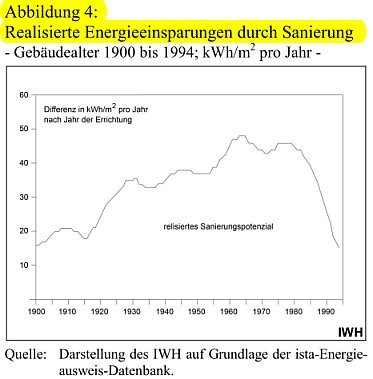
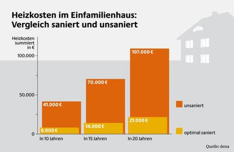

Weitere Datenübertragung Ihres Webseitenbesuchs an Google durch ein Opt-Out-Cookie stoppen - Klick!
Stop transferring your visit data to Google by a Opt-Out-Cookie - click!: Stop Google AnalyticsCookie Info.Datenschutzerklärung
Von der Intelligenz moderner Baumethoden/Haustechnik/Schimmelpilzzüchtung usw.
Ökovampirismus: Klimaschutzblutsauger auf der Jagd nach Ihren letzten Kröten
Der k- bzw. U-Wert und seine üblen Folgen für Ihre Gesundheit und Ihren Beutel
Leider hat der k-Wert (heute U-Wert), rechnerische Grundlage der Energiespartheorie, für die Praxis am Bau keine Bedeutung. Er
gilt normgemäß nur im stationären Zustand, also im Labor. Siehe hierzu Details:
Die erwarteten Energieeinsparungen durch Dämmung sind an Massivbauten (Mauerwerksbau, Holzbau mit massiver Wand aus Bohlen,
Mauerstein-/Lehm-Gefachen, Betonbau, ...) wie die meisten Baudenkmale sowie andere klassische und moderne Altbauten deswegen nirgends
eingetreten und technisch auch nicht möglich. Schäume und Gespinste können nämlich
Wärmeabfluß in der Praxis nicht dämmen. Dafür gibt es seit langem wissenschaftlich und praktisch unwiderlegbare
Beweise. Auch bei der Wärme gilt ja Heraklits "Panta rhei - Alles fließt". Und die manipulative
Labormesserei, die etwas anderes herauskriegt, befördert dadurch nur Baustoffsurrogate aus Schäumen, Porenschwammmsteinen und
Gespinsten, nicht jedoch die für den Wärmedurchfluß wirklich schwer durchdringbaren ungelöcherten Massivstein und
ungehäckseltes Massivholz bzw. andere echt massive Baumaterialien. Jeder kann das übrigens in punkto sommerlicher
Wärmeschutz erfahren, wenn er nur mal in eine alte Kirche gehen würde, eine Burg oder sonst einen echten Massivbau. Und nur
nach der bauphysikalischen Schwindeltheorie - da ohne Speicherfähigkeit der Bausubstanz und ohne Sonnenstrahl des Himmels - zum
Anfeuern der Umsätze ihrer Lobbyisten dankbar aufgenommen von der "Klimaschutzpolitik" quer durch alle etablierten Parteien
- können die Dämmstoffe Energie sparen.
Konrad Fischer: Fassaden energetisch richtig und kostensparend sanieren 1
Das Deutsche Ingenieurblatt DIB, Kammerorgan der Ingenieure, Heft 11 2008 läßt uns zum Energiesparbeschiß endlich
mal folgendes lesen: "Wahrscheinlich ist ... eine geringere Energieeinsparung als im (nach DIN/EnEV) unterstellten
Gebäudemodell berechnet, da die Studie ("Wirtschaftlichkeit energiesparender Maßnahmen für die selbst
genutzte Wohnimmobilie und den vermieteten Bestand in Bezug auf die Anforderungen der Einergieeinsparverordnung (EnEV)
ab 2009" des Institutes Wohnen und Umwelt IWU Darmstadt für die Bundesvereinigung der Spitzenverbände der
Immobilienwirtschaft BSI - Download pdf)
als Ausgangspunkt der Wirtschaftlichkeitsberechnungen beim theoretischen Energiebedarf
festgelegter Mustergebäude ansetzt. Eine aktuelle Auswertung von Energieausweisen der Arbeitsgemeinschaft für
zeitgemäßes Bauen zeigt, dass der tatsächliche Energiebedarf in der Praxis erheblich niedriger ist, als
der theoretische Energiebedarf. Eine Sanierung, die sich bei einem hohen Energiebedarf für den Eigentümer
"theoretisch" rechnet, kann praktisch trotzdem unwirtschaftlich sein. ... Es ist erkennbar, dass sich für jeden
Eigentümer die Notwendigkeit einer belastbaren Ermittlung des tatsächlichen Einsparpotenzials ergibt, die
auch den gegenwärtigen tatsächlichen Energieverbrauch in Bezug nimmt. ... Energieberatung, Planung und
Qualitätskontrolle sind in den Investitionskosten der Studie nicht veranschlagt."
Das Ingenieurblatt drückt es vorsichtshalber äußerst vornehm aus, was sich Kritiker des einschlägig
bekannten Darmstädter Instituts schon lange fragen: Vielleicht es geht dort nämlich doch nicht ganz mit
rechten Dingen zu und in manchen Studien wird u.U. solange gelinkt, bis was Gutes für die Dämmpropaganda
herauskommt? Wirtschaftlichkeitsberechnungen ohne Ansatz der wahren Einsparpotenziale, ohne Ansatz der Vollkosten und
vielleicht noch ein paar andere Schlawinereien - darf man die heutzutage seriös nennen? Peinlich für die
so hochmögenden Auftraggeber, die sowas kommentarlos schlucken und aus den Beiträgen ihrer einfaltspinselingen
Mitglieder bezahlen! Oder war es wieder mal nur Spezlwirtschaft auf höchstem BRD-Niveau, wer weiß das schon
in diesen unseren Zeiten? Wie lachhaft und eigensüchtig die Spitzenvertreter der Immobilienwirtschaft auf die
EnEV-Novelle 2009 reagieren und nur ihre Schäfchen ins Trockene bringen wollen, ohne das zugrundeliegende
Lügengebäude namens "Klimaschutz" auch nur im geringsten in Frage zu stellen, können Sie sich übrigens
hier reinziehen: Stellungnahme
der Bundesvereinigung Spitzenverbände der Immobilienwirtschaft (BSI) zur öffentlichen Anhörung zum
Entwurf eines Dritten Gesetzes zur Änderung des Energieeinsparungsgesetzes im Ausschuss für Verkehr, Bau und
Stadtentwicklung des Deutschen Bundestages am 10. November 2008 (PDF). Erbrechen garantiert!
"Die wissenschaftliche Erkenntnis, dass der Mensch den Klimawandel verantwortet, ist unumstößlich. Die
Temperatur unserer Biosphäre hat sich während der letzten 100 Jahre wahrnehmbar erhöht. Wetterextreme
nehmen mehr und mehr zu. Wenn wir unsere Lebens- und Verhaltensweisen nicht ändern, wird sich die Erwärmung
der Erde mit verheerenden Folgen auf unser Leben und auf die Zukunft nachfolgender Generationen auswirken."
Hä? Unumstößliche Erkenntnisse der Wissenschaft? Seit wann gab es das jemals? Wahrnehmbare Temperaturerhöhung
seit 100 Jahren, obwohl sich dies nur auf statistische Daten zweifelhaftester Herkunft bezieht und seit 10 Jahren diese
Daten eine stetige Abkühlung ergeben? Zunehmende Wetterextreme, obwohl alle unverfälschten statistischen
Erhebungen dem Hohn sprechen? Diktatorische Forderung nach unser aller Verhaltensveränderung? Wer kann es wohl sein,
der sich dermaßen anmaßend und verantwortungslos über die Wahrheit hinwegsetzt? Der Papst?
Fundamentalistische Evangelikale? Neonazis reinsten Wassers? Die organisierte Kriminalität? Aber nein! Es ist die
Präambel eines sog. Manifestes namens (hochtrab, hochtrab) "Vernunft
für die Welt" - dem Bundesbauminister seitens der Bundesarchitektenkammer und allerlei anderer
Berufsorganisationen der deutschen Architekten und Ingenieure überreicht und bald darauf als deutscher Beitrag der
Architekten und Ingenieure in die UN-Klimakonferenz im Dezember 09 in Kopenhagen eingebracht. Obwohl ich als bayer.
Architekt Mitglied der Architektenkammer sozusagen mitgefangen bin - Leut, glaubt's mir - mit derartigem Humbug - trotz
allerlei wohlgemeinter Vorstellungen und Absichtserklärungen in den folgenden Manifest-Rubriken "Wir müssen
.. wollen ... werden" habe ich gewiß nichts zu tun. Ganz im Gegenteil - ich bemühe mich wirklich nach besten
Kräften, dem immer mehr um sich greifenden Klimaschutzbeschiß und der vollständig
unbegründeten und nur den Ökoprofiteuren dienenden Klimahysterie durch Klimasimulationen mithilfe
wissenschaftliche Aufklärungsarbeit entgegen zu treten:
Doch was hilft es? Denk ich an Deutschland in der Nacht ...
Die ebenfalls deutsche Gesellschaft für Mauerwerksbau läßt zur EnEV-Novelle dafür die Sau raus und
einen wirklichen und unabhängigen Gutachter - Prof. Dr. Volker Eichener - ran. Das "Modernisierungs-Magazin 10/2008"
berichtet wahrheitsgetreu darüber, daß sich die von der Bundesregierung verabschiedete Verschärfung der
EnEV wirtschaftlich nicht begründen lasse und die Entscheidungsträger mit getürkten Gutachten hinters
Licht führe. Ab Januar 2009 sollen die Anforderungen an die Energieeffizienz um weitere 30 Prozent verschärft
werden, 2012 nochmals um weitere 30 Prozent. Hans Georg Leuck, Vorsitzender der Gesellschaft für Mauerwerksbau
DGfM, wird zitiert:
"Mit der EnEV-Novelle würde die falsche Wohnungsbaupolitik der letzten Jahre fortgesetzt. Sie würde
Investitionen behindern." Es gibt also doch noch Leute in der Baubranche, die ihr Hirn nicht an der Garderobe
abgegeben haben und nicht auftragsgeil im Prokrustesbett der Macht herumhuren. Und der DGfM-Geschäftsführer Ronald Rast bringt es so auf den Punkt: "es
kann nicht nachgewiesen werden, dass sich energetische Investitionen rechnen." und kritisiert, "dass die
Bundesregierung im August zur EnEV-Novelle zwar ein Gutachten des Darmstädter Passivhaus-Instituts vorgelegt habe,
dieses aber gravierende Schwächen beinhalte. Tatsächlich weist Professor Volker Eichener in einem
Gutachten
nach, dass die Studie aufgrund zahlreicher Mängel wertlos sei. Der Experte der Fachhochschule Düsseldorf und
des Instituts für Wohnungswesen, Immobilienwirtschaft, Stadt- und Regionalentwicklung an der Ruhr-Universität
Bochum kommt in seiner Analyse zum Ergebnis, dass sich eine energetische Sanierung bei der Erreichung von
Klimaschutzzielen für Immobilieneigentümer in vielen Fällen nicht auszahlt." Der Bundesregierung
wirft Leuck vor, die überteuerten Investitionen in den angeblichen Klimaschutz "schönzurechnen": "Daher
warne ich davor, Haus- oder Wohnungsbesitzern vorzugaukeln, energetische Sanierungsinvestitionen würden sich
für sie mittelfristig auszahlen."
Wir kennen solch diplomatische Sprache - übersetzt könnte das verquaste Geseiere der DGfM vielleicht
heißen: Die Bundesregierung und die bestochenen Helfershelfer in der beteiligten ministeriellen Administration
versuchen wieder einmal mithilfe für teueres Steuergeld professionell vereinseitigter Gefälligkeitsgutachten von
einschlägigen Ökoprofiteuren sowohl den Bundesrat, die Abgeordneten wie auch das eigene Volk und alle Medien voll zu
verhohnepipeln, um sie dem Ausschlachten der Profiteure auszuliefern. Oder liegt hier ein Übersetzungsfehler
vor?
Doch zurück zum Thema Dämmstoffmüll: Die geforderten Energiesparmaßnahmen schädigen nicht nur
die öffentlichen und privaten Kassen (Profiteure ausgenommen). Die modernen "Dämmstoff"-Konstruktionen
bedrohen außerdem die gesamte Bausubstanz durch konstruktionstypisch überhöhte und sogar vom
Fraunhofer-Institut für Bauphysik meßtechnisch nachgewiesene kondensatbedingte
Feuchteaufnahme und -speicherung. In "Risiken richtig beurteilen und
vermeiden. Schimmel innen - Algen außen" kommen die Autoren Prof. Dr.-Ing. Dipl.-Phys. Klaus Sedlbauer und
Dr.-Ing. Martin Krus vom Fraunhofer-Institut für Bauphysik ebenfalls im DIB 11/08 obendrein zur Erkenntnis,
wonach "die Verbesserung des Wärmedämmstandards zu einem deutlich höheren Risiko eines Befalls der
Außenfassade mit Schwärzepilzen oder Algen" führt (S. 9). Und zwar wegen der systematisch bedingten
hohen Feuchteaufnahme in nicht ausreichend speicherfähigen Dämmfassaden.
Da mutet es nachgerade höhnisch krass an, wenn ein Denkmalpfleger Michael Habres ausgerechnet in den
"Denkmalpflege Informationen Nr. 141, November 2008" des Bayerischen Landesamts für Denkmalpflege in
München zur Instandsetzung des ehemaligen Amtshauses von Schnelldorf (Lkr. Ansbach) zum Besten gibt: "Der
Außenputz musste, da er sich großflächig als schadhaft erwiesen hatte, gänzlich erneuert werden.
So bot sich die Gelegenheit, einige Zentimeter Wärmedämmputz aufzutragen und das Gebäude in gewissem
Maße dämmtechnisch zu optimieren. Anschließend wurden die Fassaden nach Befund in gebrochenem
Weiß und in Grau gefasst." (S. 24). In einem weiteren Beitrag ist dann davon die Rede, daß bei der
Sanierung eines spätmittelalterlichen Vogteibaus in Schwabach das "Regelwerk der Energieeinsparverordnung
(EnEV) im Grundatz eingehalten werden musste" (S. 26) - als ob es nicht gerade bei Baudenkmälern die
einfachste aller Übungen wäre, mit Hilfe des EnEV § 24 und in gesetzestreuer Befolgung des
Wirtschaftlichkeitsgebots des EnEG § 5 das ansonsten denkmalschädliche EneV-Dämm-Regelwerk auszuhebeln -
auch und wg. Denkmalschutz selbstverfreilicht!
Doch es liest sich noch mehr als krass weiter dort: "Da es sich um eine Maßnahme der örtlichen
Wohnungsbaugesellschaft gehandelt hat, musste gewährleistet sein, daß die Maßnahme nach den Prinzipien
der Nachhaltigkeit und Energieeffizienz angelegt ist. ... vollständige Dämmung der Gebäudehülle
nach der gesetzlich vorgeschriebenen sog. Zwangslüftung ...Obwohl aus bauphysikalischen Grüdnen eine
Aufsparrendämmung zu bevorzugen gewesen wäre, entschied man sich für eine Zwischensparrendämmung,
da die authentische Wirkung bzw. detailgetreue Reparatur der Ortgangbereiche und der profilierten Traufgesimse
denkmalgerecht nicht möglich gewesen wäre."
Jo mei und sackerlzäment, wenn sich sogar die als besonders kompetent angesehene boarische Denkmalpflege zum
fördernden Fürsprecher der denkmalzerstörenden Dämmkriminalität macht und vor der
Dämmpropaganda mit neudoitschen Worten wie "dämmtechnisch optimieren" nicht zurückschreckt, das
läßt schon tief in die fachliche Befindlichkeit und die ausgehungerte bzw. verdummte Personaldecke der
modernen Denkmalpflege einblicken. Da hilft kein "gebrochenes Weiß" mehr weiter, es ist vielleicht sogar
insgesamt zum Kotzen! Abgründe tun sich auf, oddä? Alles halb so schlimm? Aber nein, denk mal an!:
So könnte auch das vom bayerischen Denkmalamt bezuschußte Dämmen nach kurzer Zeit aussehen
- hier eine dämmtechnisch unter den Augen der Denkmalbehörde und mit denkmalbedingten Steuerersparnissen und
Zuschüssen vergewaltigte Denkmalfassade in Baden-Württemberg, die ich für die
geschädigten Eigentümer begutachten mußte:
Dämmputz-Fassade - übrigens an allen Seiten gerissen - man beachte den vergeblichen Rißklebeversuch,
nicht nur in den Rißbereichen total aufgefeuchtet und am Sockel naß und abgängig. Innen sind die
Wohnungen teils verschimmelt, logo.
Selbstverständlich wäre die Denkmalpflege nach alter Konservierungs-Väter Sitte (DEHIO! RIEGL!) mit einer
vehementen und engagierten und fachkundigen Verteidigung des armen, aber herzensglühend heißgeliebten Baudenkmals gegen den
selbstsüchtigen Dämmfanatismus die einzig sinnvolle "nachhaltige und energieeffiziente" Chose gewesen, die
auch den Gesetzgeber mit seinem Energieeinspargesetz EnEG - Rechtsgrundlage der Energieeinsparverordnung - dort wird
die WIRTSCHAFTLICHKEIT der Energiesparerei gesetzlich gefordert! - einzig befriedigt hätte. Wo sind die
entsprechenden Kenntnisse in den Denkmalbehörden? Welcher bayerische Denkmalpfleger kennt die radikal
aufklärende Schrift des Deutschen Nationalkomitees für Denkmalschutz "Energieeinsparung bei Baudenkmälern,
Heft 67"? Niemand? Schade für den Denkmalschutz, schade aber auch für jedes alte oder neue Bauwerk (Altbau,
Neubau) und vor allem jeden Bauherren. Gottseidank gibt es aber auch noch ein paar Dämmskeptiker in den
Denkmalfachbehörden - sie sind jedoch nach meiner unmaßgeblichen Einschätzung eher selten.
Die mit der Gebäudedämmung und -abdichtungverbundene Gesundheitsschädigung der Wohnbevölkerung darf
bei der Gesamtbeurteilung der staatlich geförderten und erzwungenen Dämmerei und Dichterei im Land der Dichter
und der Dämmer nicht übersehen werden. Nicht weiter vor sich hindämmern! Aufwachen, aber Hallo! Wir sind
Weltmeister!, und zwar des fruchtlosen Energiesparens und - der Asthma- und Allergiekranken. Schimmelpest,
Silberfische und Milben sind inzwischen vertraute Begleiterscheinungen der 'energetischen Sanierung' des Altbaubestandes. Ganze
Sachverständigenheere und Mietervereine leben davon und loben deswegen in einem Fort das tolle Wirken der staatlichen
Energiesparpolitik. Hier auf dieser Seite wollen wir etwas hinter die Energiespar-Kulissen blicken, auch mal gegen den Strich bürsten
und dabei die "offiziösen" Medienergüsse durchaus einseitig selektieren und kritisch kommentieren.
Im Obermain-Tagblatt Lichtenfels las man am 10.10.00 zur mißglückten Energiesparerei:
"Allergien nehmen weiter rasant zu
Etwa jeder dritte Deutsche ist nach Angaben des Ärzteverbandes Deutscher Allergologen (ÄDA) Allergiker. "Allergien nehmen
rasant zu", sagte der Bonner Professor Joachim Sennekamp anlässlich des 26. Allergologen-Kongresses. Die neusten Zahlen zeigten, dass
bereits 15 Prozent der Deutschen Heuschnupfen, neun Prozent eine Kontaktallergie und fünf Prozent Asthma hätten.
Risikofaktoren sind nach Ärzteangaben die erhöhte Milbenbelastung in modern isolierten Wohnungen, übertriebene
Hygienemaßnahmen, der zunehmende Straßenverkehr, Ernährungsgewohnheiten sowie die vermehrte Haustierhaltung."
Das Bauministerium tut nun das Seine dazu, damit möglichst bald die 100-Prozent-Krankheitsrate bei der klimaschützenden
Wohnbevölkerung erreicht wird. Isolierzwang mittels klimarettender Energiesparverordnung heißt die segensreiche Aktivität. Sie
läßt die Bau- und Gesundheitsbranche jubeln. Manche munkeln, daß die Pharmamafia, unbestritten die mächtigste international agierende Lobby, der
eigentliche Motor des falschen Dämmens und Dichtens auf dem Verordnungswege sei. Unzählige Medikamente mit ständig steigenden
Umsatzerlösen werden so verkauft, die allein durch mehr Lüftung und trockene Wohnverhältnisse ersetzt werden könnten. Wunderglauben wird allgemein verbreitet -
Allgemeine Bauzeitung 12.1.01: "Nachhaltig bauen mit Polyurethan-Dämmstoffen ... Bereits mit einer 1,9 cm starken Hartschaum-Platte erziele man
denselben Wärmedämmwert (k-Wert) wie mit einer 153 cm starken Beton-Wand." - ohne zu fragen, ob so praktikables und energiesparendes Bauen
tatsächlich entstehen kann? Die Chemieriesen dürfen dabei zweimal kassieren: Für die von ihnen produzierten Dämmstoffe und die Medikamente.
Synergie heute.
Die Rechtsfolgen für die anderen Beteiligten: Der geschädigte Mieter behält Miete ein und klagt gegen
den Vermieter. Der geschädigte Bauherr geht - von klugen Rechtsanwälten beraten - nicht auf den bankrottgefährdeten Handwerker, sondern auf
den haftpflichtversicherten Architekten los. Nur der kann ja seinen Pfusch versichern.
Interessant ist aber, was sich im juristischen Untergrund entwickelt: Ausgehend von der Beobachtung amerikanischer Verbraucherschutzklagen werden Modelle entwickelt, die Produzenten der untauglichen Bausysteme
wegen fehlerhafter Inverkehrsbringung gem § 3 Produkthaftungsgesetz zu beanspruchen. Hier winkt das eigentliche Geld für die
arbeitslose Juristenriege.
Problematisch ist die Sache vor allem für die mit Fördermitteln und Refinanzierungsdruck in
vorausseilenden Gehorsam gejagte Wohnungswirtschaft. An wen soll sie sich halten, wenn herauskommt, wie nutzlos ihre
Modernisierungsumlagen verpulvert wurden? An die Handwerker und Planer, wie oben erwähnt? Ist das gerecht? Ist
nicht eigentlich der Staat schuld an diesem Energiesparschwindel? Nachdem nun sogar der Wohnungsabriß
gefördert wird, wäre die Rückführung der kaputtsanierten Wohnungen in gesunde Zustände ein
breites Betätigungsfeld der Subventionsspezialisten. Oder soll man sich halt doch an die Produzenten der
Dämm- und vorgeblichen Energiesparsysteme mittels Anlagentechnik wenden? Hätten Sie ihren Mist halt
wahrheitsgetreu "in Verkehr gebracht" - mit Hinweis auf Nebenwirkungen und Risisken. Nachdem nun sogar die
BSE-zerkristen Bauern mit Witti und Fagan ihre Rechte reklamieren - sicher haben diese Wiedergutmachungsspezialisten
auch keine Probleme damit, die gelackmeierte Wohnungswirtschaft zu vertreten ...
In der Energiefrage spielt auch die von den Medien zunehmend übersteigerte
(sebnitzierte?) Klimahysterie eine wichtige Rolle. Sie verheißt uns erdumfassende Schockzustände und
fördert das menschenverachtende Geschäft mit der Angst. Die kritiklosesten Zeitgenossen fallen darauf herein.
Und die menschenverachtenden Weltverbesserer mit ihrer Mediokratie. Keine Maßnahme ist offenbar zu grausam, um
Mitbürger mit "falschem" Bewußtsein auf den Pfad des weltrettenden Gutmenschen zu prügeln, in Wahrheit
gerade die Ärmsten und Hilflosesten der Gesellschaft grausig auszuplündern. Gegen diesen
schwarz-rot-grün-gelben Ökoscheiß (von ÖKÖ-Steuer über EEG zu EnEV) war der marxistische
Totalitarismus ein reines Zuckerschlecken - selbst die der DVU nahestehende National Zeitung hebt den selbstverliebten
Sonnenanbeter Prof. Alt auf ihren Schild und tarnt solche Untaten als "Friedenspolitik". Ja, der Schoß ist
"fruchtbar noch".
Von der "EU-Energieeffizienzrichtlinie" zum Nationalen
Energiepaß/Energieausweis - So funktioniert der Ökofaschismus
Auch die EU mißbrauchen die "deutschen" Ökomafiosi für die Abzocke unserer wehrlosen Bevölkerung!
Kioto/Kyoto, CO2-Lüge und das
Märchen von bald endender "fossiler" Energie - kein Beschiß wird ausgelassen, um die
Ökoausplünderung auch EU-mäßig zu fördern. EU-Energieeffizienzrichtlinie/EU-Richtlinie
über die Gesamteffizienz von Gebäuden ("Richtlinie 2002/91/EG des Europäischen Parlamentes u. d. Rates
v. 16.12.2002 über die Gesamtenergieeffizienz von Gebäuden", im Amtsblatt der Europäischen
Gemeinschaft vom 4.1.2003 veröffentlicht) heißt hier die neueste Klima-Schutzgeld-Erpressung als wieder
einmal "erster Streich" unserer neofaschistischen ÖKO-Mafia, die nun dank international agierender Dämm- und
Heizungslobby "ins nationale Recht" umgesetzt wird. Bald muß an (nach derzeitiger Richtline vorerst
"öffentlichen") größeren Altbaufassade ein "Ausweis über die Gesamtenergieeffizienz an einer
für die Öffentlichkeit gut sichtbaren Stelle angebracht" werden (Art. 7 (3)): Der "Energiepaß".
Nur heurige Hasen glauben, daß diesem ersten öffentlichen Streich keine weiteren privat folgen.
In gewohnter Weise beeinflußt durch die Profiteure wird dann das passende Bundesgesetz - das Energieeinspargesetzt EnEG -
gegenüber der EU-Version noch wesentlich verschärft. Auszug Gesetzesänderungsvorschlag vom 11.4.05:
㤠5a
Energieausweise
Die Bundesregierung wird ermächtigt, zur Umsetzung oder Durchführung von Rechtsakten der Europäischen
Gemeinschaften durch Rechtsverordnung mit Zustimmung des Bundesrates Inhalte und Verwendung von
Energieausweisen vorzugeben und dabei zu bestimmen, welche Angaben und Kennwerte über die Energieeffizienz
eines Gebäudes, eines Gebäudeteils oder in § Abs. 1 genannter Anlagen oder Einrichtungen darzustellen
sind. Die Vorgaben können sich insbesondere beziehen auf
1. die Arten der betroffenen Gebäude, Gebäudeteile und Anlagen oder Einrichtungen,
2. die Zeitpunkte und Anlässe für die Ausstellung und Aktualisierung von Energieausweisen,
3. die Ermittlung, Dokumentation und Aktualisierung von Angaben und Kennwerten,
4. die Angabe von Referenzwerten, wie gültige Rechtsnormen und Vergleichskennwerte,
5. Empfehlungen für Verbesserungen der Energieeffizienz,
6. die Verpflichtung, Energieausweise Behörden und bestimmten Dritten zugänglich zu machen,
7. den Aushang von Energieausweisen für Gebäude, denen Dienstleistungen für die Allgemeinheit erbracht
werden,
8. die Berechtigung zur Ausstellung von Energieausweisen einschließlich der Anforderungen an die Qualifikation
der Aussteller sowie
9. die Ausgestaltung der Energieausweise.“
Jedem Käufer, jedem Mieter ist folglich - aber nur auf Anfrage und nicht bei laufenden Mietverhältnissen!,
eigentümerseits schriftlich von diesem ominösen Effizienzstatus, der ja sollgemäß keinerlei
Nähe zum tatsächlichen Energieverbrauch hat, mittels Vorlage des Energiepasses zu berichten. Damit er seinen Mängelprozeß dokumentengestützt
besser gewinnen kann? EU-Richtlinien-Art. (1): "Die Mitgliedstaaten stellen sicher, dass beim Bau, beim Verkauf oder
bei der Vermietung von Gebäuden Eigentümer bzw. dem potenziellen Käufer oder Mieter vom Eigentümer
ein Ausweis über die Gesamtenergieeffizienz vorgelegt wird." Und in 10-Jahresfolge muß ein sog.
Energieberater ständig nachzertifizieren, die perfekte Falle.
Klaus Werwath, Chefredakteur des Deutschen Ingenieurblattes DIB bringt die unsägliche Lage rund um die
die Energieberaterei aus technischer Sicht in seinem im Novemberblatt erschienenen Editorial "Die besten Fehler ..."
prächtig auf den Punkt:
"... in dem ... Artikel auf Seite 28, ... Überschrift "Ergebnis: erschreckend" ... [wurde berichtet über]
Resultate ... bei einem Vergleich von sechs ernst zu nehmenden Rechenprogrammen ..., die den Ingenieuren bei der
Bewältigung der DIN V 18599 [Energetische Berechnung, Bilanzierung, Bewertung von Gebäuden und Erstellung von
Energieausweisen. Berechnungs-Methode gemäß EU-Richtlinie für energieeffiziente Gebäude. Die
EnergieeinsparVerordnung (EnEV 2007) nimmt auf die DIN V 18599 Bezug.] helfen sollen. ... in vielen Anrufen, E-Mails
und Zuschriften aus ihrer Praxis als Ingenieure [legen Leser und ... Anwender der EnEV-Software] das bloß, was
eigentlich alle wissen, dass in der DIN V 18599 "einige Hundert Fehler und Widersprüche stecken", wie
[Software-Hersteller Dipl.-Ing. Andreas] Kern geschrieben hat, "darunter auch mehr als ein Dutzend schwerwiegende, die
nicht umgangen werden können".
Diese Fehler in der Norm aber sind der Grund dafür, dass viele Programme nicht so funktionieren, wie sie sollen.
Die Programmierer haben allerdings auch einen gerade zu absurd schweren Stand, sollen sie doch eine fehlerfreie
Software für eine fehlerhafte Software für eine fehlerhafte Norm schreiben; wobei "fehlerhaft" hier auch noch
für grotesk überfrachtet und nicht handhabbar steht ... Der Fall zeigt, dass eine Grundsatzdebatte
fällig ist darüber, was unsere Normen leisten sollen. ...
Diese Debatte muss aber aus Sicht derer geführt werden, die diese Normen praktisch anwenden, nicht aus der Sicht
derer, die sie bis zur fünfzehnten Stelle hinterm Komma theoretisch ausfeilen.
Das Ergebnis unseres Artikels, dass nämlich alle sechs analysierten Softwareprodukte bei der Eingabe eines
verhältnismäßig einfachen Gebäudes zu sechs zum Teil deutlich voneinander abweichenden Ergebnissen
kommen, ... ist ... erschreckend, und ... sollte die gesamte Fachwelt dazu anregen, ... vor allem öffentlich
darüber nachzudenken –, warum unsere bautechnischen Normen solche katastrophalen Dimensionen mit solch
folgenreichen Fehlerquellen angenommen haben, und wie man das schleunigst wieder zurückfahren kann. ... mit der
Veröffentlichung dieses Artikels [ist es uns] nicht darum gegangen ..., die Softwarehersteller schlecht zu machen,
sondern nur ... um den Beweis der Erkenntnis, dass mit der DIN V 18599 ein System vorliegt, das viel zu kompliziert und
unübersichtlich ist, als dass es in der Praxis problemlos umgesetzt werden könnte."
Ja, so macht Energiepaß Energiespaß. Und selbstverständlich dürfte Werwath wissen, daß
jegliche - und sei sie auch noch so sachlich und seriös vergetragen - Kritik am Energiesparschwindel aussichtslos
ist. Nicht umsonst haben die Ökoprofiteure seit Jahrzehnten ihre Strategie der Politikbeeinflussung genial
entwickelt, wer würde sich das nun aus der Hand schlagen lassen? Wo es doch so viel bringt!
Ja, dat kostet und dat bringts. Wie nur die Polydicker so arg treuherzig Weltrettung geben! Laßt uns alle drum dankbar sein. Und die Medien! Und die Spitzen der Wirtschaft! Und die Spitzen der Eigentümer- und
Mieterverbände! Dagegen war die alte Gleichschaltung ein buntestes Kaleidoskop der freiesten und frechsten Meinungen.
Ja, auch Ihre Banken machen da gerne mit und hetzen die angeblichen Energieberater in ihren Vortragssälen auf ihre
vertrauensseligen Kunden. Warum? Weil die Banken genau wissen, wie sich das für sie lohnen wird: Der untreue
Energieberater (soll's ja hin und wieder geben, vielleicht / viel leicht) "berät" dank seiner lizensierten
Energieberater-Software (raten Sie mal, wer die Lizenzgebühr einsteckt, ätsch,
ich weiß es!) und dank seiner für teuer Geld am Energieberater-Seminar erworbenen Zertifizierung (und wer
kassiert dabei hintergründig ab?) zum plumpen Knöpfligedrücke (kann nämlich auch nicht selber
rechnen!) zu allergröbstem Energievergeudungs-Unsinn:
Alles Pseudo-Energiespar-Mist, der sich voraussehbar und sicher niemals gegenrechnen wird und damit dem Privatkunden
aus dem Sparstrump Geld entzieht, das er dem zinsenfressenden Bankensystem in den Rachen schmeißen wird und
obendrein irre Schulden aufnehmen wird, alles fein geködert durch KfW-Förderkredite oder
Zuschußlappalien, die niemals den Mehrkostenaufwand rechtfertigen, selbst wenn ein wahres Wort am Energiegespare
wäre. Und so liest man in den Energieberater-"Gutachten" Gedöns und Geschmurchel wie folgt (aus: "
Energieberatungsbericht zur sparsamen Energieverwendung in Wohngebäuden vor Ort für das Einfamilienhaus in ...,
BAFA-Berater Nr. ... vom 18.10.2009 (Schreibweise gem. vorliegendem Originaldokument):
"Die Enquêtkommission des Deutschen Budnestages hat ermittelt, dass es, um die Folgen unseres Energieverbrauchs
in erträglichen Grenzen zu halten, erforderlich ist, bis zum Jahre 2050 den CO2-Ausstoß um 80%
(basis 1987) zu reduzieren und dieses bei wachsender Weltbevölkerung. Diese Zahl verdeutlicht die Dringlichkeit
von Energiesparmaßnahmen. Aus diesem Grunde sollte die Wirtschaftlichkeit von Maßnahmen nicht als alleiniges
Kriterium betrachtet werden."
Auf Altdeutsch: Weil es die Lobbyisten in der Kommission und Bundesregierung geschafft haben,
den gewillkürten "menschengemachten Klimawandel" zum Fundament der
Ökoabzockpolitik zu machen, soll der vom Energieverbrater hereingelegte Kunde seine
wirtschaftlichen Interessen nicht mehr angemessen wahrnehmen und nicht nur die seinen Geldbeutel schädigende
Falschberatung widerspruchslos bezahlen, sondern auch all die unsinnigen Baumaßnahmen bezahlen. So schön ist
Bauernfängerei heute.
Wie gut, daß weder Bankkunden noch die meisten Bauherren nicht rechnen können. Setzen sechs!
Oder fragen Sie Ihren schönen Energieverbrater, der Sie für seinen zum Himmel schreienden Datenmüll
gerne von Ihrem schnäden Mammon befreit (seien Sie doch froh, ein reicher Jüngling kommt nie ins Himmelreich!),
wie er sich die Gewährleistung und Haftung für sein Beratungsergebnis - Zehn- bis Hundertausende wenn nicht
Millionen Fehlausgaben für Sie, mit denen Sie meist Ihr Haus und die Gesundheit seiner Bewohner / Nutzer ruinieren!
- aussähe? Und weiden Sie sich an seinem (übrigens auch auf dem Energieberaterseminar und unter Eindruck wohl nicht immer
gerichtsfester Meinungsabsonderungen der BAFA einstudierten / eingecoachtem Gestammel). Denn trotz aller verzweifelten Versuche der
nur angeblich raffinierten Energieberater, sich von jeglicher Haftung für ihren ungeheuerlichen Datenmüll freizuzeichnen, bleibt
eines doch zu wissen: Die Leistung des Energieberaters kann tausendundeinsmal als "Beratungs-Dienstleistung" nomenklatiert werden. Es
bleibt für den Besteller nicht nur nach verständiger Rechtsauslegung eine auf Erfolg getrimmte Werkleistung nach BGB.
Deswegen schreiben nicht nur juristische Profis wie Andreas Weglage, Thomas Gramlich, Bernd Pauls, Stefan Pauls, Ralf Schmelich und
Tobias Jasef in "Energieausweis - Das große Kompendium: Grundlagen - Erstellung - Haftung, 2009 zum Haftungsthema im hier besonders
interessierenden Umfeld der Anspruchsvoraussetzungen für einen sog. "Mangelfolgeschaden gem. § 280 Abs. 1 BGB" sehr
tiefschürfend und m.E. auch sehr zutreffend auf Seite 267 u.a.:
"Ersatz sonstiger durch einen Mangel verursachten Schäden ...
Es handelt sich hierbei um Schäden an den Rechtsgütern des Bestellers in Folge von Mängeln an dem bestellten Werk
[KF: des Energieberaters, also Energieausweis, Energieberatung, Energieberatungsbericht]. Diese sog. Mangelfolgeschäden
(... Begleitschäden ...), die der Besteller [KF: Hausbesitzer] also außerhalb des eigentlichen Werkes an seiner Gesundheit
[KF: Schimmelpilzbefall infolge des dem Beratungsergebnis beispielsweise folgenden Einbaues dichter Fenster oder nässeanreichernder
Dämmstoffe], an seinem Eigentum [KF: Geldverluste infolge in Wahrheit unwirtschaftlicher, also nicht in 10 Jahren amortisierbarer
Energiesparmaßnahmen, die der Energieberater als in irgendeiner Weise "sinnvoll" empfahl] oder an sonstigen Rechtsgütern
erleidet, werden hiernach ersetzt.
Anspruchsvoraussetzungen
Auch hier gilt zunächst wieder, dass sich der Aussteller [KF: eines Energieausweises, also der Energieberater] nicht [KF: durch
irgendwelche skurrilen Haftungsfreizeichnungsklauseln in Form allgemeiner Geschäftsbedingungen] entlasten kann, das heißt, er
muss den Schaden, den er durch seine [KF: nur durch individualvertragliche Vereinbarungen abbedingbare] Pflichtverletzung zu vertreten
hat, tragen [KF: Zahlen macht Frieden]. Dies wird stets, solange der Aussteller nichts zu seiner Entlastung vorträgt [KF:
Beispielsweise eine vom Auftraggeber einzeln gegengezeichnete handschriftlich im Auftragsschreiben eingefügte und einzeln
gerichtsfest nachweisbar beratene Vertragsklausel, wonach es zum beauftragten Leistungsumfang des Energieberaters gehört, auch zu
bautechnisch ungeeigneten und dramatisch unwirtschaftlichen Weltrettungsmaßnahmen auf Kosten und am Bauwerk des Auftraggebers ohne
jegliche Haftungsverantwortung zu raten, ohne dies im Einzelnen darlegen zu müssen. Dann darf er freilich zu dicker Dämmung und
Dreifachisolierverglasung, zu Heizungserneuerung inkl. Anzapfung australischer Thermalquellen, zu Wärmerückgewinnung, bis alle
Hausbewohner am Bakterienschleim aus den Abluftkanälen gestorben sind, zuraten. Aber nur dann.], vermutet. Des Weiteren muss der
Mangel bereits bei der Abnahme des Energieausweises [KF: und ggf. Energieberatungsberichts] vorgelegen haben und es müssen durch
diesen Mangel bedingt Mängelfolgeschäden eingetreten sein.
Umfang und Höhe eine Mangelfolgeschadens
Der Umfang bzw. die Höhe eines so entstandenen Schadens ergibt sich aus § 280 Abs. 1 BGB. Insbesondere erfasst der
Mangelfolgeschaden ... auch einen Schmerzensgeldanspruch, wenn die Voraussetzungen des § 253 Abs. 2 BGB vorliegen, das heißt
ein Rechtsgut wie insbesondere der Körper oder die Gesundheit verletzt worden ist.
Ein typisches Beispiel für Mängelfolgeschäden sind die Kosten von aufgrund einer falschen Empfehlung zur Steigerung der
Gesamtenergieeffizienz vorgenommenen (sinnlosen) Baumaßnahmen, die Kosten der Beseitigung von Schimmelpilzen ... (als Folge der
sinnlosen Baumaßnahme) und schließlich eine Entschädigung in Geld für die Gesundheitsbeeinträchtigungen der
Bewohner ... als weitere Folge dieses Mangels. ...
Der Geschädigte muss für die Geltendmachung eines konkreten Schadens die Ursächlichkeit zwischen Rechtsgutverletzung
und dem Schaden dartun ... die Verbindung zwischen dem mangelhaften Energieausweis und den dadurch entstehenden Kosten durch entsprechend
eingeleitete - jedoch in ihrer Wirkung - völlig ungeeignete Umbau- und Modernisierungsmaßnahmen. ...
Zum Beispiel muss ein Energieausweisersteller für Schäden haften, die durch entstandene Feuchtigkeit in Folge seines
fehlerhaften Energieausweises an den Sachen eines Mieters des Bestellers entstanden sind ... hingegen haftet der Aussteller nicht für
den Verdienstausfall, den der unter Bluthochdruck leidende Besteller aufgrund eines - wegen des mangelhaften Energieausweises -
erlittenen Wutanfalls und daraus resultierenden Herzinfarktes erleidet. ...
Liegt eine Rechtsgutverletzung [KF: als Folge von Ausweismängeln, die nicht der Regelverjährungsfrist von drei Jahren
unterliegen, da der Geschädigte das Vorliegen der anspruchsbegründenden Umstände vorher nicht erkennen konnte]
bezüglich des Lebens, des Körpers, der Gesundheit ... vor, gilt für die Verjährung gem. § 199 Abs. 2 BGB eine
30-JahresFrist, beginnend mit der Vornahme der Handlung, die den Schadensersatzanspruch begründet.
Bei einer Verletzung von Eigentum ... gilt für die Verjährung von Schadensersatzansprüchen gem. § 199 Abs. 3 BGB eine
Frist von 10 Jahren ab ihrer Entstehung und sogar eine Frist von 30 jahren - ohne Rücksicht auf ihre Entstehung - von der Begehung
der Handlung, der Pflichtverketzung oder dem sonstigen den Schaden auslösenden Ereignis an."
Tja, Energiesparen will offensichtlich gelernt sein, wie inzwischen viele Schadnesersatzprozesse gegen Energieverräter belegen. Auch
der Präsident der Architektenkammer BW jammerte im DAB 9/2010 schon darüber herum. Zuallermeist fängt Energiesparen aber
mit Energieberater Einsparen an. Das legen jedenfalls alle mir bis dato vorgelegten Energieberatungsergebnisse nahe, die in grauenhafter
Weise den Energiebedarf, teils sogar den Energieverbrauch! durch grottenfalsche/gefälschte Rechennannahmen fahrlässig/grob
fahrlässig/vorsätzlich? falsch berechnen und geradzu haarsträubendste Absurditäten vom nassen
Wärmedämmpulli für ihr bis dato gesundes Haus über Heizungsrauswurf bis zu Technikschnulli empfehlen.
Wie konnte es nur dazu kommen?
Schon dolle, was sich die Ökos alles herausnehmen, damit ihre diplomierten Fachexperten mit U-Wert-Falschberechnungen
ständig abkassieren. Noch doller: der gutmütige Michel! Und so nehmen nicht nur die doofen Verbraucher, sondern auch die
deutschen "energieintensiven" Produzenten und ihre Arbeitnehmer (z.B. Aluminium, Kalkwerke und -steinbrüche, ...) ihren
ökogemachten Untergang - bis auf ein bisserl Pseudo-Demo und Dynamitgetöse - widerspruchlos hin. Immer feste
schwarz-braun-rot-grün-gelb wählen, christliberalgrünsozialextreme Freunde!
Es folgt der zweite Streich - nun auf Bundesebene. Ausgekaspert nach der bewährten Methode "Etikettenschwindel":
orwellscher Wortmißbrauch mittels Drohkulissen, gärtnernde Böcke und Verrat der Verbraucher und Mieter
durch deren feindlich "überwanderte" Verbandspitzen - die pressure groups der Ökos. So kocht man auch den
letzten ehrlichen Politiker weich, um das verordnungsgerechte Ausmagern des Volksvermögens weiter zu
verschärfen - die unverzichtbaren metzgerwählenden Massen wollen es ja so:
OT 15.3.03
"Für Energie-Etikett"
BERLIN.
Verbraucherschützer, der Deutsche Mieterbund und der Verkehrsclub Deutschland haben eine Kennzeichnung des
Energiebedarfs von Autos und Wohnraum entsprechend dem EU-Recht gefordert. Die Verbände werfen der Bundesregierung
Versäumnisse vor. Es müsse nun umgehend ein leicht verständliches Label eingeführt werden, damit
Verbraucher beim Autokauf oder der Immoblienwahl den Energiebedarf auf einen Blick erkennen können."
Gegen diese scheinheiligen Mächte ist jede Gegenwehr zwecklos und - die verordnete EnEV-Verschärferei
hat's ja hinreichend erwiesen - von vornherein zum Scheitern verurteilt.
Obendrein tut sich nun die Administration bis zur kommunalen Ebene mit der Deutschen Energieagentur dena (das klingt schon sehr
verdächtig nach Energiediktatur, oder?) zusammen, um den Mieter mit sog. Heizspiegeln - natürlich nur auf wild errechneter Basis - aufzuhetzen,
seinem Vermieter das Pseudo-Energiespar-Messer auf die Brust zu setzen. "Dämm, reiß Heizkessel raus oder nimm Mietminderung hin", so lautet
die Devise. Das wird wie immer mit ein paar Testballons in den Bundesländern ausprobiert (z.B. Mainz, Tübingen, Freiburg, ...), um die schwächliche
Gegenwehr auszutesten, seine Strategien zu verfeinern und dann flächendeckend gibs ihm! Administration der verbrannten Erde vom Feinsten. Der beschissene
Mieter zahlt die Zeche, der noch beschissenere Hausbesitzer mit. Wäre doch gelacht, wenn nur die Atommultis
mittels EEG und sogenannter "Energiewende" zur staatlich sanktionierten Preistreiberei reicher würden, die
ölige Dämm- und Heizbranche soll auch mal dürfen: EnEV + Dämmpaß bis zum Abwinken. Daß
CO2 - egal ob manmade/menschengemacht, von Rindern (Kühen), Ziegen, Schweinen, Lämmern (Schafen), Ratten,
Mäusen und Wichteln ausgestoßen bzw. ausgegörgst oder ausgefurzt - ein Popanz in den Händen einer Pseudo-Wissenschaftler, geldgieriger
Ökoprofit-Unternehmen, Medien und einer mithelfenden Administration ist, daß
Dämmstoff nicht so dämmt, wie gedacht, daß der Austausch bestens funktionierender Heizkessel gegen neuen
Technikschmonz wirtschaftlicher Wahnsinn ist - schietegal. Hauptsache, es lohnt sich für die Mafia der Ökoschwindler
und das Umkrempeln unserer Gesellschaft in einen ökommunistischen Gulag.
Ein krasses Beispiel dazu bietet - neben unzähligen anderen in unserer Bananrepublik - die Evangelische Stiftung
Neuerkerode: Als "Umbau und energetische Sanierung" der aus dem Jahre 1972 stammenden Häuser Elm 1 und 2 wird auf dem
Bauschild gepriesen, was die Wolfenbüttler Presse im Januar 2008 berichtet. Dort strebt man nach Aussage des
Pressesprechers der Stiftung bei den entstehenden 8 Einzelappartements mit 28 Wohnplätzen einen "optimalen
energetischen Standard" und den "Energiestandard EnEV - 30%" an, der angeblich den Energieverbrauch "um 60 %" senken
soll. Das will man mit "umfangreichen Dämmmaßnahmen und neuen "Passivfenstern" (gem. Passivhausstandard)
erreichen. Das Kostenvolumen allein der "energetischen Sanierung" beträgt schlappe 1.000.000 EUR, also eine Million
Euro. In "13 bis 15 Jahren" soll sich das rechnen. Mein Informant schreibt dazu:
"2 Mio € für Sanierung in Neuerkerode, davon 1 Mio € für Dämmaßnahmen und Passivfenster bei 28
Wohneinheiten. Da muß man doch trotz PISA mal die 'Milchmädchenrechnung' aufmachen:
1 Mio € / 28 = ca. 37.500 € pro WE. Muß man die finanzieren, so ergibt sich grob (6%;1%, 30 Jahre) 210 € / Monat.
(Tatsächlich bezahlt man dann insgesamt ca. 81.500 €!! Die Bank wird 's freuen)
Wenn ich von den letzt- bzw. vorletztjährigen Heizkosten für meine 120 m² (zugebenermaßen Mittel-) Wohnung
(Altbau mit 36er Massivwänden) von 81 € 2006 bzw. 65 € 2007 pro Monat ausgehe, schätze ich den Bedarf einer
o.g. Wohneinheit auf die Hälfte.
Stellt sich doch die Frage, welchen Sinn es macht, um zur monatlichen Einsparung von (optimistisch vermutet, sagt
die in Mode gekommene Vorstellung vom ökologischen Bauen: 50%) ca. 17 € eine Aufwendung von 210 € zu treiben?"
Nun, solche Fragen darf man aber nicht stellen, wenn Ökogläubige das ihnen anvertraute öffentliche Geld verausgaben. Sonst
kommt man wieder mal auf den Scheiterhaufen oder wird vorläufig wenigstens exkommuniziert. Selbstverständlich ist bei diesem
üblen Spiel auch die politruckgesteuerte KfW-Bank beteiligt, deren finanzwirtschaftliches Gebaren ich hier nicht noch weiter in den
Dreck ziehen will. Diese sehr verdienstvolle Arbeit haben ja schon alle anderen Medien im Zusammenhang mit der millionenschweren
KfW-Überweisung an die bankrotten Lehman-Brüder-Bank in der USA getan.
Zu welch peinlich-ökologistischen Hirnfürzen sich auch die evangelische Landeskirche in Bayern bei ihrem
Criminal-Tango rund ums solargoldene Kalb herabläßt, wird im Mai 2011 wieder mal überdeutlich. Der neue
Landesbischof Heinrich Bedford-Strohm
hat als Delegierter die Chance genutzt, nach Jamaika - nicht ökologisch korrekt brustschwimmend oder höchstens im
selbstgeschnitzten Paddelboot aus Styroporrecyclat - sondern angenehmst umweltverkackendst jetmäßig zu düsen, um dann in
Kingston an einer sogenannten "internationalen Friedenstagung" mit irrsinnsinduziertem Tagesordnungspunkt "Klimagerechtigkeit"
klimaaanlagenverwöhnt herumzusitzen - neben dem ebenfalls angenehmen touristischen Begleitprogramm. Dabei läßt er sich
herab, seine entlutherte Perversdogmatik namens Klimaschutztheologie zur Umverteilung nach ökommunistischer Gutsherrnart aufzurufen,
wie Sie es hier online nachlesen können:
"Es gibt ... eine ökologische Schuld. Wir haben jetzt schon viel mehr CO2 verbraucht, als uns zusteht." Und demnach
müßten die Kirchen fleißig und unter Benutzung all den ihnen zu Gebot stehenden Hilfsmittel mitarbeiten, das
ökoterroristische Staatsziel namens "tatsächliche Umsetzung der Klimaziele" weltweit durchzusetzen. Auch unter Hinnahme
sogenannter "Energetischer Gebäudesanierungen" - die dann in unseren Breiten leider alle in
brutalstem Grauen voller Feuchte, Nässe, Pfusch, Algen und Schimmelpilz landen müssen. und sich erst
am jüngsten Tag amortisieren - wenn überhaupt. Aus dem landeskirchlichen Ökoaberglauben ergibt sich dann für viele
Pfarrhäuser ganz praktisch, daß diese nicht mehr instandgesetzt werden, da die irre Ökosanierung, die das landeskirchliche
Bauamt unter Mißachtung des im Energieeinsparungsgesetz vorgeschriebenen Wirtschaftlichkeitsgebots als Standard vorschreibt,
für die armen Kirchengemeinden nicht mehr zu stemmen sind. Und so gammeln die herrlichen Zeugnisse dörflicher Leidenschaft für
eine früher luthersche Kirche nun dahin und werden zu Zeugnissen satanischer Gaiarituale. Fast täglich haut nun der Bedford-Strohm
noch eine Ökomessage raus, wie auch am 16. März, als er auf der Frühjahrstagung des Politischen Clubs der Evangelischen
Akademie Tutzing aus tiefstem Abgrund seiner ökotheologischen Sääle verlauten läßt (zitiert nach dpa):
Zur Energiewende gäbe es nach seiner Überzeugung keine Alternative. Aus ethischen Gründen! Wo doch das Christentum gar
keine Ethik kennt! Doch das wäre christliche Theologie - nix für den Bedford-Strohm und seine Jünger. Außerdem -
so der "bayerische Landesbischof" - hätten die künftigen Generationen "das Recht, eine intakte Umwelt vorzufinden". Ach ja?
Voller mit Solarplatten zugeschissene Kirchendächer, Friedhöfe und Agrarwüsten, Maismonokulturen und Windspargelwälder?
Da ist einem ja der so übelst beschumpfene Papst zur Lutherzeit noch lieber, als so ein "intakter" Ökobischof! Dessen
Ökoposition für "seine" Kirche "nicht verhandelbar" sei, denn sie gründe auf dem Gedanken "der Bewahrung der Schöpfung".
Welch' neuheidnisches Schöpfungsverständnis ist da im entchristlichten Landeskirchentum wohl ausgebrochen? Hieß es nicht
früher mal was vom Untertanmachen der Erde, weil der Mensch vom lieben Gott das Recht als Gottes Ebenbild dazu erhielt - wobei damit
natürlich nicht die ökologische Verschandelung und Umweltverwüstung im Namen der Erdmutter Gaia gemeint war. Sondern die
Urbarmachung der chaotischen Natur als Garten. Und da ist Hacke, Pickel und Axt angesagt. Pflügen und Ackern und Eggen und Säen
und Ernten, nicht Verurwaldung und Versteinzeitung auf Kosten aller Armen auf der ganzen Welt. Ob der schöne Landesbischof auch
mit Biosprit aus Brotgetreide den Hunger der Welt verantwortet und dieses unchritliche Tun dann Ethik nennt? Auf so eine Kirche können
wir Christen eigentlich verzichten. Oder ist sie uns vom lieben Gott als Prüfstein namens "Hure Ökobabylon" gegönnt, an der
wir die urchristliche Nächstenliebe üben sollen. Hu nous?
Bei der "tatsächlichen Umsetzung der Klimaziele" dieser satanistischen Holy Church of Global Warming des
Antichristen, der - wie einst offenbar korrekt geweissagt - inzwischen fast alle unserer Kirchentümer unter
vollständiger Aufgabe jeglicher Christusserei mit Haut und Haar, Leib und Geist angehören, gibt es freilich noch
weitaus mehr Kollateralschäden.
Nein, nicht für die Ökoparasiten und Klimaschutz-Schmarotzer, sondern für uns Daheimgebliebene!
Doch die nimmt ein dem Brotgelehrtentum entsprungener Landesbischof von Synodalensimpels Gnaden freilich gerne
und pastoral billigend voll in Kauf und gönnt sie uns doofen Schäfchen von ganzem
durchökologisiert-entmenschlichtem Herzen. Denn was die ganze christus- und lutherentfremdete Kirche als
wohlfeiles Werkzeug der Staatsmacht eben nicht schafft, weil ihre selbsterwählte Verabschiedung aus Evangelium,
Apostolat und Christusnachfolge zugunstem staatstreuem Kriechertum auf dem Weg zum ökologischen Umsturz unserer
Wohlstandsgesellschaft keinen normalen Menschen mehr hinter dem Ofen hervorlockt und keinen Menschen zu
irgendeiner "Umkehr" bewegen kann, müssen jetzt die Öfen verboten werden. Ja, genau das sollen jetzt die
ökologistischen Zwangsmaßnahmen und damit damit verbundenen vorhersehbaren Härten des kirchlich-tugendterrorhaften
Öko-Jakobinertums schaffen - O-Ton Bedford-Strohm:
"Es kann sein, daß sich durch einen Umstieg auf erneuerbare Energien der Lebensstil ändern wird."
Aha. Robbespierre hätte es nicht deutlicher Sagen können. Im entklausulierten Klartext, dem Landesbischof aufs Maul geschaut:
Kirchenführungsmäßig gewünscht ist eine Vernichtung des Wohlergehens der Menschen, die Schafe sollen die Wolle,
die Milch und dann auch das Fleisch und die Lämmer hergeben, und damit das leichter gelingt, künftig wieder mehr
zittern und zagen, dem Luxus eines winterwarmen Hauses, einer Fern- oder Nahreise, einem zur Unzeit importierten
Erdbeerchen, geschweige denn Ananäschen, einem Sonntagsausflug im PS-Boliden undsoweiter undsofort abschwören.
Und zwar nicht nach eigener Einstellung je nach persönlichem Fortschritt bei der selbstzergeißelnden Buß- und
Entsagungspraxis mönchischer Hirndüsternis und eremitischer Stilitenhockerei, sondern auf Befehl des
von den Kirchenperversen geweihten und gesegneten Klimaschutzgesetzes und im Marschtempo der Ökoabzocker und
staatlichen Ökoterroristen. Mit Pfarrers und Kirchenvorstands Hilfe und Schmierensteherei.
Wie immer macht also die seit jeher machtbesessene, zeitgeistvergeilte Kirche als Haus des endzeitlichen Antichrists auf ihrer
speichelleckenden Schleimspur durch die Jahrhunderte mit, weist den Terrorstaat egal welcher Couleur, von dem sie
als verläßlicher Helfershelfer bei auch den widerlichsten Staatsgewaltumtrieben seit jeher ihre Machtposition und
Geldmittel (Ketzer- und Hexerexekution, Kirchensteuer, Lehrstuhlfinanzierung, Bischofsgehalt, ...) ewig dankbar und
jeden Staatsmißbrauch deckend und belobigend empfängt Wes Brot ich eß ..., nicht in die allein schon aus
Menschlichkeit gebotenen Schranken, sondern segnet auch noch die krudesten Waffen zum ökologistischen Angriff auf
den Wohlstand, die Freiheit und die Sattheit unserer Bürger. Wieso diese ausgerechnet derart hirnkrankes
Schmarotzertum auf den Thron und Altar heben? Weil es eben die wehrlose und verführte Masse ist, die als
allerdümmste Kälber schon immer und ewig ihre brutalsten Metzger selber wählte. Wie sagte doch weiland der
deutsche Geistesheld Johann Wolfgang von Goethe so treffend zum Menschendreck der Mehrheitlichen?:
"Nichts ist widerwärtiger als die Majorität, denn sie besteht aus wenigen kräftigen Vorgängern, aus Schelmen, die
sich akkomodieren, aus Schwachen, die sich assmilieren, und der Masse, die nachtrollt, ohne nur im mindesten zu wissen, was sie will."
Oh, herrliche Weisheit deutschester Geistesgröße! Geht es noch besser, genauer, wahrhaftiger? Vielleicht so?:
Wie hellsichtig einst doch unser guter Dr. Martin Luther war, als er zum entfesselten Aufrührertum, das sich in
unserer Zeit eben als über Leichen gehende enteignungsbereite Ökoumstürzlerei zeigt, in seinem sprachlich und
inhaltlich bemerkenswerten Pamphlet "Wider die räuberischen und mörderischen Rotten der Bauern" (heute
sichtbar auch im brotgetreidevergasenden monokulturierenden windspargelverseuchten bodenverpestenden
Tierschinder-Subventionsabzockerdreckpack) folgendes zum unnachahmlich Besten gab und damit nicht nur das
entartete Bauernpack, sondern auch und ganz sicher deren abgefeimten intellektuellen Anführer meinte (Auszug):
"Und in Sonderheit ist's der Erzteufel, der zu [Solar- und Wind-?]Möhlhusen regiert und nichts denn Raub, Mord,
Blutvergießen anricht, wie denn Christus Joh. 8 von ihm sagt, daß er sei ein Morder von Anbeginn. ... greuliche
Sunden wider Gott und Menschen laden diese Baurn auf sich, daran sie den Tod verdienet haben an Leibe und Seele
mannigfältiglich ...sie Aufruhr anrichten, rauben und plundern mit Frevel ... [fremde Besitztümer], die nicht ihr
sind, damit sie als die offentlichen Straßenräuber und Morder alleine wohl zwiefältig den Tod an Leib und Seele
verschulden.
Auch ein aufruhrischer Mensch, den man des bezeugen kann, schon in Gotts und kaiserlicher Acht ist, daß, wer am
ersten kann und mag, denselben erwurgen recht und wohl tut. Denn uber einen offentlichen Aufruhrigen ist ein
iglicher Mensch beide, Oberrichter und Scharfrichter, gleich, als wenn ein Feur angehet:
Wer am ersten kann leschen, der ist der Best. Denn Aufruhr ist nicht ein schlechter Mord, sondern wie ein groß
Feur, das ein Land anzundet und verwustet. Also bringt Aufruhr mit sich ein Land voll Mords, Blutvergießen und
macht Witwen und Waisen und verstoret alles wie das allergroßest Ungluck.
... Drum soll hier zuschmeißen, wurgen und stechen, heimlich oder offensichtlich, wer da kann, und gedenken, daß
nicht Giftigers, Schädlichers, Teuflischeres sein kann denn ein aufrührischer Mensch, gleich als wenn man einen
tollen Hund totschlagen muß.
... sie solche schreckliche, greuliche Sunde mit dem Evangelio decken, nennen sich christliche Bruder, nehmen
Eid und Hulde und zwingen die Leute zu solchen Greueln mit ihnen zu halten, damit sie die allergroßten
Gotteslästerer und Schänder seines heiligen Namens werden, und ehren und dienen also dem Teufel unter dem Schein
des Evangelii. Daran sie wohl zehenmal den Tod verdienen an Leib und Seele, daß ich häßlicher Sunde nie gehoret
habe.
Und achte auch, daß der Teufel den Jungsten Tag fuhle, daß er solch unerhorte Stuck furnimmt, als sollt er sagen,
es ist das letzte, darum soll es das ärgste sein, und will die Grundsuppe ruhren und den Boden gar ausstoßen,
Gott wölle ihm wehren.
Da siehe, wilch ein mächtiger Fürst der Teufel ist, wie er die Welt in Händen hat und ineinandermengen kann, der
so bald so viel tausend Baurn fangen, verfuhren, verblenden, verstocken und empören kann und mit ihn machen, was
sein allerwütigester Grimm furnimmt."
Dies den räuberischen Ökobauern und ihren teufelsbesessenen und geldsüchtigen intellektuellen, theologischen und
sonstigen Anführern ins Stammbuch. Luther hilf! In Ewigkeit, Amen!
Wie bei der Schweineaufzucht werden die Bedienmechanismen im Ökosystem immer verfeinert. Mehr und mehr Speichellecker, besonders hochbegabte
Intelligenzler und deswegen auf Sonderkarriere angewiesen, gehen für geradezu lächerlichstes Lockfutter den Ökoschlächtern ins Netz und verteidigen deren
Interessen bis auf´s Blut gegen jedes Recht und Gesetz. Was hilft? Ich empfehle die Selbstverbrennung der Hausbesitzer vor ihren guten alten
Hütten. Dann ist Ruhe. Das heilige Ökomanagement ist unantastbar und schreibt sich die notwendigen Gesetze und Staatsbürgschaften gleich
selbst. Da kommen selbst Mafia, Cosa Nostra, N'drangheta, Freimaurer, Golfclubs, Rotarier, Schützenvereine,
Bilderberger, Studentenverbindungen, Opus Dei, Evangelische Landeskirchen und die Triaden nicht mehr mit. Cornelie
Barthelme, die Edelfeder der Neuen Presse Coburg, schreibt in ihrem Leitartikel unter dem Titel: "Zum Kotzen, ja"
am 19.5.2006 dazu:
"... wenn die Wähler wüssten, dass der Bundestag viereinhalbtausend Lobbyisten Hausausweise ausgestellt
hat [...] und ihnen so freien Zugang zu gerade mal gut sechshundert Abgeordneten sichert, oder dass sich Fraktionen und
Ministerien ganze Gesetzentwürfe von Interessensvertretern vorschreiben lassen (in des Wortes doppelter Bedeutung)
- [...], dann müssten sie sich erstens weigern, Parlamentarier und Bürokraten für Arbeiten zu bezahlen,
die ganz andere tun. Und zweitens verlangen, künftig in jedem Gesetz zu lesen, wer es erfunden hat, in wessen
Auftrag und von wem bezahlt. [...] wer sich [über den Aufstieg von bezahlten Lobbyisten zu hochrangigen
Ministerialbürokraten] wundert, ist selber schuld. Aber wir wundern uns ja gar nicht mehr. Wir übergeben
uns schon."
Ironisch kommentiert Barthelme am 10.10.06 das die Bevölkerung ganz und gar nicht entlastende "Energiegipfeltreffen" im Kanzleramt
unter "Das ist der Gipfel!": "... Warum sollten sie (die Regierungspolitiker) es sich, zugunsten der
Wähler, mit jenen (Energiemonopolisten) verderben, mit denen sie seit Jahr und Tag in trauter Zweisamkeit kuscheln? Ist ihnen irgendetwas passiert, als ... Glos-Vorgänger
Müller (SPD) von Eon übers Ministerium zur RAG wechselte (Eigner: Eon und RWE) und CDU-Wirtschaftsexperte Meyer jahrelang von RWE gesponsert
wurde? Nichts. Also: Warum sollten sie sich schämen? Warum etwas tun zu unseren Gunsten? Wir nehmen doch alles hin. Und das ist der Gipfel!"
Ein grelles Schlaglicht werfen auch die FOCUS-Autoren Verena Köttker und Christoph Elfelein am 7.8.2006 in
"Schmiergeld inklusive" auf das widerliche Treiben an den Fraßtrögen unserer Schweinerepublik, das auch im
sog. Leipziger Skandal mit Mord, Totschlag oder gemeinschaftlicher Zigeuner-Kinder-Schändung oder den
VW-Hurenböcken aus SPD und Gewerkschaft bestimmt keine Höhepunkte, sondern nur klitzekleinste Einblicke bietet.
Sie berichten von einer "Phalanx von Interessenvertretern in Bewegung, um ihre Pfründe zu sichern. [...] Zum
Waffenarsenal der Lobbyisten gehören Kampagnen ebenso wie verdeckte Spenden, Pseudovortragshonorare und Einladungen
zu Reisen [KF: Oder eben sonstige menschenunwürdige Belustigungen, s.o.]. Manches liegt jenseits der Grauzone.
[...] Längst ist es üblich, daß die (begünstigten Unternehmen) der Bundesregierung für Wochen
Mitarbeiter überlassen, die an wichtigen Gesetzentwürfen mitwirken. [...] Die Kosten trägt formal das
Ministerium. Tatsächlich stellen die (Unternehmenschefs) aber meist nur einen Teil der Gehälter
in Rechnung. "Das läuft mehr oder weniger auf Kulanz", gesteht der Vorstand (eines großen Unternehmens), "das Ministerium hat ja
auch nicht so viel Geld. Und wir sind froh, dass unsere Leute dort sitzen." Trickreicher operieren (andere) Firmen. Um den Verdacht der
Schmiergeldzahlung zu umgehen, agiere man mit Spenden, erzählt ein Eingeweihter aus der Branche. "Wenn wir wissen, dass ein Abgeordneter
XY der Sportverein in seinem Wahlkreis sehr am Herzen liegt, dann sponsern wir den Verein eben ein bisschen." Am meisten aber werde mit
großzügigen Vortragshonoraren gearbeitet. Knapp 2000 Vertreter von Unternehmen, Verbänden und Organisationen halten in
Berlin offiziell die "Verbindungen" zur Politik. [...] Still und effektiv funktioniert die Maschinerie. Nicht selten sind
Abgeordnete - wenn auch legal - nebenbei für die Wirtschaft tätig." Der "SPD-Fachmann
Klaus Kirschner" gibt Anekdotisches zum besten: "Ich bin auch einmal von einem (...) Hersteller in ein teures Hotel in Nizza
eingeladen worden und sollte für einen Pseudovortrag etliche Tausend Euro Honorar bekommen." Das habe er natürlich abgelehnt.
"In meinen Augen grenzt das an Korruption." In einem anderen Fall bot man dem Sozialdemokraten sogar schriftlich für ein Wochenende mit
lockeren Gesprächen auf Baden-Badens Bühlerhöhe 3000 Mark an. Kirschner spricht von "Schmiergeld". [...] Ministeriumsmann
Knieps [...] vertraute ein Bekannter an, dass eine (...)Firma über Privatdetektive versuche, seine finanziellen Verhältnisse auszukundschaften."
Alles also ganz genau wie und kaum sehr vielleicht oft noch schlimmer und effizienter als im Schattenreich des sonnigen Italiens von Gladio,
P2 u.a. Geheimlogen und Totalabhörung et cetera, capito?
Die SZ berichtet am 29.9.2006 unter: "Erfolg für (...)Lobby, Koalition übernimmt Vorlage der (...)Industrie":
"Bei den Spitzengesprächen der beiden (SPD+Union) Fraktionen über einen gemeinsamen
Antrag für ein (...)Gesetz verhandelten die Teilnehmer entlang einer zweiseitigen Tischvorlage, die wörtlich den
"Vorschlägen" des (Industrieverbandes) entspricht. Lediglich ein Unterpunkt wurde leicht
verändert." Der Grüne Fraktionsvorsitzende Kuhn wird dazu zitiert: ""große Sauerei".
Selten sei eine Koalition "so gnadenlos" vor einer Lobby in die Knie gegangen ..." Oha! Da kennt sich der Öko-Kuhn aber gar nicht richtig aus. Er
sollte nur beispielsweise mal die ganze Ökogesetzgebung seiner ROT-GRÜNEN und deren entsprechende Zuwendungen mal genauer
angucken. Dann wüßte er schnell, wes Schrotbrötlis Liedl dabei so gräßlich laut gesungen wurde.
Noch genauer beleuchtet Thomas Hanel am 30.3.07 in der Neuen Presse Coburg die "Günstlingswirtschaft" der
Regierung auf der Bevölkerungs Kosten:
In neun Bundesministerien, dem Bundespresseamt und nur allzu logischerweise sogar im Bundeskanzleramt wurden seit der Regierung Schröder wohl weit über 100 (natürlich in passabler Weise bestimmt auch schon früher)
sogenannten "Fremdenlegionäre in wechselnder Besetzung" der sie - gem. Abstimmung mit der Regierung -
bezahlenden Großlobbyisten mit "Spezialauftrag" eingeschleust. Sie verrieten "streng vertrauliche"
Vorgänge an ihre Auftraggeber, "leiten eine Abteilung" beispielsweise im Bau- und Verkehrsministerium,
auch im Gesundheitsministerium und evtl. sonstwo, "feilen gar an Gesetzestexten (wie) im Bankreferat des des
Finanzministers", sind "Urheber eines Bundestags-Entschließungsantrags", wobei die "Wühlmäuse von Stromkonzernen ... in ein Gesetz
über Strom-Durchleitungspreise Formulierungen einbringen, wie sie der Gigant RWE wörtlich vorgeschlagen hat",
usw. usf. Wofür brauchen wir da eigentlich noch unsere Abgeordneten, geschweigen denn die Regierung? Dieses
"Austauschprogramm" (wird) "offiziell begründet mit dem Bedürfnis des "Wissenstransfers" ... (angesichts
dessen,) was sich hier tatsächlich abspielt, ... eine bewusste Irreführung". Das Resumee: "Dieses Gestrüpp
der Günstlingswirtschaft, die Deutschland regiert, hat mit Lobbyismus, wie er allgemein verstanden wird, nichts
mehr gemein. Es hat die Grenze hinnehmbarer Vertretung des Profit-Interesses längst gesprengt und schrammt hart
am Rand der Korruption." Obendrein werden "Ex-Politiker ... mit Vorstandsposten entlohnt ... der wandelnde Beweis dafür".
Am 27.07.07 zitiert die Süddeutsche Zeitung unter der Überschrift "80 Millionen Euro Spenden für Ministerien"
Ulrich Müller von der Initiative Lobby Control wie folgt: "Noch immer arbeiten Mitarbeiter von Unternehmen
und Wirtschaftsverbänden quasi als Scheinbeamte in den Ministerien und können so an Gesetzen mitwirken, die
eigentlich ihre Unternehmen regulieren sollen." Auf der Datenbank
www.keine-lobbyisten-in-ministerien.de werden mehr als 100 bekanntgewordene
Fälle solch korrumpierender Einflußnahme zugunsten der staatlich regulierten Lobbyistenabzocke namhaft gemacht. Pfui Deibi!
Am 4.4.08 berichtet die Presse erstmals über einen Bericht des Bundesrechnungshofes, der dem widerlichen Lobbyistentreiben schon arg lange zuguckte,
z.B.: Neue Presse Coburg: "Wenn die Lobbyisten die Gesetze schreiben - "Leihbeamte" - Bundesrechnungshof rügt Praxis in Ministerien ..." Oh, was muß
man da erfahren! Der hintergründig informierte MdB Volker Beck fragte im Herbst die Bundesregierung nach
beschäftigten "externen" Mitarbeitern aus Konzernen und Verbänden in den Bundesministerien. "Gibt es gar
nicht, ätsch!" war die Antwort. Als diese Lüge schnell aufgedeckt wurde, kam nach den ehernen Gesetzen des
Lügens - eine schafft zig neue - gleich die nächste:
"OK, "Externe" gibt es zuhauf, doch werden sie alle staatlich bezahlt." Flog natürlich auch sofort auf. Allein
zwischen 2004 und 2006 wurden unter ROT-GRÜN zwischen 88 und 106 Lobbyisten allein in den obersten
Bundesbehörden "tätig". Und über 60 Prozent davon wurden von ihren Firmen bezahlt, Motto: "Wes Brot ich
eß, des Lied ich sing." Was der Bundesrechnungshof herausfand.
Und auch, daß diese Typen - wie wohl auch unter SCHWARZ-GELB, schauen Sie nur deren "Gesetze" - mit Subventions-
und Abzockcharakter rund um das staatlich verordnete Energiesparen oder das Gesundheitswesen an - in den Ministerien
die ihnen passenden Gesetze selber schrieben, in den Ministerien Vorgänge betreuten, die genau die
Geschäftsinteressen ihres Unternehmens betrafen, Entwürfe und Leitungsvorlagen gleich selber ausarbeiteten,
die den eigenen Verband angingen und teils sogar als Referatsleiter im Wirtschaftsministerium und im
Finanzministerium agieren durften.
SPD-MdB Karl Lauterbach wird zitiert: "Es kann nicht angehen, dass die Vertreter von BASF oder Bayer [KF: nicht
ganz unbedeutende Produzenten in den Bereichen Chemie, Dämmstoffe, Pharma] die geplanten Gesetze schon kennen,
während wir als Abgeordnete nichts wissen und um Vertraulichkeit gebeten werden, wenn wir etwas erfahren." Ja
mei, in Lauterbach hab ich mein Strumpf verloren, und vielleicht der MdB seinen Verstand. Denn das ist inzwischen doch
sogar dem Dümmsten der Dummen klar, welche monopolistischen Interessengruppen nach ihrem Kohl seinen Schröder
an die Macht brachten und wie unsere Demokraturmaschine zum Verkohlen und Zerschrödern seit jeher läuft: Durch
Schmiergeld eben auf allen Ebenen und kräftigstes Strippenziehen im Hinter- und Untergrund.
Thomas Hanel, Kommentator der Neuen Presse Coburg, beschimpft das korrupte Staatssystem ebenfalls mit harschen
Worten. Die schärfsten Zitate aus seinem "Kommentar. Kostenexplosionen" zur vom Bundesgesundheitsminister
Rösler den ewig doofgebliebenen Bundesbürgern als Reform und Stabilisierung des Gesundheitswesen verkauften
neuen Abzockaktion der Bundesregierung am 7. Juli 2010: "Reform ... heißt ... für den Gesetzgeber: Abkassieren,
und für den Bürger: Zahlen. Längst ist das so und jetzt wieder. Mehr Netto vom Brutto? Nichts weiter als weniger
Netto vom Brutto wird aus den Versprechungen dieser Koalition, mit denen sie angetreten ist, das Wahlvolk hinters
Licht zu führen. ... Immer und immer wieder geht es allein darum, den (Bürgern) das Geld aus der Tasche zu
ziehen. Dass sich Politiker von Interessensvertretern gefügig machen lassen und vor unverhohlenen Jobabbau-Drohungen
in die Knie gehen; dass Lobbyisten ... gestattet wird, Gesetzestexte in ihrem Sinne ausformulieren: Das alles:
Unvermeidlich, ja? ... Unvermeidlich scheint in diesem Lande nur eines: Eine rigorose Klientelpolitik gegen die
Interessen der Bürgermehrheit."
Und ob nun ein Bürgermeister Bauaufträge und Grundstücke seinem Kumpel und Wahlkampfhelfer zuschustert,
untreue Beamte und Politiker nach besten Kräften in die eigene Tasche wirtschaften und sich getreu dem Motto "Cosi
fan tutte" korrumpieren lassen, wo es nur geht, ein CSU-Landrat Solartage zugunsten eines befreundeten Solarplattenproduzenten auf
Kosten der Bürger organisiert, ein Landtagsabgeordneter die Interessen seiner Spender in besonderem Maße
berücksichtigt, ein Minister seinen "Auftraggebern" die Verdämmverordnungen erläßt, die
abgehalfterten bzw. noch mächtigen Politiker in den Aufsichten der offenbar von gärtnernden Böcken
besetzten staatlichen Landesbanken die ihnen anvertrauten Gelder in die amerikanische Sauwirtschaft milliardenschwer als
ökonomische Volltrottel zwar, aber vielleicht nicht ganz zum Nachteil des eigenen Beutels, versumpfen und versaubeuteln
lassen, oder ein/e Bundeskanzler/in eben auf seiner/ihrer Ebene nach besten Kräften dafür sorgt, daß die
Interessen der Bürger auf dem Altar der Hintergrundmächte bestmöglichst geopfert werden und alle
Beteiligten auf ihre Kosten kommen, das ist eben das Wahrnehmen des Bürger- und Wählerwillens nach
altbekannter Gutsherrenart und war unter Mose und David, Papst und Kaiser, König und Edelmann, Stresemann und
Hitler bestimmt niemals anders. Das nächste Sodom und Gomorrha bzw. die nächste Sintflut wird dann vielleicht
wieder mal kurzfristig aufräumen, doch nützen wird es bestimmt wieder nix. Nie ging es uns auch
diesbezüglich so gut wie heute ...
Aus vertraulicher Quelle hört man es aus dem Bundestag übrigen flüstern: "Alle wissen über die
Durchstecherei Bescheid." Und keiner macht was dagegen, denn man hat eben Todesangst, den wirklich Mächtigen allzu
frech in die Suppe zu spucken. Denn das könnte eben Leben kosten, und zwar ausnahmsweise mal das eigene. Soweit geht die Vaterlandsliebe halt
auch nicht. Was man wohl verstehen, aber keinesfalls gutheißen kann, oder? Doch was nutzt all die Klage, und wem
steht sie wirklich an? Bitte immer zuerst mal in der eigenen Mördergube stochern, da gibt's bestimmt auch genug
auszumisten. Und wer damit anfängt, hat bestimmt erst mal genug zu tun ...
Auch im Zusammenhang mit der Ausplünderung des deutschen Staatsvermögens, das ja dem Volke gehört, legt
sich unsere Spezlregierung mächtig ins Zeug. Und wie ein Ron Sommer die Bundespost entfinanzierte, die Bundesbahn
darauf noch harrt, zeigt das Beispiel der Bundesdruckerei, auf was der Globalisierungs-Laden und die Privatisierung auf
Staatsgeheiß eigentlich hinausläuft:
Erst wurde die Bundesdruckerei 2000 an die Londoner APAX, gegründet von den sog. Finanzinvestoren Alan Patricof
und Ronald Cohen (keine Deutschen) verscherbelt. Doch Geld nahm der Staat dabei nicht ein, selbst bei dem Kaufpreis von
fast einer Milliarde Euro. Die Finanzheuschrecken liehen sich schlauerweise die Moneten mit 450 Mio Euro bei der
Hessischen Landesbank Helaba, 230 Mio stundete der Bund für zehn Jahre. Die Schulden wurden der Bundesdruckerei
als Unternehmenschulden aufgebürdet und logischerweise ging das einst dicke Gewinne abwerfende Bundesunternehmen,
das übrigens Geldscheine und Personaldokumente und Briefmarken druckt, nahezu bankrott. Zinsen und
Schuldrückzahlungen zehrten die Kasse aus. Immer höhere Kredite nahmen dann die Finanzinvestoren auf das
Unternehmen aus und saugten damit das Unternehmen immer weiter aus. Zurückzahlen muß das das Unternehmen,
die Plünderer behalten das Geld! 2002 wurde die Pleite durch Zahlungsverzicht der Geldgeber und des Bundes gerade
noch abgewendet. Die Kanzlei Clifford Chance übernahm die Druckbude dann für einen Euro, um sie meistbietend
zu verschleudern. Doch bei Schulden von zuletzt 976,4 Mio EUR wollte niemand kaufen. "Die Welt" berichtet am 11.9.08:
"Notgedrungen ist der Bund nun wieder voll eingestiegen. (Der Preis) wird über dem Gebot von 400 Mio. Euro von
G&D [Münchner Konkurrent der Druckerei] und den angeblich 900 Mio. von ausländischen Bietern liegen - da
bleibt auch abzüglich des Darlehens ein hübsches Sümmchen, das der Staat begleichen muß."
Und wer glaubt jetzt noch, daß die Verbörsung der Deutschen Bundesbahn nicht ebensolchen gesetzlich
geschützten Gaunereien zum Opfer fällt? Und daß bei der Krise der deutschen Landesbanken
ebenso wie bei der Hypo Real Estate (unter dem Vorstand von Bernd Knobloch) alles in Butter ist? Ich weiß es
doch: Genau Sie! Und daß inzwischen Neuseeland seine (von wem eigentlich genau?) heruntergewirtschaftete
privatisierte ehemalige Staatsbahn zum 1.7.08 wieder zurückkaufte, juckt doch niemanden ...
Der direkt gewählte SPDler MdB Marco Bülow (franz.: Pirol) machte dann den ersten Whistleblower und
flüsterte seinen Lesern in "Wir Abnicker. Über Macht und Ohnmacht der Volksvertreter" unwahrscheinlich viele
Grausamkeiten aus dem System der angeblichen Demokratie (gr.: Volksherrschaft):
Es sind die Lobbyisten und deren korrupte Huren namens Abgeordnete, Fraktionsvorsitzende, Ausschßvorsitzende und
-Mitglieder, Ministeriale, Regierungsmitglieder und sonstiges Pack im Dunstkreis unserer Herrschenden, die gegen das
Volksinteresse und gegen den Mehrheitswillen der Wähler und zuungunsten breitester Kreise der Deutschen ihre
Terrorgesetze stricken und - auf das Gewaltmonopol gestützt - ihre Durchsetzung erzwingen. Und das notfalls über
Leichen.
Wenn nun ein - legalistisch betrachtet - nur seinem Gewissen verpflichteter - Abgeordneter, der auf dem Weg nach oben
und als der verrotteten und unser Grundgesetz schon so oft willkürlich brechenden Parteien Günstling auf die
Wahllisten schon unfaßbare Verbiegungen seines offensichtlich extrem biegsamen Rückgrats hinnehmen
mußte und weiterhin tagtäglich die Bereitschaft erweisen muß, auch fetteste Kröten zum
Frühstück, Mittagessen und zum Nachtmahl mit glücklichstem Gesichtsausdruck runterzuwürgen, auf einmal einen
kümmerlichen Rest seines Gewissens entdeckt und nicht nach der Peitsche seiner Parteivorderen springen will, setzt die
tagtäglich eingeübte und dem Abgeordneteneid und seiner Gewissensverpflichtung hohnlachende Notzucht ein:
Er wird von den dafür von den Hintergrund-Halunken ausersehenen "Politikerkollegen" nach allen abgefeimten Regeln
der Kunst fertiggemacht, weichgekocht, auf kleiner Flamme gegart, ins Gebet genommen, bedroht, kujoniert, zum
Spießrutenlaufen gezwungen, verängstigt und mit seinen diversen Leichen im Keller oder seiner
zukünftigen bzw. der seiner Angehörigen Existenz erpreßt und so lange bearbeitet, bis er sein Gewissen
und sein Volk und vor allem auch seine Wähler verrät bzw. ans scharf gewetzte Messer der Politterroristen
liefert und so zum "Abnicker" gegen besseres Wissen und Gewissen wird.
Ein mehr als aufschlußreiches Buch aus den entsetzlichen Abgründen unseres Dreckhaufens aus Mächtigen
und ihrer Speichellecker. Wo ist nur unser Robin Hood, unser Robespierre? Unsere Orleanser Johanna? Unser Johann Georg
Elser oder Graf Stauffenberg? Wo unser Kaiser Rotbart Lobesam, der sein entrechtetes und betrogenes Volk aus den Klauen der
ach so mächtigen Hyänen und Aasgeier einst befreien wird? Herrgott hilf!
Selbst unser Bundespräsident - angeblich Garant der Verfassungsmäßigkeit unserer Gesetze und
oberster Repräsentant des Politsystems namens Bundesrepublik Deutschland, ist sich nicht zu fein dafür, in
aller Öffentlichkeit mit Lobbyistenkontakten zu prunken und damit vorzuführen, wie hierzulande der Laden
zum Laufen gebracht und am Laufen gehalten wird:
"Das Sommerfest hat 1,8 Millionen Euro gekostet. Neben BP haben die Kosten weitgehend neun sogenannte Partner
übernommen. Das sind der Stromkonzern Vattenfall, der Automobilproduzent Daimler, die Telekom. Dazu kommen Rewe,
die Sparkasse, die Post und die AOK-Krankenkasse sowie der Windkraftanlagenhersteller Repower. Sie alle haben dem
Vernehmen nach jeweils um die 75.000 Euro gezahlt, sie alle haben in gleich großen weißen Pavillons im
Präsidentengarten ihr "gesellschaftliches Engagement" präsentieren dürfen. Und jeder von ihnen durfte
etwa 50 Gäste vorschlagen.
Zehn weitere Unternehmen und Lobbyverbände haben Geld gezahlt, weniger allerdings als die Partner. Sie werden
Förderer und Kooperationspartner genannt und bekamen weniger Karten und kleinere Stände. Dazu gehören
etwa Air Berlin, die Drogeriemarktkette dm und der Elektrokonzern Philips, aber auch die neoliberale Initiative Neue
Soziale Marktwirtschaft und der Verband der forschenden Pharmaunternehmen. Pralinen und so weiter transportieren die
Gubors und ihre Kollegen aus der Lebensmittelbranche kostenlos heran, es geht ihnen nur darum, ihre Marke zu
platzieren.
Denn "das lohnt sich", sagt eine Mitarbeiterin am vor Süßem überbordenden Gubor-Stand - "es bringt Kontakte
und Werbung"."
Fürst Otto von Bismarck wird zu diesem Thema folgender Spruch zugeschrieben: "Je weniger die Leute
darüber wissen, wie Würste und Gesetze gemacht werden, desto besser schlafen sie nachts." So ein
grausamer Spötter! Na ja, Regieren ist eben seit jeher eine abgefeimte Hirtenkunst, die uns Woll-, Milch- und
Fleischschafen den guten Hirten mimt und noch jeden zahnlosen Schäferhund zum reißenden Wolf mutieren
läßt. Wer hat schon den Mut und hält es noch mit Viktor von Scheffel - "so muß ich
seitwärts durch den Wald als räudig Schäflein traben" in unserem "Frankenlied"? Und so haben
wir eben die Gesetze, die wir verdienen. Und das gilt selbstverständlich auch für die angeblichen
Ökogesetze und -verordnungen. Ist das was Neues?
Lang, lang war's her:
"Deutschland bei der alten Zeit
War ein Stand der Redlichkeit,
Ist jetzt worden ein Gemach,
Drinnen Laster, Schand und Schmach,
Was auch sonsten auß man fegt,
andere Völker abgelegt."
Friedrich von Logau 1604-1655
Nun haben sich aber Verbände der Haus- und Grundbesitzer sowie Vermieter etwas Lustiges ausgedacht, um sich vor
sinnlosen Energiepaßausgaben zu retten - wenn es schon unbedingt sein muß, für nutzloses Papier zu
löhnen. Als asozial angeprangert, da sie nach veröffentlichter Meinung böse Energie- und
Renovierkostensparer wären und den wehrlosen Mietern überhöhte Heizkosten mittels Nebenkostenabrechnung
aufbürden, stehen sie im Sozialistenstaat sowieso mit dem Rücken an der Massivwand. Im klaren
Bewußtsein über die Beschißmechanismen - immerhin hat noch kein dämmender Hausbesitzer etwas vom
wirtschaftlichen Energiesparen mittels Dämmstoffbeklatschen seiner Massivbude etwas mitbekommen - haben
maßgebliche Verbände der Wohnungswirtschaft (BFW Bundesverband Freier Immobilien- und Wohnungsunternehmen,
GdW Bundesverband deutscher Wohnungs- und Immobilienunternehmen, Haus & Grund Deutschland –
Zentralverband der Deutschen Haus-, Wohnungs- und Grundeigentümer und ihre Partner: Bundesfachverband Wohnungs-
und Immobilienverwalter (BFW), Dachverband Deutscher Immobilienverwalter e.V. (DDIV) und Verband deutscher Pfandbriefbanken
e.V. (vdp)) einen raffinierten Abwehrtrick in Gang gesetzt. Einfach einige Energieberater beauftragt, für
verschiedene Gebäude - Einfamilienhäuser und Mehrfamilienhäuser - je einen Energiepaß
auszustellen. Die "Energieberater" haben nun nach besten Kräften computersimulativ berechnet - und jeder hat was absurd anderes
rausbekommen. Bis zu 60% Unterschied an einem und demselben
Gebäude! Was natürlich mit dem tatsächlichen Verbrauch - der logischerweise fast immer weit unter
den künstlichen Energiebedarfswerten liegt - überhaupt rein garnix zu tun hatte. Das Ergebnis frech den
Ministerien vorgelegt und gefordert, auch den reinen Verbrauchspaß - basierend auf
den tatsächlich Jahr für Jahr ermittelten Energieverbräuchen - zuzulassen.
In der SZ am 20. Juni 2008 darf man dann erfahren: "Bei Vergleichen der beiden Energieausweise für das
jeweils gleiche Haus stellte sich heraus, dass der Bedarfsausweis in manchen Fällen einen um bis zu 80 Prozent
höheren Verbrauch [als der Bedarfsausweis] auswies. ... "Hauseigentümer [müssen nicht nur mehr bezahlen],
sondern [erhalten] auch noch einen Energieausweis ..., der höhere, also schlechtere Werte ausweist", sagt Rudolf
Stürzer, Vorsitzender von Haus und Grund München. ... Dieser Meinung ist auch die Deutsche Energie-Agentur
GmbH (dena). "Es ist in der Tat so, dass der Bedarfsausweis im Vergleich zum Verbrauchsausweis einen höheren Wert
ausweist ..." sagt Thomas Kwapich, Projektleiter bei der dena. ... "Wir empfehlen trotzdem, sich den teureren
Bedarfsausweis ausstellen zu lassen," sagt Kwapich. Denn damit sei der Eigentümer nun wirklich genau im Bilde,
wo sein Gebäude energetisch stehe. Außerdem könne der Bedarfsausweis ein guter Einstieg für eine
Modernisierung sein, die sich dann langfristig für den Hausbesitzer auszahle."
Letzteres ist natürlich dena-typisch meilenweit an der Wahrheit vorbeigeschrammt /Frechere als ich würden
einfach "Perverse Lüge!" schimpfen), wenn man ehrlich und mit Verzinsung die EnEV-gemäßen Energiesparaufwendungen den
fiktiv, geschweige denn den tatsächlich erzielbaren Einsparungen gegenüberstellt. Die 10-Jahresfrist als staatliche und von der
Rechtsprechung festgestellte Maximalfrist, ab der sich eine Energiesparinvestition refinanzieren muß, um keine unbillige Härte
und unwirtschaftlichkkeitsbedingt unzumutbar und entsprechend zu befreien ist, hält sozusagen keine staatliche
Energiesparmaßnahme ein. Was im Zusammenhang mit der Ausstellung der Bescheinigung zur Inanspruchnahme der Befreiung gem. § 25
EnEV bei zig unterschiedlichen Fällen vom Einfamilienhaus bis zum vielgeschossigen Hochhaus bundesweit ständig festgestellt
werden kann.
In die gleiche Kerbe gegen den praxisfernen Bedarfsausweis haut übrigens eine Untersuchung des
Bundesministeriums für Verkehr, Bau und Stadtentwicklung. Ausgerechnet das Ramsauerministerium hat nun in dieser
Studie herausgefunden, daß nur 29 Prozent der Bedarfsausweise annähernd an den tatsächlichen Verbrauch
heranrechnen. Der Rest liegt bis zu 108 Prozent höher. Die ebenfalls untersuchten Verbrauchsausweise lagen nur um
maximal 26 Prozent neben den tatsächlichen Werten. Wörtlich heißt es
in der Studie auf Seite 44-45:
"Bei den Verbrauchsausweisen streuen die Abweichungen zwischen minus 26 Prozent und plus 15 Prozent, bei
den Bedarfsausweisen dagegen zwischen minus 30 Prozent und plus 108 Prozent. 66 Prozent der Ergebnisse der Verbrauchsausweise stimmen im
vorhandenen Ausweis und im Review weitgehend überein (Differenz plus/minus 5 Prozent), bei den Bedarfsausweisen sind es nur 29 Prozent
der Ergebnisse. Der eigentlich als hochwertiger geltende Bedarfsausweis hat in der Praxis eine unzureichende Zuverlässigkeit.
... Der tatsächliche Verbrauch entspricht weder im Bestand mit mittlerem bis schlechtem energetischen Standard noch in energetisch
sehr gut modernisierten Gebäuden dem berechneten Bedarf. Das Nutzerverhalten weicht in beiden Fällen von den den Berechnungen
zu Grunde gelegten standardisierten Randbedingungen ab. Das Ergebnis des Verbrauchsausweises (Praxis) ist bei Bestandsgebäuden meist
besser als das Ergebnis des Bedarfsausweises (Theorie). In den untersuchten Beispielen liegt der Verbrauchswert um bis zu 38 Prozent
unter dem Bedarfswert. Bei auf einen hohen energetischen Standard sanierten Gebäuden ist der tatsächliche Verbrauch eher höher
als der berechnete Bedarf. Die Nutzer verhalten sich nicht entsprechend den optimierten, rechnerischen Annahmen. Bei den beiden
untersuchten Beispielen liegt der Verbrauch 40 Prozent bzw. 58 Prozent über dem berechneten Bedarf.".
Selber nachlesen? Bitteschön: BMVBS-Online-Publikation,
Nr. 01/2011: Evaluierung ausgestellter Energieausweise für Wohngebäude nach EnEV 2007
Und bitte lassen Sie sich nicht auch wie die Politaffen und Ministeriumslaffen von den Verfassern dieser Studie
hereinlegen. Selbstverständlich ist mit Nichts "evaluiert" worden, was der tatsächliche Grund für die "Abweichung"
ist. Das hier vorgeschobene Argument "Nutzerverhalten" steht im luftleeren Raum. Viel wahrscheinlicher ist -
zumindest für objektive Fachleute - daß die schon immer bemängelten Rechenirrtümer bzw.
Rechentricks Grund dafür sind, daß vor allem die Bedarfsberechnungen hier extrem beschönigen, was Dämmen
und Dichten an Spareffekten bewirken soll. Jedoch diese Suche nach der Wahrheit hinter dem Rechenlobbyismus können
wir uns schenken: Falsch ist falsch. Egal warum!
Seltsamerweise oder - wer kennt nicht den durchschnittlichen, meinetwegen auch überdurchschnittlichen
Intelligenzquotienten des deutschen Beamten an und Pfirsich?, kommt dann im März 2011 ein gewisser
Günther Hoffmann
daher, der Bayer. Obersten Baubehörde entsprungen und seines Zeichens MDir (Ministerialdirigent) und "Leiter der
Abteilung Bauwesen, Bauwirtschaft und Bundesbauten im Bundesministerium für Verkehr, Bau und Stadtentwicklung
BMVBS und damit "Deutschlands oberster Baubeamter" (soll das jetzt vielleicht gar ein Gütesiegel für obersten
Baupfusch sein?) und erzwingt in seinem mir aus Widerstandskreisen gegen den staatlichen Ökofaschismus
zugespielten Ministerialschreiben vom 03.03.2011 an alle einschlägigen Empfänger bundesweit die Erfüllung neuer
"Vorgaben zur Unterschreitung der Anforderungen zur Energieeinsparverordnung 2009 (EnEV)"
unter dem schmeichlerischen Titel "Energetische Vorbildfunktion von Bundesbauten", Aktenzeichen B 12 -
8133.2/3.
Was sollen nun die meiner Erfahrung nach allgemein sehr kritisch gegen den behördlich erpreßten Dämmschwachsinn
eingestellten unteren Baubeamten auf der Erfüllungsebene nach dieser Ordre de Mufti (Schufti?) an den ihnen
anvertrauten Bundesbauten besorgen? Wie wird da herumgeschmurchelt? Bitteschön:
"Aus Gründen des Klimaschutzes und der Schonung wertvoller Energiereserven müssen die Anstrengungen zur Senkung
des Energiebedarfs und zum Einsatz erneuerbarer Energien im Gebäudebereich verstärkt werden. Den Gebäuden des
Bundes kommt dabei eine Vorbildfunktion zu."
Hä? Hammernochalle? Ja ist nun aus dem Edelbajuwaren aus fränkischem Geblüt gar ein Saupreiß, damischer, geworden?
Daß man Klima als Mittelwert des 30-Jahre-Wetters nicht schützen kann, nie gehört? Daß es aufgrund der
abiotischen Genese der ganz und gar nicht "fossilen" (versteinerten, ausgegrabenen, von lat. fossilium -
ausgegraben) Energiequellen keine zu schonenden "Reserven" gibt, daß Energie nicht erneuert sondern nur umgewandelt
werden kann, daß die durch fast nichts mehr kontrollierte Sparwut die soziale und wirtschaftliche Entwicklung
unserer Gesellschaft ausbremst und ihre angeordneten Ergebnisse kandauf und -ab zu Sanierleichen, Pfuschbauten
und kranken Menschen führen, ja, davon hat ein oberster Baubeamter in seinem unerreichbar hohen Elfenbeinturm
offensichtlich bei aller Karierristensucht noch nichts vernommen. Da fällt es freilich leicht, besonderen
Blödsinnsmaßnahmen an Bundesbauten zu verschreiben, als da wären:
"die geltenden EnEV-Anforderungen bei Neu- sowie größeren Sanierungs- und Umbaumaßnahmen deutlich zu
unterschreiten ... ab sofort (ist) sicherzustellen, dass der Jahres-Primärenergiebedarf sowie die Höchstwerte
des mittleren Wärmeduchgangskoeffizienten der gesamten Gebäudehülle bzw. ... einzelner Bauteile die nachfolgend
genannten Anforderungen erfüllen."
Und dann werden in einer Tabelle Anforderungswerte genannt, die
"im Falle von Neubauten (gelten) sowie bei Änderung, Erweiterung und Ausbau sowie größeren Sanierungen von
Bestandsgebäuden, wenn die Erfüllung der EnEV-Anforderungen über den Nachweis der Einhaltung des
Jahres-Primärenergiebedarfs und der Wärmedurchgangskoeffizienten der wärmeübertragenden Umfassungsfläche erfolgt
(EnEV 2009 §9 Absatz 1 Satz 2)."
Und nun soll der Jahresprimärenergiebedarf um 20, der U-Wert um 30 Prozent unterschritten werden, und zwar auf
Teufel komm raus, wie es im Kleingedruckten heißt:
"Die Anforderung bezieht sich auf die Gesamtheit von opaken und transparenten Bauteilen der
wärmeübertragenden Umfassungsfläche eines Gebäudes. Das Erreichen des vorgenannten Ziels für die gesamte
Gebäudehülle ist durch eine kostenoptimale energetische Verbesserung der einzelnen Bauteile der Gebäudehüllfläche
sicherzustellen. Das heißt, dass eine gegebenenfalls unwirtschaftliche Zielerreichung bei einem Bauteil durch die
wirtschaftliche energetische Verbesserung eines anderen Bauteils kompensiert werden soll."
Von der Darstellung der dafür notwendigen Nebenrechnungen (das gönnen wir den Baubeamten von ganzem Herzen!)
sehe ich hier ab. Was aber zu sagen wäre, daß schon die "normalen" Forderungen der EnEV nahezu immer
unwirtschaftlich sind, als keinesfalls durch der Investition folgende "Ersparnisse" in akzeptabler Amortisationszeit
wieder hereingespart werden können, geschweige denn die nochmals nach des Hoffmanns Befehl übertroffenen
Anforderungen! Was hier also ministeriell erbeten bzw. "ab sofort" befohlen wird, ist nach allen Maßstäben, die
einem gesunden Wirtschaften mit einer maximalen Amortisationszeit von 10 Jahren verpflichtet sind, eine gar übele
Verschwendung unserer Steuermittel auf Kosten der immer weiteren Verschuldung von uns Bürgern bis zum Sankt
Nimmerleinstag bzw. dem unausweichlichen Staatsbankrott. So kennen wir unsere Regierungsbankotteure, oder?
Daß der Aloisius nicht nur die Bayerische Staatsregierung, sondern auch die bayerischen Staatsbeamten und zwar
besonders auch in Berlin von den himmlischen Eingebungen ausgespart und somit den garstigen Einflüsterungen des
Teufels ausgeliefert hat, dürfte nun auch dem Dümmsten klargeworden sein. Und wie ich derlei Staatsbaubamtentum
einschätze, dürfte es nur kurz währen, bis zur leichten Einschränkung der bekanntermaßen rapiden
Verfallserscheinungen des WDVS-Pfusches an Bundesbauten die inzwischen patentierte
"WDVS-Oberflächenheizung" zwangsweise
eingeführt wird. Man gönnt sich ja sonst nix.
Doch zurück zum Energieausweis, der in den energetisch verpfuschten Bundesbauten - anstelle des Christuskreuzes? -
öffentlich ausgehängt werden muß: Wenn Sie hier und da immer wieder auf das abgefeimt-heimtückische
Pro-Bedarfsausweis-Marketinggeplärre aus den durch das Bedarfsberechnen begünstigen Schichten der Ingenieure,
Sachverständigen und Energieberater stoßen:
Die wollen - wie auch der Herr Staatsbedienstete Hoffmann von Ramsauers Gnaden? - doch bestimmt nicht die Welt
besser retten, sondern nur ihre und ihrer Spießgesellen teure Schnullileistung dem Markt aufzwingen, wie es seit
langem bad, nein worst practise im Ökogewerbe ist. Denn - wenn schon diese unssinnigste Ausweiserei sein
muß - das Ausweis-Rechnen ist ja deutlich teurer als die zu Billigstpreisen gehandelte Verbrauchsausweiserei und
bringt vielleicht sogar Provisionen der damit heimtückisch begünstigen Profiteure des Baugewerbes. Und bitte,
vergleichen Sie dann doch mal die - wie in der auf über 200.000 Energieausweisen beruhenden IWH-Studie
"Energieeffizienz im Altbau: Werden die Sanierungspotenziale überschätzt?
- Ergebnisse auf Grundlage des ista-IWH-Energieeffizienzindex" nachgewiesenermaßen zuallermeist falschen
Rechenergebnisse der Ausweiserei - ista schreibt dazu:
"Ein zentrales Element der Energieeinsparverordnung (EnEV 2009) und des neuen Energiekonzeptes der
Bundesregierung ist die deutliche Reduktion des Energiebedarfs von Wohnimmobilien. Eine Sanierung ist dazu nicht
immer die sinnvollste Lösung, zumal dabei die Einsparpotenziale erheblich überschätzt werden. Zu diesen
Ergebnissen kommt das Institut für Wirtschaftsforschung Halle (IWH) mit Hilfe der Energiedaten von ista, dem
weltweit führenden Unternehmen für die verbrauchsgerechte Erfassung und Abrechnung von Energie, Wasser und
Hausnebenkosten."
- mit anderen Ingenieurberechnungen. Zum Beispiel der Dachstatik gegen Schneelast. Ach so, weicht auch - wie so
oft in den vergangenen Wintern erwiesen, von den Anforderungen der schneereichen Praxis
krass ab? Ach so! Ach ja: Dem Inschenör ist eben nix zu schwör. Selbst gröbste Fahrlässigkeit?

.

So kann der Unterschied zwischen Wahrheit und Hypothese aussehen. Während die IWH-Studie auf Grundlage von etwa 200.000 ausgewerteten
Verbrauchsausweisen der ista Deutschland GmbH in aller Schärfe zeigt, welch katastrophal geringe Einsparpotentiale bei
Energiesparinvestitionen im Altbaubestand tatsächlich realisiert werden können - quasi zwischen ca. 1,6-4,8 Literchen
Heizöl je Quadratmeter im Jahr (bei 100 qm Wohnung und 80 Cent der Ölliter also zwischen 128 und 384 EUR, die ein
wirtschaftlich vertretbares Investitionslimit von ca. 1200 bis 3800 EUR gegenübersteht - kraß unter den tatsächlich
verausgabten Sanierkosten!), propagiert die Propagandabteilung der Agenten der Deutschen Energie-Agentur GmbH dena geradezu
ungeheuerlichste Einsparpotentiale. Sie sollen wohl dem von ständigen und auch vom Staat induzierten Energiepreissteigerungen
geplagten Hausbesitzer die bitteren Tränen aus den Augen wischen, treiben ihn aber allzuoft in geradezu absurd unwirtschaftliche
Investitionsabenteuer und Energieverschleuderungen rein, mit schauerlichen Amortisationszeiten, die nicht mal seine Urururenkel erleben
werden.
Daß dieses professionelle und mit Staatsmitteln induzierte Verkohlen der vom Energieproduktions- und verkaufsspezl(!)
Stephan Kohler geführten Organisation
System haben könnte, ist nicht nur diesem Propagandafeldzug gegen den leichtgläubigen deutschen
Einfamilienhausbesitzer und gesunden Menschenverstand zu entnehmen. Auch viele andere nur auf "Berechnungen" beruhende Fiktionen
beherrschen die dena-Papiere - genauso wie im sogenannten Klimaschutz. Und die wenigen Besucher dieser Seite dürften wissen:
Beim Rechenergebnis kommt es vor allem auf die verwendete Formel an. Und wer die aufstellt, hat das Wunschergebnis schon in der Tasche.
Deswegen und genau deswegen hat wohl das Göbbelsche Reichspropagandaministerium dem bestimmt kaum zu übertreffende
abgefeimteste Schlaumeier aller Zeiten, Sir Winston Churchill, der Ausspruch zugeschrieben, er glaube nur der Statistik, die er selber
gefälscht habe. So sieht's aus. Und entsprechend sitzen ja auch in der heutigen angloamerikanischen "Wissenschaft" die illustren
Vorbilder für unsere eigenen Drecksfälscher in den Ministerien des Bundes und des Landes und den von ihnen abhängigen
Instituten.
"Von den Prophezeiungen der Politiker, wir würden demnächst in sogenannten Dreiliter-Häusern (3 Liter Heizöl pro
qm/Jahr) wohnen sind wir meilenweit entfernt. Im Gegenteil: Man muss fragen, ob sich diese Wunschwerte überhaupt erreichen lassen.
Im Gesamtdurchschnitt aller ausgewerteten Häuser zeigt sich nämlich ein Ölverbrauch von 18,5 Litern pro Quadratmeter
Wohnfläche im Jahr. Das ist mehr als das sechsfache des gesteckten Zielwertes.
Heiztechnik und Dämmung können aber kaum noch verbessert werden. Die Analyse zeigt, dass auch ganz moderne und gut
gedämmte Häuser immer noch Verbräuche aufweisen, die bei 16 Litern pro Quadratmeter liegen.
Was wollten die verunsicherten Ministerialen Bau und Wirtschaft auch machen - sie schlagen erst mal eine Kompromißlösung vor: den sozusagen
"Doppelpaß", jedoch bald getoppt vom Kompromiß brutal des Umweltministers Gabriel. Eine offenbarlich gefährliche Sache
für all die Paßgewinnler.
"Die von Gabriel als Kompromiss verkündete Einführung des Bedarfsausweises für Gebäude mit bis zu sieben
Wohneinheiten bezeichnete Dorn als "Schwindel". "Etwa 80 Prozent der 20 Millionen Gebäude in Deutschland fallen unter diese Kategorie.
Gabriels Wunschlösung belastet die Eigentümer zusätzlich mit acht Milliarden Euro, bevor auch nur ein Cent
für energetische Modernisierungen ausgegeben wurde.""
DER SPIEGEL schreibt dazu am 27.10.2006 in einem sensationell augenöffenden Bericht
"Windige Geschäfte mit dem Klimaaschutz", der
der Klima-Schwindelbranche den Zerrspiegel vorhält:
"Insgesamt 18.000 lizenzierte Dena-Energieberater sind in der Datenbank der Energieagentur gelistet. "Das ist ein Megathema", sagt
Geschäftsführer Kohler, "jeder Hausbesitzer, der sich gegen steigende Energiepreise wappnen will, ist gut beraten einen Pass
anfertigen zu lassen."
Vor allem wird es wohl ein großartiges Geschäft für sogenannte Energieberater, die die Pässe ausstellen sollen."
[Einschub KF: Ich weißja nicht, wer damals am Ausstellen der Judensterne profitierte, doch
das Bewerten derBauwerke hinsichtlich gute und schlechte Energieeffizienz, jede Abweichung von der Wirklichkeit
dabei billigend in Kauf nehmend und dem Menschen die Schuld am drohenden Weltuntergang zuzuschieben, erinnert doch sehr
an die perfide Logik: "Die Juden sind unser Unglück" oder "Die Juden sind an allem schuld". Denn allein der
Öko-Logik ist geschuldet, wenn wir als schändlich-schädliche "Klimasünder" staatlicherseits
verfolgt werden und allen Schandtaten und aller Willkür des Ökoregimes und seiner Klimaschutz-Helfershelfer
ausgeliefert werden. Der Weg ins Klima-Auschwitz ist bestimmt nicht mehr allzuweit, wenn wir beobachten, wie sich die
Ökomacht mehr und mehr zusammenballt. Die ökologischen Sturmtruppen werden derzeit dafür
flächendeckend geschult - mit staatlicher Unterstützung und Verdienstgarantie.]
"Teure Fortbildungsseminare sind derzeit bundesweit weitgehend ausgebucht. Dozent Peter Braun von der privaten
Hamburger "Hochschule für Angewandte Wissenschaften" etwa versichert den Teilnehmern: "Mit dem Kurs erwerben Sie
eine Lizenz zum Gelddrucken."" - Sebastian Knauer
Wofür haben die auftragshungrigen Energieberater nun ihr Geld in die dolle Rechensoftware, die schnuckeligen
Energieberaterzertifikatseminare gesteckt, Abgeordnete und Ministeriale nach Kräften und im Verbund mit der
Gewinnlerlobby der Bauwirtschaft nicht gerade billig "beeinflußt" (ist damit vielleicht sogar der
u.g. "Aufwand der Energiepaßeinführung" gemeint?) um ihre Mogelpackung an den doofen Hausbesitzer
öffentlich-rechtlich ranzuzwingen? Daß nun der doof-perfide Hausmeister kommt, seine echten Verbrauchszahlen
in den Paß einschreibt und so jeder Massivbau seine vorhandenen Energiesparqualitäten bestens und billigst
und wahrheitsgetreu bescheinigt bekommt? So haben wir nicht gewettet. Es setzt folglich ein ungeheuerliches
Gebärme, Geheule und Gezetere ein:
SZ, 7.7.2006
"Zwei Optionen für den Energiepass
Tiefensee-Glos-Vorschlag stößt bei Verbänden aber auf Widerstand
[...] (Er) sieht für Eigentümer und Vermieter ein Optionsrecht vor. Sie dürfen zwischen dem ingenieurtechnisch berechnetem
Energieausweis auf Grundlage des Energiebedarfs und [...] des tatsächlichen Energieverbrauchs wählen. [...] Doch in
den Augen der [...] Verbände der Dämmstoff- und Glasindustrie sowie der Heizungswirtschaft [Energiepass Initiative
Deutschlands EID] handelt es sich beim Tiefensee-Glos-Vorschlag um einen glatten Fehlpass. Denn bei einem Optionsrecht würden die
meisten Eigentümer dem Energieausweis auf Grundlage des tatsächlichen Energieverbrauchs den Vorzug geben. [...]
Christoph Neuschäffer"
Freilich. Denn "die meisten Eigentümer" sind vielleicht gar nicht so blöd, daß sie nicht den
Unsinn des obendrein wesentlich teureren Bedarfspasses erkennen würden. Ihre Massivhäuser sind ohnehin schon Super-Energiesparer, soweit nicht
die geizgeilblinden und von der an teuren Elektroniksteuerungen glänzend verdienenden Heizungsbranche in die Irre geführten
Sparerlein unnötig Heizenergie durch geregelten Nachtabsenkbetrieb der Konvektorheizung in die Luft verpuffen. Warum
sollten sie sich mit der alternativen Mogelpackung zu noch blödsinnigereren Dämm-, Dreifachglasfenster- und
Heizungsrausschmeißaktionen nötigen lassen?
Deswegen hinterläßt das wütende Geschrei der Verbände, unterstützt von Umweltminister Gabriel,
wieder mal einen schalen, bitteren und geradezu vergifteten Nachgeschmack, an den wir uns immer noch nicht gewöhnt haben. Schon perfide, daß wieder mal das
"Nutzerverhalten" - bis dato nach "energieeffizienzsteigernden" Zigtausenden bis Millionen Teuros die Standardausrede, wenn wie immer
der Energieverbrauch danach nicht so sinkt, wie der vorher mit Bedarfsberechnung reingelegte Investor prognostiziert bekam - herhalten
muß, um nun tatsächliche Energiesparerfolge allerorten dank traditioneller, kostengünstiger
Massivbautechnik verächtlich zu machen, zu verleumden, kleinzureden bis zur Leugnung und damit maximal
ins Abseits zu stellen. Schön, daß damit fast alle Kleinprofiteure, die die großen Räderdreher im
Hintergrund (Sie wissen schon selbst, wer, gelle?) für ihren gaaanz großen Dreh zusammentrommeln konnten, mal namentlich gemacht werden:
"In ihren Forderungen unterstützt wird die EID von zahlreichen Bau- und Industrieverbänden sowie der Deutschen Umwelthilfe
e.V. (DUH). Das Bündnis warnte Bundeskanzlerin Angela Merkel, dem „angeblichen Kompromissvorschlag“
von Bauminister Wolfgang Tiefensee (SPD) und Wirtschaftsminister Michael Glos (CSU) zu folgen, der lediglich „eins zu eins die Vorstellungen
der traditionellen Teile der Hausbesitzerverbände wiederholt.“
Die beiden Minister hatten entgegen dem Rat praktisch der gesamten Fachwelt
vorgeschlagen, den Hauseigentümern freizustellen, ob sie für ihre Immobilien den weitgehend wirkungslosen
verbrauchsorientierten oder den Sanierungsinvestitionen anreizenden
bedarforientierten Energieausweis bereit stellen.
Die Industrie- und Handwerksverbände fürchten, dass damit „ein starkes Aufbruchssignal für mehr
Energieeffizienz im Gebäudebestand, für Wachstum und Beschäftigung in der Bauwirtschaft und im Handwerk
und für ehrgeizige Klimaschutzziele ohne Not gegen die Wand gefahren wird“. Weil der verbrauchsorientierte
Energieausweis lediglich Aufschluss gebe über die „Heiz-, Dusch- oder Bademarotten der aktuellen Bewohner“,
sei er „beliebig, intransparent, in keiner Weise objektiv und letztlich wertlos für die Einschätzung
des energetischen Zustands einer Immobilie“. Er gebe keinerlei Hilfestellung für dringend notwendige Energiespar-Investitionen. Benötigt werde ein
bedarfsorientierter Energieausweis, der sich am konkreten Gebäudezustand orientiert und nicht vom individuellen
Nutzerverhalten abhängig sei.
Nur für den bedarfsorientierten Energieausweis lohnt sich der Aufwand seiner Einführung", erklärte Stefan Bundscherer, der Energie- und
Klimaschutzexperte der Deutschen Umwelthilfe e. V. (DUH). "Der Tiefensee-Glos-Vorschlag wäre kein Kompromiss, sondern ein
Persilschein für Modernisierungsverweigerer." Die regierungsamtliche Umsetzung des Wunschzettels der
Immobilienverbände werde weder Klimaschutz noch Beschäftigung voranbringen. Die 250 Euro, die die Erstellung
eines bedarfsorientierten Ausweises pro Gebäude durchschnittlich kosten würde, seien "Peanuts
im Vergleich zu den Energiekosten, die eine unsanierte Immobilie Jahr für Jahr verursacht. Ökologisch modernisierte
Wohneinheiten bringen bei Vermietung oder Verkauf ein Vielfaches an Mehreinnahmen", so Bundscherer.
Außerdem gebe der Ausweis dem Besitzer bei seiner Erstellung klare Hinweise, wo sich eine Sanierung lohne – zum Nutzen
für den Mieter und den Vermieter, den Käufer und den Verkäufer und nicht zuletzt für das globale Klima.
"Das zögerliche Verhalten der Großen Koalition behindert
die deutsche Bauwirtschaft. Wir könnten viele Arbeitsplätze in der energetischen Gebäudesanierung
sichern bzw. neu schaffen, wenn der bedarfsorientierte Energieausweis als Innovations- und Investitionsbeschleuniger
endlich eingeführt würde," sagt Prof. Dr. Karl Robl, Hauptgeschäftsführer des Zentralverbandes des
Deutschen Baugewerbes.
Klaus-W. Körner, Präsident des Gesamtverbandes Dämmstoffindustrie und EID-Sprecher: "Nur der
bedarfsorientierte Energieausweis führt zu nennenswerten Heizöleinsparungen und schafft Zehntausende von
Arbeitsplätzen. Gleichzeitig wird so durch die nachhaltige CO2-Reduzierung aufgrund der energetischen Maßnahmen die
Umwelt deutlich entlaste".
EID, Industrieverbände und DUH erklären in einem heute veröffentlichten, gemeinsamen Aufruf an die Minister Glos und
Tiefensee, dass für eine Übergangszeit ein wirklicher Kompromiss zwischen beiden Modellen nicht in der beliebigen
Wahlfreiheit bestehen könne. Allenfalls könne man bei großen Wohnanlagen mit mehr als 12 Wohneinheiten befristet
einen Verbrauchsausweis akzeptieren, da sich hier das unterschiedliche Nutzerverhalten der Bewohner teilweise ausgleiche.
Nach jahrelangem Gezerre um die Ausgestaltung des von der EU geforderten
Energieausweises hatten kürzlich die Minister Tiefensee und Glos die so genannte "Wahlfreiheit" als Kompromiss
ausgerufen, ein Vorschlag, der zuvor von den Immobilienverbänden mit hoher Lobbyintensität
vorgetragen worden war. Bisher sperrt sich Bundesumweltminister Sigmar Gabriel gegen den beliebigen Einsatz des Verbrauchsausweises.
Nun drängt die Zeit, weil die der Regelung zugrunde liegende EU-Richtlinie bereits zu Jahresbeginn 2006 hätte umgesetzt
sein sollen. Die EID fürchtet, dass die Tiefensee-Glos-Pläne noch vor der Sommerpause im Windschatten
der Fußballweltmeisterschaft festgezurrt werden sollen. Verzögert sich die Umsetzung der EU-Richtlinie weiter, droht
Deutschland ein Vertragsverletzungsverfahren. Außerdem drohten die von der Bundesregierung in ihrem Koalitionsvertrag
vereinbarten ehrgeizigen Förderprogramme zur energetischen Gebäudesanierung ins Leere zu laufen.
Die EID gründete sich Anfang 2000, um auf Bundesebene einen aussagekräftigen Energieausweis für den
Wohnungsbestand durchzusetzen. EID, zahlreiche Wirtschaftsverbände und DUH fordern in dem gemeinsamen Aufruf
den am Bedarf orientierten Energiepass mindestens für Ein- und Mehrfamilienhäuser mittlerer Größe.
Der EID gehören an: Energiepass Glas und Fenster, Gesamtverband Dämmstoffindustrie und Vereinigung der deutschen
Zentralheizungswirtschaft e.V. Der gemeinsame Aufruf wurde darüber hinaus unterzeichnet von: Bundesindustrieverband
Deutschland Haus-, Energie- und Umwelttechnik, Bundesverband Deutscher Baustoff-Fachhandel, Bundesarbeitskreis Altbauerneuerung, Bundesverband
Gebäudeenergieberater Ingenieure Handwerker, Bundesverband des Schornsteinfegerhandwerks, Deutsche Umwelthilfe, Zentralverband
Deutsches Baugewerbe, Zentralverband Deutsches Dachdeckerhandwerk und Zentralverband Sanitär Heizung Klima."
Na ja, mal sehen, welche Lobby auch diesmal wieder gewinnt. Mein Tip steht, woll'n mer wetten? Und unter EID würde ja wohl
kaum einer versprechen wollen, daß man mit 250 EUR für den EID-Paß zurechtkäme - nach anderen
Quellen sollen es nur 150 EUR sein, vielleicht gibt es Blödiane, die sich mangels Auftragslage dazu
hinreißen lasssen, aber der Rest weiß dank zertifizierter Ausbildung, wie er die Paßgebühr nach
Kräften (Stichpunkt Bestandaufnahme!) aufspeckt, um dann doch die Lawine von Blödsinnsmaßnahmen am Altbau und Denkmal, selbstverständlich auch bei allen Neubauten in Gang zu setzen.
Und darum könnte es den Verbänden vielleicht mehr gehen, woll'n mer wieder wetten?
Nebenbei hat das bekannte
Nürnberger Bauphysikbüro Wolfgang Sorge ebenfalls den Energiepaßwahn total ad absurdum geführt: Am alten Nürnberger
Rathaus hat der Professor im Zusammenhang mit dem Bedarfspaß den Jahres-Heizenergiebedarf nach Norm gerechnet -
25,2 Liter Öläquivalent/qm. Verbrauchen tut die massive Energiesparbude aber leider nur kümmerliche 12,25 Liter - also nur die
Hälfte der Falschberechnung. Im Pressetext
der Stadt Nürnberg liest sich das so:
"Der rechnerische Heizenergiebedarf wurde nach DIN V 18599 mit 252 kWh pro Quadratmeter und Jahr ermittelt. Dass
dieser Wert etwa doppelt so hoch wie der tatsächliche Verbrauchswert (122,5 kWh pro qm und Jahr) ist, zeigt die
Schwächen des Berechnungsansatzes und der Rechenmethodik."
Ach, wie wahr! Das zeigt genau, was der Schwindelpaß soll - falsche Energiesparinvestitionen zugunsten der
Dämmstofflobby und deren Verbündeten rauszwingen. Dämm- und Dichtkrampf, der mangels Bedarf fast gar
nix bringen kann und deswegen bei den tatsächlichen Einsparpotentialen wirtschaftlich unsinnigst ist. Hauptsache Klimaschutz.
Doch wie es tatsächlich gelingen soll, durch unsinnigste und ZUSÄTZLICHE Baumaßnahmen und
Ressourcenverschwendung das Klima zu schützen, wird ein ewiges Geheimnis der Dämmbranche bleiben. Die
Verschrottungsprämie für bestens fahrbereite Altautos - ein vergleichbarer Lobbybedien- und
Weltrettungssch... unserer so arg vortrefflichen Bundesregierung läßt grüßen. Schon
lustig, daß der dermaßen vorstinkende EnEV-/Energiepaß-Rechenwahn selbst bei solch hochoffiziösen
Widerlegungen nicht endlich dorthin geschmissen wird, wo er hingehört - auf die Sondermülldeponie!
Freilich muß es in unserer Bananenrepublik klar sein, daß immer eine Hand die andere wäscht - manus manum
lavat. Das gehört nun mal dazu, um ein so großes freies Land bürgergerecht zu verwalten. So wird es bestimmt nicht
befremden, wenn die politisch organisierte Lobbykratie den ultimativen Dreh darin findet, beispielsweise den großen, schlauerweise erstmals so
überaus widerspenstigen reichen Hausvermietern von Altbauten und Baudenkmalen via Steuergeschenk betr. Heizkostenpauschalabsetzung oder dergleichen den Biß in
die Energieausweiszitrone so dermaßen zu versüßen, daß sie den Widerstand aufgeben und vielleicht gar zum
Werbetrommelrührwerk mutieren. Wo doch Trommeln zum Handwerk gehört und auch der noch so überzeugend gemimte
Widerstand letztlich nur den Preis für der Widerspenstigen Zähmung so vergnüglich hochtreibt. Es langt doch, wenn nur die
große Masse der Eigenheimbesitzer die Zeche zahlt und die schleimig verstunkene Soße auslöffelt. Lesen Sie
also die neuesten Steuernews künftig noch aufmerksamer, wenn Sie sich für politische Deals in diesem unserem schönen Lande
interessieren. Und merken Sie sich: Geld stinkt nicht, Pecunia non olet und Gschmäckle auch net.
Übrigens, was Dämmen in Wahrheit spart oder nicht, lesen Sie hier
(Vorsicht! Schock!!). Da kann es nur befremden, wenn Bauminister Wolfgang Tiefensee, sein Ministerium hat günstigerweise die
Federführung bei Energiepaß und EnEV-Novelle, im Techem Magazin Juli 2006 zum Besten gibt:
"... Die Mieter haben ... Maßnahmen zur Einsparung von Energie grundsätzlich zu dulden. Dem Vermieter ist es gestattet, die
jährliche Miete um 11 Prozent der von ihm aufgewendeten Kosten zu erhöhen. Die Mieter können nur in besonderen
Härtefällen widersprechen, allerdings wegen der zu erwartenden Mieterhöhung dann nicht, wenn das Gebäude
lediglich in einen allgemein üblichen Zustand versetzt wird. Ebenso wenig ist ein Widerspruch bei Maßnahmen
möglich, die vom Gesetzgeber vorgeschrieben worden sind. ... Die (Staatlichen) Förderprogramme ... verringern die Investitionskosten und
führen so zu einer geringeren möglichen Mieterhöhung bei gleichzeitig fühlbarer Senkung der Kosten für Heizung
und Warmwasser." Und so rennen inzwischen "kostenlose Berater" durch die Lande an die Haustüren der
verängstigten Bewohner und bieten "Feuchtigkeitsmessungen in Kellerräumen". Freilich nur als
Türöffner für "energetische Haussanierungen" - mit Verweis auf den Staatszwang durch den Zwangs-Energiepaß.
Verbraucherschutzorganisationen warnen "vor dem vorschnellen Abschluß eines Vertrages". Besser wäre deren
Warnung vor der ganzen Energiesparbande und dem Energieberaterterror, doch darauf werden wir vergeblich warten.
Ob bei diesem Energiesparschwindel solch eingeübte Verhaltensweisen eine Rolle spielen, wie die SZ am 18.8.2006
berichtete? Demnach wurde der frühere sächsische Wirtschaftsminister Kajo Schommer (CDU) wegen des "Verdachts der Bestechung,
Untreue und Falschaussage angeklagt." Er soll "staatliche Beihilfen"
für ein inzwischen bankrottes Unternehmen "nur unter der Voraussetzung erhöht haben, dass das Unternehmen im
Gegenzug rund 1,5 Millionen Euro an die Sachsen-CDU spende". Tatsächlich hat dann das begünstigte Unternehmen 1,5
Millionen Euro für eine "Imagekampagne der CDU-geführten Staatsregierung unter dem Titel "Sachsen für Sachsen" gespendet".
Na ja, wen wundert sowas noch? Brot für die Welt und die Wurst bleibt hier. Terrorpolitik heute - von etablierten Parteien und
Regierungsangehörigen (von wem denn sonst?). Und mal Pssst!, gaaanz unter uns, liebes Leserlein: Wäre es heutzutage wohl
sehr erstaunlich, wenn herauskäme, wie die von staatlichen Gesetzen, Verordnungen und Subventionen am meisten profitierenden Kreise auch am
meisten zum materiellen Wohlergehen der bestechlichen Herrschaftsgenossen via Partei- und Direktspende, Urlaubsflug
im Privatjet, Yachtgekreuze und Nuttenlieferung beitrügen? Um als heemtüggsche Beutelschneider mit staatlich-politischer
Rückendeckung ihr schleimiges Süppchen zu kochen und dem ach so widerborstigen Bürgerlein einzupressen?
Verschleimt-keimsprühende Lüftungsröhrli, abgesoffen-veralgte Dämmfassädli,
schwarzverschimmelte Dichtbüdli - soll nun gleich die ganze Bevölkerung von angeblichen Klimaschützern und Ökoterroristen im eigenen Mief
und wieder mal auf eigene Kosten vergast und danach gleich kompostiert werden? Ein "Wehret den Anfängen" kommt nun zu spät, und der
Schooß ist furchtbar noch ...
Am 25.10.06 dürfen dann endlich die Sektkorken knallen. dpa bringt folgende Meldung, die die hier
geäußerten Befürchtungen, düsteren Prognosen, Weissagungen und Prophezeiungen endlich Wirklichkeit werden
läßt: "Energiepass wird Pflicht. BERLIN - Hausbesitzer müssen nach dem Willen der Bundesregierung von 2008 an einen Pass über den
Energieverbrauch ihres Gebäudes vorlegen. ... Für Gebäude mit bis zu vier Wohnungen, die vor 1978 gebaut wurden,
werde der strengere bedarfsorientierte Pass zur Pflicht."
Die Kaminfeuerrunden, die schwarzen Koffer, die Zuwendungen an Partei und parteinahe Stiftungen, die allerlei
karrierefördernden Maßnahmen, die Beraterhonorare und Seminarentschädigungen an Ministerialbürokraten -
sie alle waren wieder einmal nicht umsonst und haben ihre bekannte Wirkung gezeigt. Der deutsche und tumbe Michel, das dümmste Schaf
bzw. Kalb (nur die allerdümmsten Kälber ...) der Weltgeschichte, wird wieder mal zur Schlachtbank geführt. Und
während unsere Väter und Großväter in Stalingrad und sonstwo ihren dumpfen Patriotismus mit dem Leben
bezahlen durften, wird diesmal das Volk in seinen Wohnstuben - Tucholsky läßt grüßen - im eigenen Mief
vergast. Das ist nämlich die Endlösung der Energiesparfrage. Und dem technischen
Fortschritt geschuldet. Wie schön, daß der "Willen der Bundesregierung" so dermaßen konform mit den Wünschen der
Energiespar-Lobby geht - und damit wie immer diametral dem Interesse der Bevölkerung entgegengesetzt. Doch war das jemals anders in
dieser unserer Bananenrepublik?
Doch Vorsicht, liebe Energieausweis-Aussteller: "Zivilrechtlich haftet der Aussteller des
Energieausweises gegenüber dem Besteller dafür, dass die Angaben darin richtig [nur diese Hervorhebung
von KF) sind und der Ausweis ordnungsgemäß ausgestellt wird. Da Miet- und Kaufinteressenten den
Energieausweis als ein (zusätzliches) Kriterium für Miet- und Kaufentscheidungen heranziehen, werden sie ein
aussagekräftiges Dokument erwarten dürfen. Stimmen die Angaben im Ausweis nicht, kann der
Vermieter bzw. Verkäufer Schadenersatzansprüchen des Käufers oder Mieters ausgesetzt sein." - so
steht es geschrieben
in www.altbauwissen.de/index.php?page=energiepass -
eine ministeriell unterstützte Webseite der Verbraucherzentrale NRW.
Am 25.4.07 ist es dann endlich so weit, die Handsalben der Lobbyisten zeigen ihre schmierige Wirkung gegen den
Bürger, die Altbauten und Baudenkmale: Das Bundeskabinett beschließt die neue EnEV und die gesetzlich
vorgeschriebene Einführung des Energiepasses/Energieausweises. Umweltschmerzbengel Gabriel "kündigt eine
deutliche Verschärfung der Gangart beim Klimaschutz an" - so die Presseverlautbarungen vom Tage.
Und scheinheilig verkündigt er gleichzeitig den an die Schlachtbank getriebenen Schafen große Freude:
"Wer glaubt, Klimaschutz müsse den Verbrauchern richtig wehtun, ist schief gewickelt." Vielmehr gebe es
für den Einzelnen dadurch "mehr Vor- als Nachteile". Aha, für den einzelnen EnEV-Profiteur in Industrie, Baubranche, Medien,
Administration und Politik stimmt das ganz gewiß. Doch was bedeutet das Gesumse für uns?
Wohnungseigentümer müssen nach der gesetzlichen Vorschrift im Rahmen einer "Verordnung" ab 2008 bei Verkauf oder Vermietung den Energieausweis für Gebäude
vorlegen. Und der kost. Er muß auch in allen großen öffentlichen Gebäuden mit Publikumsverkehr
sichtbar aushängen. Dat kost Steuergeld, wer zahlt dat? Die Neue Presse Coburg verrät am 26.4.07:
"Für Wohngebäude und gewerbliche Bauten wird eine Inspektionspflicht für Klimaanlagen eingeführt. Wie
beim Energieausweis ist auch hierbei mit Kosten zu rechnen." Und selbstverständlich wurden wieder einmal auch
die übrigen EnEV-Anforderungen deutlich verschärft. Umsonst ist auch das nicht zu haben - der Hausbesitzer zahlt's ja.
Kann man noch schlimmer lügen?
Wie soll die gesetzlich vorgeschriebene Steil-Passerei nun praktisch vor sich gehen? Ab 1.7.2008 ist der Energieausweis Pflicht, bis 1.10.2008 darf jeder Hausbesitzer eines
Altbaus und/oder Baudenkmals/Denkmals noch wählen und im Ausweisfall
den in jeder Hinsicht wesentlichen günstigeren Verbrauchsausweis auf Grundlage des tatsächlichen, witterungsbereinigten
Energieverbrauchs wählen. Der Paß hat dann 10 Jahre Gültigkeit. Ausstellen darf ihn quasi jeder ...,
pardon Ingenieur der Fachrichtung Architektur, Hochbau, Bauingenieurwesen, technische Gebäudeausrüstung, Bauphysik,
Maschinenbau, Elektrotechnik, Handwerker Hochbau, Installation, Heizungsbau, Schornsteinfegerwesen sowie staatl. geprüfte
bzw. anerkannte Techniker der o.g. Bereiche, gem. EnEV 2007 § 21:
(1) Zur Ausstellung von Energieausweisen für bestehende Gebäude nach § 16 Abs. 2 und 3 und von
Modernisierungsempfehlungen im Sinne des § 20 sind nur berechtigt
1. Absolventen von Diplom-, Bachelor- oder Masterstudiengängen an Universitäten, Hochschulen
oder Fachhochschulen in den Bereichen Architektur, Hochbau, Bauingenieurwesen, Gebäudetechnik, Bauphysik, Maschinenbau
oder Elektrotechnik,
2. Absolventen im Sinne der Nummer 1 im Bereich Architektur der Fachrichtung Innenarchitektur,
3. Handwerksmeister, deren wesentliche Tätigkeit die Bereiche von Bauhandwerk, Heizungsbau,
Installation oder Schornsteinfegerwesen umfasst, und Handwerker, die berechtigt sind, ein solches Handwerk ohne Meistertitel
selbständig auszuüben,
4. staatlich anerkannte oder geprüfte Techniker in den Bereichen Hochbau, Bauingenieurwesen oder
Gebäudetechnik,
wenn sie mindestens eine der Voraussetzungen des Absatzes 2 erfüllen. Die Ausstellungsberechtigung nach Satz 1 Nr. 2 bis 4
in Verbindung mit Absatz 2 bezieht sich nur auf Energieausweise für bestehende Wohngebäude einschließlich
Modernisierungsempfehlungen im Sinne des § 20.
(2) Voraussetzungen für die Ausstellungsberechtigung nach Absatz 1 sind
1. während des Studiums ein Ausbildungsschwerpunkt im Bereich des energiesparenden Bauens oder nach
einem Studium ohne einen solchen Schwerpunkt eine mindestens zweijährige Berufserfahrung in wesentlichen bau- oder
anlagentechnischen Tätigkeitsbereichen des Hochbaus oder
2. eine erfolgreiche Fortbildung im Bereich des energiesparenden Bauens, die den wesentlichen Inhalten des Anhangs 11
entspricht, oder
3. eine nicht auf bestimmte Gewerke beschränkte Berechtigung nach bauordnungsrechtlichen
Vorschriften der Länder zur Unterzeichnung von Bauvorlagen; ist die Bauvorlageberechtigung für zu errichtende
Gebäude nach Landesrecht auf bestimmte Gebäudeklassen beschränkt, beschränkt sich die
Ausstellungsberechtigung nach Absatz 1 auf Wohngebäude der entsprechenden Gebäudeklassen.
Interessant ist neben dem Blick auf die den Verordnungstext zum Energieausweis im allgemeinen auch dessen
Ausnahmeregelung für Baudenkmäler:
Die Energieeinsparverordnung – EnEV (Stand 2007) fordert im §16 (1) die Ausstellung eines Energieausweises nur bei neuen
Gebäuden bzw. bei Änderungen nach Anlage 3, Nr. 1 bis 6 (bzw. Erweiterung der beheizten oder gekühlten Räume).
"§ 16 Ausstellung und Verwendung von Energieausweisen
(1) Wird ein Gebäude errichtet, hat der Bauherr sicherzustellen, dass ihm, wenn er zugleich Eigentümer des
Gebäudes ist, oder dem Eigentümer des Gebäudes ein Energieausweis nach dem Muster der Anlage 6 oder
7 unter Zugrundelegung der energetischen Eigenschaften des fertig gestellten Gebäudes ausgestellt wird.
Satz 1 ist entsprechend anzuwenden, wenn
1. an einem Gebäude Änderungen im Sinne der Anlage 3 Nr. 1 bis 6 vorgenommen
oder
2. die Nutzfläche der beheizten oder gekühlten Räume eines Gebäudes um mehr als die Hälfte
erweitert wird und dabei für das gesamte Gebäude Berechnungen nach § 9 Abs. 2 durchgeführt werden.
Der Eigentümer hat den Energieausweis der nach Landesrecht zuständigen Behörde auf Verlangen vorzulegen."
Im Satz (2) des §16 wird bei Verkauf oder Vermietung die Vorlage eines Energieausweises gefordert. Nach §16 Satz (4)
ist dies jedoch bei Baudenkmälern nicht notwendig:
"(2) Soll ein mit einem Gebäude bebautes Grundstück, ein grundstücksgleiches Recht an einem bebauten
Grundstück oder Wohnungs- oder Teileigentum verkauft werden, hat der Verkäufer dem potenziellen Käufer einen
Energieausweis mit dem Inhalt nach dem Muster der Anlage 6 oder 7 zugänglich zu machen, spätestens
unverzüglich, nachdem der potenzielle Käufer dies verlangt hat. Satz 1 gilt entsprechend für den
Eigentümer, Vermieter, Verpächter und Leasinggeber bei der Vermietung, der Verpachtung oder beim Leasing eines
Gebäudes, einer Wohnung oder einer sonstigen selbständigen Nutzungseinheit. ...
(4) Auf kleine Gebäude sind die Vorschriften dieses Abschnitts nicht anzuwenden. Auf Baudenkmäler ist Absatz 2 nicht
anzuwenden."
Bis 1. Juli 2008 (dank Einspruch Bundesrat) war alles noch freiwillig, ab 1.07.2008 sind die Wohngebäude der
Baujahre bis 1965 dran, ab 1.01.2009 alle später errichteten und ab 1.02.2009 alle Nichtwohngebäude und der
öffentliche Aushang des Energieausweises.
Was empfiehlt aber Stephan Kohler, Geschäftsführer der Deutschen Energieagentur dena? SZ 11.5.2007: "Gerade
für Eigentümer älterer Häuser lohne sich aber oft ein Bedarfsausweis - dieser enthalte meist
wertvolle Energiespartipps." Aha. Als da wären: Vergeudung des Geldes in Dämmstoffmaximierung, die gar
keine Energieersparnisse bringt, Austausch der guten Fenster in Wärmeschutzfenster,
deren angeblich verbesserter Wämrschutz nur auf dem Papier steht und selbst bei gerechneter Einsparung niemals die
Investition wieder einholt, und selbstverständlich Heizungsregelung und Nachtabsenkbetrieb, der - analog dem Stop-and-go-Stadtverkehr -
zur sicheren Energieverschleuderung führt. Und dafür extra Paßgebühren bezahlen? Deutschland, ein
Märchenland, das selbst die kluge Else von Grimm unüberholbar hinter sich läßt. Und so ist es nur
folgerichtig, wenn ab 2008 alle Besitzer von Häusern mit bis zu vier Wohnungen, soweit erbaut vor 1978, im Falle des
Verkaufs oder Neuvermietung gesetzlich auf dem Verordnungsweg gezwungen werden, den - mangels
Realitätsnähe - oft danebenliegenden Bedarfsausweis anfertigen
lassen müssen. Freie Wahl haben nur Besitzer von Wohngebäuden, die ab 1978 erbaut, vor 1978 mit mindestens
fünf Wohnungen erbaut oder durch Modernisierung den Anforderungen der Wärmeschutzverordnung WSVO 11.8.1977 entsprechen.
Da frohlocken die Ökogewinnler! Und Pflicht wird der Mist-Ausweis auch bei staatlicher Förderung.
Ja, die lobbyhörige Regierung und Administration hat wieder mal - wie immer - ganze Arbeit geleistet. Da bleibt kein
Auge trocken, kein Bürger verschont. Energiebschiß-Profiteure freilich ausgenommen.
Ganz schlimm, wie sich beispielsweise die SZ der Ökohetze gegen den Hauseigentümer anschließt. Am 11.
April 2008 erscheint eine als redaktionell aufgemachte Notiz "Beim Energiepass auf die Inhalte achten", in der ein
"Schwäbisch Hall-Rechtsexperte Christoph Flechtner" zitiert wird: "Wer ab 1. Juli bei Verkauf oder Neuvermietung
seiner Immobilie keinen oder nur einen unvollständigen Energieausweis vorlegen kann, dem drohen Bußgelder
bis zu 15 000 Euro". Und trotz der hunderte Euro Kosten für die "Analyse" eines "Architekten oder qualifizierten
Energieberaters" könne nur so ein "zuverlässiger Fahrplan für eine energiesparende Modernisierung
aufgestellt werden."
Arme SZ-Leser - das ist - wenn nicht brutal gelogen, dennoch keine Wahrheit, schon weil die gegebenen Ausnahmen
- für Wohngebäude über vier Wohneinheiten bzw.
- unter vier, soweit gem. Wärmeschutzverordnung WSVO 1977 errichtet bzw. modernisiert und
- für Nichtwohngebäude und Baudenkmale aller Art sowie
- die bis 1. Oktober 2008 geltenden Übergangsregelungen btr. den Eigentümer entlastenden Wahlfreiheit zwischen
falsch-teurem Bedarfsausweis oder realistisch-günstigem Verbrauchsausweis
gar nicht erwähnt werden.
Außerdem besteht die Frist ab 1. Juli 2008 lediglich für die Wohngebäude - und nur im Falle des
Verkaufs und der Neuvermietung! - bis Baujahr 1965, die späteren erst ab 1. Januar 2009, für Büro- und andere
Nichtwohngebäude beginnt die Pflicht zum Energieausweis-Vorlegen - bei Verkauf oder Vermietung (!) erst ab 1. Juli
2009. (nachlesen beim Bauministerium -
Energieausweis-Info im Detail. Und wie soll eigentlich jemand feststellen, ob ein billiger Verbrauchsausweis erst zig
Jahre nach Ablaufen der Kulanzfrist ab 1. Oktober 2008 ausgestellt und unterschrieben wurde? Soweit man nicht den
blöden Fehler macht, bei dessen Berechnung nicht die Verbrauchsjahre 2005, 2006 und 2007 anzusetzen, sondern spätere
Jahre berücksichtigt. Ja, auch das Papier eines Energieausweises ist geduldig ...
In den vielen "Analysen", die mir als verantwortlichem Sachverständigen gem.
ZVEnEV [seit 2017 AVEn] seit Einführung des Energiepasses von betrogenen und zu Recht empörten Energieberatungskunden zur
Stellungnahme zugänglich gemacht wurden - teils unter übelster Mitwirkung der untreuen Verwalter von
Wohnungsanlagen gem. WEG (die sich schlauerweise für ihr schändliches Tun noch von der Miteigentümerversammlung
"entlasten" lassen!), sind weder "Zuverlässige Fahrpläne für eine
Modernisierung" drin, geschweige denn auch nur ansatzweise wirtschaftlich vertretbare und damit das
Wirtschaftlichkeitsgebot des Energieeinspargesetzes EnEG erfüllenden Energiesparmaßnahmen.
(1) Die in den Rechtsverordnungen nach den §§ 1 bis 4 aufgestellten Anforderungen müssen ... für
Gebäude gleicher Art und Nutzung wirtschaftlich vertretbar sein. Anforderungen gelten als wirtschaftlich
vertretbar, wenn generell die erforderlichen Aufwendungen innerhalb der üblichen Nutzungsdauer durch die
eintretenden Einsparungen erwirtschaftet werden können. Bei bestehenden Gebäuden ist die noch zu erwartende
Nutzungsdauer zu berücksichtigen.
(2) In den Rechtsverordnungen ist vorzusehen, dass auf Antrag von den Anforderungen befreit werden kann, soweit diese
im Einzelfall wegen besonderer Umstände durch einen unangemessenen Aufwand oder in sonstiger Weise zu einer
unbilligen Härte führen."
Das wäre nun die Meldung, die eine sehr seriöse Zeitung ihrem sehr aufgeklärten Leser sehr
gönnen sollte, nicht das sehr laute Drohen mit der sehr kräftig geschwungenen Bußgeldkeule durch den
sehr verehrten Rechtsexperten eines sehr bekannten Bausparkassenunternehmens, das am sehr sinnlosen,
da dem energieeinspargesetzt-Muß-Paragraphen schamlos widersprechenden Geldausgeben seiner sehr verehrten Kunden
am Ende sehr vielleicht noch sehr kräftig mitverdienen könnte (um es mal in der mir sehr gewohnten Vorsichtigkeit
auszudrücken) ... Denn die - soweit dem Wirtschaftlichkeitsgebot des EnEG entgegen handelnde "Berater" und
gesetzwidrig pseudoinformierenden Industrielobbyisten in den Medien und Bau-Fachzeitschriften unterschlagen
dies sehr gelegentlich. Beispiel aus Trockenbau-Akustik, off. Organ der Gütegemeinschaft Trockenbau e.V.,
Verlagsges. Rudolf Müller, Ausgabe 11/08, auf S. 41 schreiben die Mitarbeiter eines Dämmstoffherstellers,
Dr. Georg Krämer und Dominik Herfurth, in "Die Alternative von innen" [gemeint: Innendämmung] in einem extra
farblich hervorgehobenen "Kasten" im Fließtext:
"Achtung! Die Energieeinsparverordnung ist eine öffentlich-rechtliche Vorschrift mit uneingeschränkter
Verbindlichkeit. Eine teilweise oder vollständige Befreiung von den Anforderungen der EnEV ist nur dann möglich
(und erforderlich), wenn bautechnische oder denkmalpflegerische Zwänge eine solche Maßnahme erfordern."
Nun kann ich nicht einfach so sagen, daß das durch Auslassung der vollen wahrheitsgetreuen Information - zwingende
und gesetzestreue Befreiung aus wirtschaftlichen ! Gründen bei Vorliegen einer gesetzwidrigen unbilligen Härte
(liegt nahezu immer vor, peinlich für die Dämm-Hersteller, Verarbeiter und Planer der Wärmedämmung, ebenso für
die Heizungs- und Lüftungsbranche sowie den Fensterbau und die Haus-Luftabdichter!!!), Ausnahme bei gleichwertigen
Ersatzmaßnahmen! - absichtsvolle Irreführung wäre. Nein, für derart Geheuchel, das - ach wie edel, oh wie selbstlos,
unübertreffbare Menschenfreunde unter uns! - offensichtlich vorgibt, ehrlicherweise auf "die" vom Gesetzgeber
vorgegebenen Befreiungstatbestände hinzuweisen, ist uns die Beweisführung verschlossen. Es könnte ja
auch beispielsweise sein, daß
- die teils doktorierten Autoren es tatsächlich nicht besser wissen und damit nur ihre Ahnungslosigkeit in die Fachwelt hinausposaunen,
- der im Dienste seiner Anzeigenkunden und durch ungeheuerlichen Druck einer Verlagsleitung herumredigierende
Zeitschriftenredakteur die ganze Wahrheit aus der hervorragenden Originalvorlage der ehrenwerten Autoren herauszensiert
hat, um die gesetzlosen Interessen seiner Werbekunden nicht durch umsatzbehindernde Wahrheiten zu schädigen,
- der Setzer die vollständige Wahrheit durch einen Fehler aus dem vollständig und aufrichtig informierenden
Originaltext herausfallen ließ,
- der Arbeitgeber der bei einem Dämmstoffhersteller angestellten Autoren diese beeinflußt hat, um die ganze Wahrheit zu
unterdrücken,
- oder was auch immer, nobody knows the trouble I've seen ...
Wobei hier nur kurz vermerkt sein soll, daß die berufsodnungsrechtlich und in der ständigen Rechtsprechung
verankerte Treuhänderschaft des Architekten diesen im Rahmen seiner Beratungspflicht verpflichtet, seinen Bauherren
bzw. Beratungskunden auf Verletzung der Wirtschaftlichkeit durch überzogene Wärmedämmung bzw.
Heizkesselaustausch hinzuweisen, ebenso auf die dafür vom Gesetzgeber vorgesehene Befreiungsmöglichkeit(en)
sowie auf die gegebenen Ausnahmen. Darauf hat ein architektenberatener Bauherr ein einklagbares Recht mit im Falle
eines Falles unübersehbaren Schadensersatzkonsequenzen. Gerade Architekten wäre also sehr anzuraten, diese
Beratungspflichten zum wirtschaftlichen Vorteil des Kunden peinlichst genau zu erfüllen und das selbst unter
Hinnahme wirtschaftlich dramatischer Folgen für ihn selbst, die sich durch dann erheblich geminderte Baukosten und
damit auch Honoraransprüche ergeben. Der Bundesgerichtshof / BGH hat zum
architekteninduzierten Dämmwahn am 22.1.1998 sein aufschlußreiches Urteil schon längst
"höchstrichterlich" gesprochen ...
In Wahrheit werden aber viele Energiepaßkunden hin und wieder auf gröbste Art und Weise darüber
hinweggetäuscht, daß der ganze Energiesparplunder für sie ein kaum noch zu übertreffendes
Minusgeschäft ist und mit ungeheuerlichen Bauschadens- und Gesundheitsgefahren verbunden
ist. Dafür ein typisches Beispiel aus meiner Beratungspraxis (anonymisiert, vom 03.04.2008):
Haus in S, Energieberater / Aussteller Bedarfspaß Dipl.-Ing. XY, Ingenieurbüro XY aus P, Mitglied ... der
Ingenieurkammer-Bau Nordrhein-Westfalen (könnte auch jede andere sein). Zitate aus den mir vorliegenden Unterlagen:
"Baujahr Gebäude 1937, Anzahl Wohn-/Nutzeinheiten 2, Nutzfläche 193,13 m², Kellergeschoß unbeheizt, ... Anzahl
Vollgeschosse 1, ... Dachgeschoss teilweise beheizt." Es folgt eine Kurzbeschreibung des Bauwerks in seiner zeittypischen Bauweise
mit zweischaligem Mauerwerk. Zum "Heiz- und Lüftungsverhalten der Bewohner" schreibt der Energieberater: "Das
Heizverhalten kann als durchaus sparsam betrachtet werden. Die Lüftung erfolgt manuell über das Fenster.
Das Lüftungsverhalten wurde im Rahmen der Energieberatung nicht überprüft."
Es folgt nun eine Bauteilliste mit Angabe der U-Werte nach EnEV in W/m²K. Und nun wird es skurril. Betitelt
"Jährliche Energiekosten im Bestand nach berechnetem Energiebedarf" trägt der Energieberater fälschlicherweise
den tatsächlichen Jahresverbrauch ein. Er beträgt 2.258 Liter Heizöl EL. Bezogen auf die 193,13 m² beheizte
Nutzfläche ergibt sich als eine tatsächlicher Energieverbrauch von 11,70 Liter/m². Das liegt nur knappest über dem
Zielwert des Jahresverbrauchs in Quadratmeter per Anno der EnEV für Neubauten - 10 l/(m²a)! Doch was schreibt
der "Energieberater" in den folgenden Kasten? Na klar, weil nicht sein kann, was nicht sein darf: "Energetische
Gebäudebewertung durch den Aussteller: Der Ist-Zustand des untersuchten Gebäudes ist als baujahrstypisch zu
bezeichnen. Der Energiebedarf ist für heutige Verhältnisse jedoch deutlich zu hoch."
Haste Töne?! Und wie kommt das Energieverräterschwein auf so ungeheuerliche Verfälschung der
Realität? Weil er im nächsten Kasten das Ergebnis seiner Energieberatungs-Software-Berechnung angibt:
"Berechneter Energiebedarf: Primärenergiebedarf: 268 kWh/(m²a), Endenergiebedarf 240 kWh/(m²a)!"
Und so ist sich dieser Energieberater nicht zu blöd dafür, dem Auftraggeber verschiedene
Varianten des Energiesparens durchzuspielen, die Summa Summarum in Folgendem gipfeln:
"Bauteile der wärmeübertragenden Gebäudehülle: Zur energetischen Verbesserung der Gebäudehülle werden z.T. umfangreiche
Maßnahmen empfohlen. Die noch nicht gedämmte Decke zum unbeheizten Keller und die Außenwände sowie die
Trennwand zum unbeheizten Anbau (einschließlich Türen) sollten gedämmt werden. Die Fenster sollten ausgetauscht
werden. Des Weiteren sind effektive Kleinmaßnahmen, wie die Dämmung und Abdichtung der Rollladenkästen
und Bodeneinschubtreppe zu empfehlen.
Heizungsanlage und Heizsystem, Warmwasser-Bereitung und -Speicher: Die Heizungsanlage ist erst 3 Jahre alt. Sie sollte nicht geändert werden.
Jedoch sollte die Dämmung der Rohrleitung vervollständigt werden. Zur Verbesserung des vorhandenen Heizsystems
wird die Installation von Solaranlagen zur Heizungsunterstützung und Warmwasserbereitung empfohlen.
Wärmebrücken, unkontrollierte Lüftungswärmeverluste: Zur Minimierung der Wärmebrücken
müssen insbesondere die auskragenden Bauteile, wie z.B. die Geschossdecken gedämmt werden. Dies ist am
einfachsten mit einer durchgehenden Fassadendämmung von außen möglich. Um die entstehende
Wärmebrücke zwischen dem erdgeschoss (Außendämmung) und der Decke zum unbeheizten Kellergeschoss
zu vermeiden, sollte die Außendämmung mindestens 50 cm ab Kellerdecke (ggf. nach unten ins Erdreich)
geführt werden. Zudem sollten die Rollladeenkästen und die Bodeneinschubtreppe gedämmt und abgedichtet werden.
Der Einbau der neuen Fenster muss luftdicht und wärmegedämmt erfolgen. Durch die empfohlenen Maßnahmen lassen
sich unkontrollierte Lüftungswärmeverluste vermeiden.
Erneuerbare Energien: Durch den Einsatz der Solarthermieanlagen wird kostenlose Sonnenenergie zur Erwärmung von Heizungs-
und Brauchwarmwasser genutzt."
Es folgt der bevorzugte Modernisierungsvorschlag 5, der alle vom Mitglied der Ingenieurkammer-Bau NRW
empfohlenen Maßnahmen zusammenfaßt:
"Modernisierungsvorschlag / Investitionskosten
Kellerdecke, Bodeneinschubtreppe, Rolladenkästen / 4.150 EUR
Kerndämmung Außenwände, Türen Anbau / 9.100 EUR
Austausch Fenster und Solaranlagen / 22.900 EUR
Dämmung der Außenwände (auch Gaube, ohne Anbau) mit 14 cm WLG 035 WDVS / 21.500 EUR
Teilschulderlass der KfW-Förderbank (5 %) / - 2.882 EUR
Gesamt: 54.768 EUR."
Warum das alles? Weil danach gem. Energiebedarfsberechnung der jährliche Primärenergiebedarf auf 102 kWh/(m²a), also
10,2 Liter Heizöl je Quadratmer sinken soll. Und mit einer an "günstigen" Annahmen (Investitionskapital-Verzinsung nur 3 Prozent,
dafür Verzinsung der fiktiven Energieeinsparung mit einem Prozent mehr (!), als 4 Prozent und einer geradezu ungeheuerlichen
Teuerungsrate für die Energiekosten von sage und schreibe 8 Prozentzugunsten einer verkürzten
Amortisationszeit kaum zu übertreffenden "Wirtschaftlichkeitsberechnung" rund um Energieeinsparung,
Investition, Amortisation, Verzinsung, Zinssatz, Laufzeit, Preissteigerungsrate der Energiekosten und Break-Even-Point
wird abschließend dem Auftraggeber weisgemacht:
"Die vorgeschlagene Modernisierungsmaßnahme amortisiert sich nach etwa 23 Jahren". Dann kostet der Liter
Heizöl aufgrund´ der achtprozentigen Energieberater-Teuerungsraten-Spekulation immerhin 5,07 Euro je Liter
und ist der eingebaute Energiesparklimbim schon längst verrottet. Konsequenterweise fehlt geradezu
selbstverständlich jeder ingenieurpflichtgemäß anzusetzende Betrag für die laufende
Instandhaltung der Energiespartechnik. Bei realistischen Annahmen wie z.B. jeweils fünf Prozent Verzinsung für
Investition und Ersparnis sowie drei Prozent für die Energiekostensteigerung/Kostensteigerungsrate/Inflationsrate
kommt übrigens eine Amortisation von 92 Jahren raus. Da freut sich der Scheich. Toll, wa?
Vielleicht auch deshalb schreibt der Energieberater wohlweislich als abschließende Bemerkung auf seiner Seite 30:
"Rechtlicher Hinweis: ... Da Fehler [...] nie auszuschließen sind, übernehmen der Aussteller und die
(XY)-Software GmbH keine Gewähr für Aktualität, Richtigkeit und Vollständigkeit der Aussagen in
diesem Bericht."
Ist das also die Natur von in NRW verkammerten Ingenieurleistungen heutzutage? Gilt das inzwischen auch für
Ingenieurstatik? Dürfen alle ingenieurberechneten Buden neuerdings einfallen, und der Ingenieur sagt: "Ätsch,
mich trifft keine Haftung" - und verweist auf's Kleingedruckte? Und daß der Auftraggeber mit einem
Verbrauchspaß in jeder Hinsicht - was die Ausstellungskosten und auch
das Ergebnis im Hinblick auf seine Vermietung betriff - wesentlich besser bedient gewesen wäre, dieses Wahrnehmen
seiner gottverdammten Beratungspflicht hat der Ingenieur ebenfalls nach Aussage des Auftraggebers versäumt. Wie dann
der beschissene Auftraggeber dennoch skeptisch wurde und sich anderweitigen Rat einholte? Weil sich der Energieberater
selbst verriet und angesichts des günstigen tatsächlichen Jahresverbrauch fragte: "Fahren Sie im Winter
immer länger weg?
Nun will ich hier keineswegs sagen, daß alle Energieberater der Ingenieurkammer-Bau NRW an solch widerlichen
Betrugsmechanismen mitwirken. Schwarze Schafe mag es ja überall geben. Allerdings habe ich bisher aus allen
anderen Bundesländern unserer Bananenrepublik von x-beliebigen Energieberatern nur vergleichbaren Schwindel, an
welchem Haustyp auch immer (vom Einfamilienhaus über das Mehrfamilienhaus und Wohnblöcke bis zu
Hochhäusern) zu sehen bekommen. Sie können sich bestimmt nicht vorstellen, wie die hereingelegten Kunden
schimpfen. Und auf Rückfrage, warum sie solche Leutchen nicht vor den Kadi zerren, sinngemäß
antworten: "Da haben wir bestimmt keine Chance, da die ganz und gar nicht politisch unabhängige Justiz das herrschende
System deckt ..."
Und oft langt selbst eine Energieeinsparung von 100 Prozent nicht aus, um den empfohlenen
Energiesparaufwand unter Berücksichtigung des tatsächlich gegebenen Energieverbrauchs - selbst unter Annahme, daß sich
die berechneten Werte tatsächlich einsparen ließen - gegenzufinanzieren.
Das ist eben das Ergebnis falscher Arbeit im DIN-Ausschuß DIN 4108, in den zuständigen Ministerien und dem Gesetzgeber.
In Szene gesetzt und orchestriert von den "Energiesparprofiteuren" - Sie wissen, wer gemeint ist. Und allzuviele
aus unserer Baubranche - egal ob Planer oder Handwerker oder Produzent oder Bauamtsmitarbeiter oder Baufinanzierer machen dabei mit,
aus mißverstandenem Eigeninteresse. O tempora, o mores!, könnte man stöhnen. Der Mönsch is halt a Sau.
Deshalb liebe Hausbesitzer, prüfen Sie lieber genau vorher, lassen Sie sich vorsichtshalber einen schon
getätigten Energieberatungsfall als Referenz vorführen, bevor sie hunderte Ihrer schwer verdienten Euro an
solche Energieberatungs-Schwindler vergeuden, zuzüglich die dabei auch abgezockte Steuerknete von uns allen.
Zumindest von Architekten mit deren berufsordnungsgeregelten und gerichtsbestätigten Treuhänderschaft/Treuhandpflicht für den Bauherren
dürfte man eigentlich anderes erwarten. Ob man's auch bekommt? Fragen über Fragen. Von der SZ-Immobilienseite
jedenfalls nicht. Sie unterstützt mit solchen Zeitungsenten, wie oben zitiert, leider das Hinterslichtführen
der Leserschaft. Und nahezu alle anderen Medien unserer gleichgeschalteten Medienlandschaft auch.
Meine Tipps:
1. Als privater Hausbesitzer erst mal keinen Energiepaß beauftragen, soweit keine Vermietung oder Verkauf
ansteht - oder, wenn das in den nächsten 10 Jahren nicht auszuschließen ist, selbstverständlich erst mal (bis
1.7.2008/1.1.2009, s.o.) die Übergangsregelung nutzen und "nur" den realistischen Verbrauchspaß - und zwar
eiskalt, wo er am billigsten ist - ordern. Vom günstigsten Anbieter, das ist eh klar. Selbst genutzte
Wohnhäuser, geschenkte oder vererbte (Eigentumsübertragung durch "Schenkung", "Vererbung") brauchen
keinen Paß, lassen Sie sich da nicht von den Paßzecken /Ökovampiren reinlegen! Und so ein im Falle
eines Falles dennoch später notwendig werdender Energiepaß ist auch im Falle des billigen "Verbrauchsausweises"
doch bestimmt schnell rückzudatieren. Irgendeinen Aussteller dafür werden Sie schon finden, grad heutzutage,
wo endlich nicht mehr das Gewissen, sondern der Markt Deutschland regiert ...
Was übrigens eine durchaus sinnvolle Ergänzung der im Energiepaß vorgesehenen Zusatzangaben wäre
und Sie beim Ausweisersteller abfordern könnten:
Die Errechnung Ihres unter Berücksichtigung der Kapitalverzinsung gegebenen Investitionslimits für die
EnEV-Energiesparmaßnahmen in Abhängigkeit der damit verbundenen Energieeinsparungen.
Diese Zusatztabelle könnte dann das jeweils gegebene Limit bei Ersparnissen von 10, 20, ... bis 90 Prozent
ausweisen und damit selbst mir und Dir schnell und übersichtlich klarmachen, daß sich
EnEV-Maßnahmen niemals gegenrechnen lassen, absolut unwirtschaftlich sind und insofern die Voraussetzungen zur
Inanspruchnahme der EnEV-Befreiung so gut wie immer gegeben sind. Sie braucht dann das Investitionslimit nur der
Angebotssumme für die "Sparmaßnahmen" durch Dämmung inkl. aller notwendigen Umbauten
an Fenstern, Sockeln, Fassadenanschlüssen und Dachkonstruktion, durch Fensteraustausch,
Solarenergie und Heizungsaustausch gegenüberstellen. Selbst bei Annahme von 90, oft auch 100 Prozent Einsparung
- vergessen Sie aber nicht, vom Anbieter die damit erreichbaren Ersparnisse schriftlich beziffern zu lassen, Sie
werden sich wundern! - werden Sie die Kosten für den irre teuren nachträglichen Energiesparschmonz wohl
niemals mehr hereinbringen. Wollmer wetten? Deshalb:
2. Unbedingte Inanspruchnahme der gegebenen EnEV-Ausnahmen (= Nicht-Anwendung) bei harmlosen Fassadenänderungen
an Putz, Mauerwerk und Fenster unter 20 Prozent. Hier die Vorschriften dieser Bagatellfälle im Detail:
EnEV §8 (1) Bagatelländerungen:
Änderungen an Außenbauteilen ...
1. bei Außenwänden, außen liegenden Fenstern, Fenstertüren und Dachflächenfenstern von weniger als 20
Prozent der Bauteilflächen gleicher Orientierung [KF: z.B. Änderungen an Westfassade] im Sinne von Anhang 1
Tabelle 2 Zeile 4 Spalte 3 oder
2. bei Änderungen an anderen Außenbauteilen von weniger als 20 Prozent der jeweiligen Bauteilfläche (§§ (1)).
EnEV §8 (3) Bagatellerweiterungen:
Auch die Erweiterung des beheizten Gebäudevolumens um zusammenhängend weniger als 30 Kubikmeter darf ohne
Nachweis nach EnEV durchgeführt werden.
3. Im möglicherweise gegebenen Förderfall: Subvention, CO2-Tonnagen-Einsparereien und die damit vergesellschafteten unwirtschaftlichen
Mehrkosten sowie bauschadensträchtigen Maßnahmen sausen lassen und auf EnEV-gerechten Bedarfspaß
verzichten, und nur notfalls, wenn es halt wg. baurechtlicher Anforderungen (Änderungen an Fassade mehr als 20
Prozent sowie Neubau) sein muß:
4. EnEV-Befreiung gem. § 25 (§ 17 alt) beanspruchen!
- im Falle Baudenkmal "Ausnahme" gem. EnEV § 24 (vor 2008 § 16)
5. Und wenn das Kind schon in den Brunnen gefallen ist und sich keine wirtschaftlich vertretbaren Energieeinsparungen
zeigen, kann ein gewitzter Jurist vielleicht weiterhelfen ...
Die Einsprüche für Berechtigtenkreis, Fristen und Baudenkmale aus der Pressemeldung der Bundesrats vom
8.6.2007:
"Eine der Vorgaben des Bundesrates ist es, den Kreis der zur Ausstellung des Energiepasses Berechtigten auszuweiten. Mit der
jetzigen Regelung würde eine Vielzahl von geeigneten und qualifizierten Handwerksberufen von vornherein
ausgeschlossen. Die Länder verlangen daher unter anderem, dass die Berechtigung zur Ausstellung von
Energieausweisen für bestehende Gebäude nicht zusätzlich von der Eintragung in die Handwerksrolle
abhängt.
Um den Eigentümern und Vermietern die Möglichkeit der energetischen Sanierung ihrer
Gebäude zu geben, verlangt der Bundesrat die zeitliche Verschiebung der Fristen für die Einführung des
Energiepasses um sechs Monate. Vor dem Hintergrund der Anzahl der zu versorgenden Immobilieneinheiten und des
zu erwartenden Auftragsstaus sei der derzeit festgelegte Zeitraum nicht ausreichend.
Ferner sprechen sich die Länder dafür aus, bei Baudenkmälern von der
Verpflichtung zur Erstellung eines Energieausweises abzusehen. Andernfalls würde der Modernisierungsdruck auf
Baudenkmäler erhöht und das Erscheinungsbild der Gebäude gefährdet. Zudem
böte der Denkmalschutz kein klimapolitisch relevantes Einsparpotenzial."
Schön, schön, wie uns wieder mal vorgespiegelt wird, daß unser Politsystem irgendwas für den
Bürger übrig habe - und sei es nur eine kleine Marscherleichterung auf dem selbstfinanzierten Weg in den
eigenen Untergang. Das läßt natürlich die einschlägigen Dämmstoffhetzer nicht ruhen:
"Bis zur Unbrauchbarkeit verwässert" habe der Bundesrat den Energieausweis, in seiner kompromissformulierten
Fassung - sogar ohne Ausweiskopieüberlassungspflicht an Kauf- und Mietinteressenten (die absolute Höhe h!!!)
- könne die EnEV "nicht ernsthaft in Kraft gesetzt werden", so der Präsident des schon seit eh und je
von dämmstoffforcierenden Büchsenspannern angeführten und mißbrauchten Deutschen Mieterbundes
(DMB) - Franz-Georg Rips - in seiner am 15.6.07 publizierten Erklärung. Ach ja, und keinesfalls dürfe die
Regierung den Forderungen des Bundesrats nachgeben, darunter übrigens auch die Freistellung der Baudenkmale von
der Ausweispflicht. Wie bösartig Lobbyisten sein können. Wo man doch kaum glauben konnte, daß Ripsens
Vorgängerin, die scharfrote Anke Fuchs in ihrer Chemiewaffenfreundlichkeit - was anders wären denn die
Dämmschäume und -gespinste? - jemals hätte übertroffen werden können ...
Und nun kommt, was kommen muß: Die Bundesregierung beschließt neue CO2-Zwangs-Abgaben in
Milliardenhöhe (Juli 2007), von denen ein Teil den Ökoprofiteuren als über die Subventionitis wieder in
die Taschen gestopft werden. In plumpester Form wird dann der Autoverkauf angekurbelt, indem Altautos "wg. CO2"
brutalst - und in der Sache selbstverständlich sinnlos - steuerlich und sonstwie (Feinstaub!) benachteiligt werden.
(absurdeste Schweinerei i.d.S. die Verschrotungsprämie 2009! Als nächstes evtl. auch für alle nicht
EnEV-konforome Altbauten eine beqeme Möglichkeit, alles aus dem Weg zu räumen, was den Umsatzzielen der
deutschen Wirtschaft widerspricht.) Und die Länder verschärfen den Öko-Kaufzwang durch weitere
Bedienmechanismen wie z.B. das nach Meinung mancher Kritiker in Verschlagenheit und Perfidie der heimtückischen
Regierungskunst nicht nur in der Umweltgesetzgebung unübertreffbare Ländle der Gelbfüßler und
Hannemänner Baden-Württemberg mit seinem Klimaschutzgesetz (als heimtückisch verschärfter Vorgriff
auf das ab 1.1.2009 bundesweit eingeführte energielobbybedienende "Erneuerbare Energien Wärmegesetz
EEWG/EEWärmeG" - und, da für den Altbau ausgeweitet, logischerweise die Modernisierungsinvestments an den Altbauheizungen
nahezu zum Erliegen bringend!) "Gesetz zur Nutzung Erneuerbarer Wärmeenergie" (Entwurf Juli 2007), dessen Titel allein jedem
sprachkundigen Deutschen schon die Zornesader schwellen läßt: Als ob es "erneuerbare" Energie, geschweige denn
"Wärmeenergie" überhaupt gäbe:
Wer ab 2010 eine alte Heizungsanlage ersetzt, muß mindestens 10 Prozent, im Neubau 20 Prozent des
Wärmebedarfs durch "erneuerbare Energie" erzeugen. Ersatzweise "darf" der allemal betrogene Hausbesitzer
natürlich auch verschärft dämmen, um damit rein rechnerisch mindestens 30 Prozent unter dem 2004er
Energiesparverordnungs-Level zu landen. Dies muß bauherrenseits bzw. vom Hauseigentümer innerhalb von drei
Monaten nach Inbetriebnahme oder Erneuerung der Heizungsanlage bei der Baurechtsbehörde vorgelegt werden. Brutaler
kann man seine Lobbyisten wohl kaum mehr befriedigen - das ist der Zwangsstaat, nein, die brutalste Diktatur, die
Deutschland je hatte, oder? Mit der Anbetungspflicht von staatlichen neugermanischen Wettergöttern wie St. Siegmar
inklusive. Der Schwarze Mann/Kaminfeger/Schornsteinfeger/Schlotfeger und der Heizungsbauer / Installateur
als Hiwi-Stasi, Baupolizist und Klimaschutz-Gendarm darf das dann überwachen und im Verstoßfall durch seine
Anzeige bei der Baubehörde die vorgesehenen Buß- und Strafbescheide veranlassen - bis zu 100.000 EUR, wenn
der Hausbesitzer seiner "Pflicht" nicht oder nur mit erheblicher Zeitverzögerung nachkommt, oder er oder seine
Erfüllungsgehilfen bei der Bescheinigung irgendwelche falschen Angaben auf den Nachweisen macht. Nicht zu
vergessen bis zu 50.000 EUR für "sonstige Ordnungswidrigkeiten". Alles übrigens nur der Testfall für die
kommende bundesweite EnEV-Novelle, die diesen Ökoterror dann verallgemeinert.
Die Valuierung des BW-EWärmeGesetzes 2011, zeigt nun, daß es überhaupt nicht hält, was es vollmundig
verspricht. Aus dem Fachmagazin 2/2011 des Instituts für Wärme und Öltechnik e. V.:
"Das baden-württembergische Erneuerbare-Wärme-Gesetz (EWärmeG) schreibt Eigentümern bestehender Wohngebäude
vor, nach einer Heizungssanierung mindestens zehn Prozent des jährlichen Wärmebedarfs über erneuerbare Energien zu decken.
Aufgrund dieser Vorschrift haben im letzten Jahr Hausbesitzer fast 1200 Heizungssanierungen vertagt, wie aus einer Umfrage des
Fachverbandes SHK Baden-Württemberg hervorgeht. Es wurden folglich fast 1200 veraltete, ineffiziente Heizkessel nicht verschrottet,
sondern sie werden weiterbetrieben nur weil es das Landeswärmegesetz gibt.
Dieselbe Umfrage ergab: In den Handwerksbetrieben hat das Landeswärmegesetz zu Umsatzrückgängen geführt. 50,9 Prozent
der befragten Handwerksbetriebe verzeichneten eher negative Auswirkungen auf den Absatz. Nur 16,6 Prozent stellten eher positive
Auswirkungen fest.
63,1 Prozent der befragten Handwerksunternehmen haben mindestens einmal die Erfahrung gemacht, dass ein Hausbesitzer auf die Erneuerung
der Heizung verzichtet hat, um das Gesetz und somit die mit Mehrkosten verbundene Pflicht zur Einbindung erneuerbarer Energien nicht
anwenden zu müssen."
Geradezu unglaublich, wie der liebe Gott den hoffnungsfrohen Öko-Profiteuren das alte deutsche Sprichwort beibringt: "Wer anderen
eine Grube gräbt, fällt selbst herein."
Dennoch wollen andere Bundesländer ebenfalls brutalstmöglich zuschlagen und bereiten vergleichbare Zwangserpreßgesetze
vor, u.a. in Nordrhein-Westfalen, in der Hansestadt Hamburg und im Saarland. In Schleswig-Holstein will man mit einem "freiwilligen"
Verschwörungs-Pakt mit der Immobilienwirtschaft eine CO2-Absenkung um 28,7 Prozent bis 2020 durchsetzen. Die Zeche dafür
müssen wie immer die wehrlosen Teilnehmer unserer unwirtschaftlichen Prostitutionsgenossenschaft zahlen. Alexander Rychter,
Verbandsdirektor des VdW Verband der Wohnungs- und Immobilienwirtschaft Rheinland Westfalen, motzt im Immobilienmanager 3/2011 auf Seite
55 unter dem Titel "Stoppt die Zwangsverordnungswelle" dazu herum (Auszug):
"Manche Politiker scheinen dem Irrglauben erlegen zu sein, dass das Abdrucken einer Anordnung im Gesetzesblatt reicht, um klimapolitische
Ziele zu erfüllen. Dass dies Einfluß auf das Investitionsverhalten der Unternehmen und auf die Mietpreise hat, wollen sie
offenbar ignorieren. Zum einen macht der Einsatz erneuerbarer Energien die Modernisierung teurer, weshalb insgesamt weniger Gebäude
saniert werden können. Zum anderen ist mit dieser Verteuerung nicht notwendigerweise eine zusätzliche Energieeinsparung
verbunden, weshalb sich für den Mieter die Kaltmiete zusätzlich erhöht, die Nebenkosten aber nicht entsprechend sinken.
Ein solches Gesetz würde die Verringerung des CO2-Ausstoßes eher verhindern als fördern."
Heilige Einfalt von weit hinter dem Mond! Oder welch' perfide Schurkerei mafiösester Manier!? Weiß denn der gute Herr Rychter,
was spricht er?, wirklich nicht, daß erstens kein einziger unserer so treu fürsorgenden Politiker die brutalen
Klimaschutzabzockgesetze eisern durchpeitscht, um tatsächlich das "Klima" zu schützen und "CO2" einzusparen, sondern nur, um
die gesetzlich Begünstigten auch größtmöglich zu begünstigen? Und zweitens, was inzwischen doch Jeder
weiß, daß CO2 mit dem Klima auch rein gar nix zu tun hat und auch das Verbrezeln noch so vieler Ökoenergien auch nich
den geringstnachweisbaren CO2-Effekt hat, angesichts des allermarginalsten Tinzig-Winzig-Anteils des menschengemachten CO2s am
Globalgesamtvolumen? Und drittens, daß doch überhaupt kein Bauherr gezwungen wäre, unwirtschaftliche
Ökozwangsvorschriften blind zu erfüllen, da es dafür Befreiungsparagraphen gibt, auf die jeder Bauherr grundgesetzlich
verbürgten Anspruch hat? Und die uns der schöne Herr Rychter - ja was sprycht er? - viertens ebenso wie die Energieberater
wohlweislich vorenthält? Ei, warüm denn nür?
Und das politische Vorbild für solche "Unabhängigkeitsbestrebungen" unserer Staatsführer? Na klar: Adolf Hitler! Er wollte
unter dem Eindruck der britischen Seeblockade mit etwa einer Million Hungertoten im Deutschen Reich, dem die lutherdeutsche Welt schon
grundsätzlich "voller Feinde" war, eine isolationistisch und militaristisch geprägte Autarkie in allen Wirtschaftsbereichen -
also weitestgehende Unabhängigkeit der deutschen Wirtschaft und künftigen Kriegswirtschaft Speerscher Art von
Auslandslieferungen. Unter der Leitung von Hermann Göhring, der als Reichsforstmeister und Reichsjägermeister, später auch
Reichsfeldmarschall und Gröfaz, 1935 auch das auf entschädigungsloses Enteignen zielende
Reichsnaturschutzgestz als direkten Vorläufer des jegliche
Bürgerrechte knackenden Umweltschutz- und Klimaschutzterrors bundesdeutscher Ausprägung durchpaukte, wurde so ab 1936, nur kurz
nach der Machtergreifung 1933 - der 2. Vierjahresplan nach der Registrierung
und unter intensivster Mitwirkung der IG Farben (heute in deren Nachfolgeunternehmen BASF, Dow Chemical und Konsorten gut wiedererkennbar)
umgesetzt, der ebenso wie heute "bis 2020" oder gar "bis 2050" politische und energiewirtschaftliche Ziele wie Synthetikbenzin und
andere unrentable, aber zwangsweise in den Markt gepreßte Rohstoffsurrogate (Kunstgummi Styrol-Butadien-Kautschuk "BUNA",
zuguterletzt produziert von den Häftlingen in Auschwitz-Monowitz, vgl. heute: Alternativenergie, Bioenergie, Erneuerbare Energie,
Energiesparen durch Zwangswärmedämmung, Elektromobilität etc.) vorgab, die als Totalautarkiebestrebungen unerreichbar
waren, aber die äußerste Leidensfähigkeit der doofdeutschen Dumpfbacken bis zur Ausrottung in auswegslosen
weltweiten Kämpfereien (heute: Balkan, Afghanistan, Afrika, ...) erzwingen sollte.
In der sogenannten "Grünen Mappe" haben die Nazis dann geplant, alle
besetzten Ausländereien maximalst für ihre Autarkieziele, insbesondere, was Erdöl betrifft, auszupressen, so wie
es heutzutage die moderne grüne und angeblich umweltverliebte Politik aller Ökonaziparteien mit der internationalen Ausbeutung von Nahrungsmitteln wie Mais,
Soja und Getreide, Landschaft, demächst wohl auch euthanisierte Föten, Greise und Greisinnen als Energielieferanten für Biosprit
nachäfft, egal wiewiele Nigger, Rothäute und Schlitzaugen daran verrecken. Wenn ein Bundesumweltminister Norbert Röttgen
am Faschingsdienstag, den 08.02.2011 auf dem sogenannten "Benzingipfel" vollmundig verkündete:
"Es ist keine Lösung, in der Abhängigkeit von Öl zu verharren." - dann wissen wir genau, welch fanatischer
Autarkie-Faschismus - übrigens basierend auf einer irreinduzierten Psychosozialschädigung zu früh abgestillter
Emanzipations- und Kriegsopferkinder, die infolge so traurig verlorenen Gottvertrauens hinter allem Fremden das Böse und den Feind
und nicht mehr das im Nächsten sich selbst begegnende Ich bzw. den Gottessohn sehen und sich entsprechend selber als bösen
Feind für alle Fremden mit Bunkermentalität und den gebunkerten Reichtümern "autark" einigeln - hinter solch
jeder gesunden Persönlichkeit mehr als närrisch anmutendem Faschingismus dahintersteckt.
Auch wenn uns die Symbole des römischen Staatshenkers - die um Henkersäxte gefesselten Rutenbündel - ebenso wie die blaue,
gelbe und braune Mappe noch vorenthalten werden, zwischen den Arschbacken unserer gewissenlos über Leichen in den Abgrund
marschierender Ökonazis stecken sie schon. Und haben wie einst der alte Adolf der Weimarer Verfassung wieder
bürgerrechtsbezwingende "Staatsziele" dem einst so gut gemeinten Grundgesetz als Perversum der Gutmenschen aufoktroyiert, obwohl das
GG genau das einst durch bindende Festschreibung der unveräußerlichen Bürgerrechte verhindern wollte. So wird
demnächst aus dem GG 20a "Staatszielbestimmung Umweltschutz" der verschärfte Klimaschutz als grundgesetzlich geschützte
Staatsziel-Waffe für den noch wesentlich zu verschärfenden Ökoterror hitleristischer Ausprägung. Ach wieso? Weil im
Unterschied zu den Grundrechten die Staatsziele kein subjektives, einklagbares Recht begründen und es damit automatisch auch kein
Recht zum Widerstand gegen die weiteren Gesetzauswüchse der nur noch politischer Willkür unterworfenen Staatsziele mehr gibt.
Ja, der ROT+GRÜN=BRAUNE Schoß der blutbodigen Mutter Erde ist fruchtbar und furchtbar noch ...
Wie sich der von unseren Staatsterroristen durchgezogene Ökofaschismus als dümmstmögliche Narretei praktisch zeigt, geht
aus folgenden Textchen geradezu zwanglos hervor und bedarf keines weiteren Kommentars:
Pressemitteilung des Bundesministeriums für Wirtschaft und Technologie vom 25.6.2010
Staatssekretär Homann führte am 24.06.2010 im Bundesministerium für Wirtschaft und Technologie einen intensiven
Gedankenaustausch mit Mitgliedern des Wissenschaftlichen Beirats der Bundesregierung Globale Umweltveränderungen (WBGU) unter der
Leitung von
Prof. Schellnhuber zu Fragen des Klimaschutzes und der
langfristig notwendigen Transformation des globalen Energiesystems.
BMWi und WBGU sehen gemeinsam die dringende Notwendigkeit, rechtzeitig geeignete Maßnahmen zu ergreifen, um
zu einem wirksamen und effizienten Klimaschutz zu kommen. ...
Staatsekretär Homann: "Wir werden im Rahmen des Energiekonzepts der Bundesregierung, das im Herbst vorgelegt werden soll, deutlich
machen, wie wir in Deutschland Klimaschutz mit dem Gebot einer sicheren und wettbewerbsfähigen Energieversorgung in Einklang bringen
wollen. Die wertvollen Beiträge des WBGU werden dabei von großem Nutzen sein."
Prof. Schellnhuber: "Systemische Veränderungen besonders im Energiesystem sind notwendig, damit Deutschland
auch langfristig wettbewerbsfähig sein kann. Der WBGU wird in seinem in Arbeit befindlichen Gutachten über die
Transformation zur klimaverträglichen Gesellschaft konkrete Vorschläge hierzu vorlegen".
Zum Henker nochmal! Wohin die Transformations-Reise in ihrer blutrünstigen Wahrheit geht, ist allen Eingeweihten und den
Durchblickern sowieso klar:
Zerstörung des Grundgesetzes und dann ab mit den Ökoketzern nach Ökoauschwitz. Beweis? Bitteschön:
Auszug aus dem Erneuerbare Energien Wärme Gesetz EEWärmeG 2009:
§ 10 Nachweise: ... (3) Die Verpflichteten müssen zum Nachweis der Erfüllung der Anforderungen nach den
Nummern I bis VII der Anlage zu diesem Gesetz die dort in den Nummern I.2, II.1 Buchstabe c, II.2 Buchstabe c,
II.3 Buchstabe b, III.3, IV.4, V.2, VI.3 und VII.2 jeweils angegebenen Nachweise
1. der zuständigen Behörde innerhalb von drei Monaten ab dem Inbetriebnahmejahr der Heizungsanlage des
Gebäudes und danach auf Verlangen vorlegen und
2. mindestens fünf Jahre ab dem Inbetriebnahmejahr der Heizungsanlage aufbewahren, wenn die Nachweise nicht
bei der Behörde verwahrt werden.
(4) Die Verpflichteten müssen im Falle des Vorliegens einer Ausnahme nach § 9 Nr. 1 der zuständigen Behörde
innerhalb von drei Monaten ab der Inbetriebnahme der Heizungsanlage anzeigen, dass die Erfüllung der Pflicht
nach § 3 Abs. 1 und die Durchführung von Ersatzmaßnahmen nach § 7 öffentlich-rechtlichen Vorschriften
widersprechen oder technisch unmöglich sind. ...
§ 11 Überprüfung
(1) Die zuständigen Behörden müssen zumindest durch geeignete Stichprobenverfahren die Erfüllung der Pflicht
nach § 3 Abs. 1 und die Richtigkeit der Nachweise nach § 10 kontrollieren.
(2) Die mit dem Vollzug dieses Gesetzes beauftragten Personen sind berechtigt, in Ausübung ihres Amtes
Grundstücke und bauliche Anlagen einschließlich der Wohnungen zu betreten. Das Grundrecht der
Unverletzlichkeit der Wohnung (Artikel 13 des Grundgesetzes) wird insoweit eingeschränkt.
§ 17 Bußgeldvorschriften
(1) Ordnungswidrig handelt, wer vorsätzlich oder leichtfertig
1. entgegen § 3 Abs. 1 den Wärmeenergiebedarf nicht oder nicht richtig mit Erneuerbaren Energien deckt,
2. entgegen § 10 Abs. 1 Satz 1 einen Nachweis nicht, nicht richtig, nicht vollständig oder nicht rechtzeitig
erbringt,
3. entgegen § 10 Abs. 2 Nr. 1 Buchstabe b Doppelbuchstabe aa oder Nr. 2 Buchstabe a oder Abs. 3 Satz 1 Nr. 2
einen Nachweis nicht oder nicht mindestens fünf Jahre aufbewahrt oder
4. entgegen § 10 Abs. 5 eine unrichtige oder unvollständige Angabe macht.
(2) Die Ordnungswidrigkeit kann in den Fällen des Absatzes 1 Nr. 1, 2 und 4 mit einer Geldbuße
bis zu fünfzigtausend Euro und im Falle des Absatzes 1 Nr. 3 mit einer Geldbuße bis zu zwanzigtausend
Euro geahndet werden.
Geradezu ungeheuerliche Strafen, geraderzu unermeßliche und im Falle eines Falles dann durch Kerkerfolter
neusprech: Erzwingungshaft) einzutreibende Ordnungsgelder - vergleichen Sie das mal bitte mit der
Strafhöhe für die Mörder der ungeborenen Kinder im Mutterleib, die sonstigen Kinderschänder,
Frauenmörder, korrupte Politiker und korrumpierende Konzerne - zeigen in aller Deutschlichkeit, welch ungeheuerer
Druck auf der Klimaschutz-Politik und -Administration ausgeübt werden mußte, um den ökounwilligen
Bürger derart zu kriminalisieren. Nur weil er sein sauer Erspartes nicht wieder mal in vorauseilendstem Gehorsam
(schon schwer bei "Zeichnet Kriegsanleihen!") allerungeheuerlichsten Öko-Fascho-Blödsinn steckt, dessen
Erfolg für die Industrie-, Handwerks- und Planerabzocke zwar unbestritten ist, jedoch für Umwelt, Klimaschutz
und Energiesparen garantiert nicht das allergeringste leistet. Eher bringen Messen und Taler die Seelen der
Verstorbenen aus dem Fegfeuer! Wie soll die Welt auch gerettet werden, bei Dämmstoffen,
die nicht dämmen, brutalstsubventionierten Alternativenergien, die nix bringen und derlei üblem und
geradezu ungeheuerlich umweltschädigendem Ökomüll?
Grundgesetz ade!
Besonders frech seitens der beteiligten A-, B- und C-Löcher ist nun die mit dem EEWärmeG verbundene Zerstörung
des Grundgesetzes. Die einst grundgesetzlich garantierte Unverletzlichkeit der Wohnung wird frech aufgehoben,
damit die ÖKO-Gestapo bei Hinz und Kunz nachschnüffeln darf, ob auch wirklich genug Solarscheiße am Dach
Elektromist abkackt, ob die Dämmstoffdicke langt, ob alle Ökolobbyisten vorschriftsgemäß ordentlich und sicher
bereichert wurden. Im JURA Heft 1/2010 kommentiert die Rechtskoryphäe Prof. Dr. Friedrich Schoch aus Freiburg
im Breisgau in "Die Unverletzlichkeit der Wohnung nach Art. 13 GG" die Frage, unter welchen Umständen
behördlicherseits das Grundrecht gebrochen werden darf wie folgt:
"Seit einer Entscheidung des BVerwG aus dem Jahr 1974 versteht die nahezu einhellige Auffassung unter
Durchsuchung i. S. d. Art. 13 II GG »das ziel- und zweckgerichtete Suchen staatlicher Organe in einer Wohnung,
um dort planmäßig etwas aufzuspüren, was der Inhaber der Wohnung von sich aus nicht offenlegen oder
herausgeben will, etwas nicht klar zutage Liegendes, vielleicht Verborgenes aufzudecken oder ein Geheimnis zu
lüften« ... Unbeachtlich für den verfassungsrechtlichen Durchsuchungsbegriff ist, von welcher staatlichen
Stelle (z. B. Polizei, Gerichtsvollzieher) und nach welcher gesetzlichen Grundlage (z.B. StPO, ZPO, PolG) die
Maßnahme vorgenommen wird. ... Behördliche Betretungs- und Besichtigungsrechte zur Ausübung von
Kontrollbefugnissen (z. B. im Recht der Wirtschaftsaufsicht) zielen als solche i.d.R. nicht auf
Durchsuchungshandlungen, weil die Nachschau grundsätzlich offen zutage liegende Sachverhalte betrifft; sind
jedoch gesuchte Gegenstände unbekannt und werden sie vom Wohnungsinhaber nicht freiwillig offenbart, kann der
eigentlichen Kontrolltätigkeit eine Durchsuchung vorausgehen. Es muss also im konkreten Fall geprüft werden,
ob die Behördenach dem Eindringen in geschützte Räumlichkeiten nur eine Nachschau durchführt oder ob dieser
Aufsichtsmaßnahme eine Durchsuchung vorgeschaltet war. ... Alle Beeinträchtigungen der Unverletzlichkeit der
Wohnung, die die allgemeinen Anforderungen ... erfüllen und nicht Art. 13 II bis V GG unterfallen, sind
sonstige Eingriffe (Art. 13 VII GG). Erfasst wird jedes vom Wohnungsinhaber nicht erwünschte Betreten,
Eindringen in die Räumlichkeiten und das unerbetene Verweilen in der Wohnung, das keiner der speziellen
Eingriffsformen zuzuordnen ist. Es handelt sich bei den »sonstigen Eingriffen« um eine Auffangkategorie auf
der Ebene der Grundrechtsbeeinträchtigungen. ... Der Schutzbereich erklärt die Wohnung zwar für »unverletzlich«
(Art. 13 I GG), aber nicht für »unantastbar« (so für die Menschenwürde Art. 1 I 1 GG). Folglich kann ein
Eingriff in den Schutzbereich verfassungsrechtlich gerechtfertigt sein. Die Rechtfertigung orientiert sich an
der Art des Eingriffs; dazu stellt Art. 13 GG in seinen Absätzen 2 bis 5 ein differenziertes Schrankensystem
zur Verfügung. ... Die verfassungsrechtliche Rechtfertigung einer Durchsuchung ist nur unter den strengen
Voraussetzungen des qualifizierten Gesetzesvorbehalts gemäß Art. 13 II GG möglich. Verfassungsunmittelbar wird
eine Anordnungszuständigkeit normiert, sodann ist die für eine Durchsuchung gesetzlich vorgeschriebene
Form zu einer verfassungsrechtlichen Voraussetzung erhoben; hinzu treten verfassungsgerichtlich entwickelte
Rechtmäßigkeitsanforderungen, das Übermaßverbot ist ohnehin zu beachten. ... Zur Rechtfertigung staatlicher
Beeinträchtigungen der Unverletzlichkeit der Wohnung, die weder eine Durchsuchung noch ein Eindringen in die
Wohnung durch technische Mittel darstellen, steht Art. 13 VII GG als Auffangtatbestand zur Verfügung.
Von praktischer Bedeutung der in der Bestimmung normierten Schrankenregelungen ist der qualifizierte
Gesetzesvorbehalt, demzufolge zur Verhütung dringender Gefahren für die öffentliche Sicherheit oder Ordnung
eingeschritten werden kann. Art. 13 VII GG hat eine gefahrenabwehrrechtliche Ausrichtung 121. Die Auslegung
der einzelnen Merkmale des Gesetzesvorbehalts erfolgt im polizei- und ordnungsrechtlichen Sinne. Die zu
verhindernde Gefahrenlage muss eine konkrete sein; allerdings verlangt Art. 13 VII GG nicht den Eintritt der
Gefahr, sondern erlaubt auf gesetzlicher Grundlage das behördliche Eindringen in die Wohnung bereits dann,
wenn ein Zustand verhindert werden soll (»Verhütung«), der eine dringende Gefahr für die öffentliche
Sicherheit oder Ordnung darstellen würde. »Dringend« ist eine Gefahr in einer Sachlage, bei der mit großer
Wahrscheinlichkeit einem besonders hochrangigen Rechtsgut ein Schaden droht. Die Rechtsordnung kennt etliche
Gesetzesbestimmungen, die die qualifizierte Grundrechtsschranke des Art. 13 VII GG ausformen und dabei das
Zitiergebot (Art. 19 I 2 GG) beachten. Da das Gefahrenabwehrrecht großenteils Landesrecht ist, kommt diesem
im Rahmen des Art. 13 VII GG eine erhebliche Bedeutung zu. Das gilt nicht nur für das allgemeine Polizei- und
Ordnungsrecht, sondern vor allem auch für das Bauordnungsrecht. Die Bauaufsichtsbehörden sind zur Erfüllung
ihrer Aufgaben ermächtigt, Grundstücke und bauliche Anlagen sowie Wohnungen zu betreten. Enthält eine
gesetzliche Bestimmung die einschränkenden Anforderungen des qualifizierten Gesetzesvorbehalts nicht, muss
sie verfassungskonform (restriktiv) so ausgelegt werden, dass das Betreten einer Wohnung nur zur Verhütung
dringender Gefahren für die öffentliche Sicherheit oder Ordnung zulässig ist. ... Richterrechtlich sind zum
Schutz der Unverletzlichkeit der Wohnung weitere Vorkehrungen entwickelt worden. Auch wenn die gesetzlichen
Ermächtigungsgrundlagen den Behörden unmittelbar das Recht zum Betreten der Wohnung auch gegen den Willen des
Wohnungsinhabers einräumen, wird für den Regelfall der vorherige Erlass einer Duldungsanordnung gefordert, um
einerseits dem hohen Rang des Art. 13 I GG Rechnung zu tragen und dem Betroffenen andererseits das Recht auf
wirksamen Rechtsschutz (Art. 19 IV 1 GG) durch ein eiliges Betreten der Wohnung nicht zu nehmen. Auf dieser
Grundlage ist dem Gebot einer ausreichenden vorherigen Anhörung des Betroffenen Rechnung zu tragen, da § 28
(L)VwVfG einschließlich seiner Ausnahmen zu beachten ist. ... "
Und entsprechend urteilt das Bundesverwaltungsgericht in seinem Beschluss des 4. Senats vom 7. Juni 2006 -
BVerwG 4 B 36.06 (Auszug):
"Die Beschwerde der Klägerin gegen die Nichtzulassung der Revision in dem Urteil des
Oberverwaltungsgerichts Rheinland-Pfalz vom 15. Februar 2006 wird zurückgewiesen. ... Die Beschwerde wirft als
grundsätzlich bedeutsam die Rechtsfrage auf, ob die von der Beklagten auf der Grundlage von § 59 Abs. 4 Satz 2
LBauO angeordnete Bauzustandsbesichtigung eine Durchsuchung im Sinne von Art. 13 Abs. 2 GG darstellt oder den
Eingriffen und Beschränkungen des Grundrechts auf Unverletzlichkeit der Wohnung im Sinne von Art. 13 Abs. 7 GG
zuzuordnen ist. ... Es liegt auf der Hand, dass der Tatbestand einer Durchsuchung nicht - wie die Klägerin
meint - immer schon dann vorliegt, wenn bei dem Betreten und der Besichtigung einer Wohnung Dinge wahrgenommen
werden, die offen zutage liegen, die der Wohnungsinhaber aber gern vor den zuständigen Behörden geheim halten
möchte. Die Befugnis zum Betreten und Besichtigen einer Wohnung, die den Bauaufsichtsbehörden zur Wahrnehmung
ihrer Aufgabe eingeräum t wird, die Nutzung baulicher Anlagen daraufhin zu überwachen, ob sie die
öffentlich-rechtlichen Bauvorschriften einhalten, verfolgt gerade nicht - wie das Berufungsgericht zutreffend
ausführt - den Zweck, in der Wohnung verborgene Dinge oder Sachverhalte "aufzuspüren". Das
bauaufsichtsbehördliche Betreten einer Wohnung fällt in den Anwendungsbereich des Art. 13 Abs. 7 GG. Insoweit
gilt für das Betretungs- und Besichtigungsrecht der Bauaufsichtsbehörden nichts anderes als für die
gesetzlichen Betretungs- und Besichtigungsrechte der Überwachungsbehörden auf den Gebieten des Apotheken-,
Handwerks- und Lebensmittelrechts ... Die Rechtsfragen, die die Beschwerde zu dem Erfordernis der V erhütung
dringender Gefahren für die öffentliche Sicherheit und Ordnung im Sinne von Art. 13 Abs. 7 GG aufwirft,
rechtfertigen die Zulassung der Revision ebenfalls nicht. In der Rechtsprechung ist geklärt, dass Art. 13 Abs.
7 GG nicht den Eintritt einer konkreten Gefahr voraussetzt. Eingriffe und Beschränkungen des Grundrechts der
Unverletzlichkeit der Wohnung sind bereits dann zulässig, wenn sie dem Zweck dienen, einen Zustand nicht
eintreten zu lassen, der seinerseits eine dringende Gefahr für die öffentliche Sicherheit und Ordnung
darstellen würde. ..."
Ja, Freunde der Liebe, ich weiß, das ist harter Stoff. Eben Juristerei. Doch worauf kommt es an? Verletzung
unserer Wohnungen - genau das, was das abscheuliche EEWärmeG billigt, durch bauliche Zwangsmaßnahmen fordert
und jedem Baubeamten zugesteht, setzt eigentlich Gefahrenabwehr voraus.
Um welche Gefahren könnte es nun gehen, die durch die amtlich-gesetzlich verfügte
Wohnungskontrolle aufgedeckt und durch ihre ungeheuerliche Strafbewehrung geahndet werden? Na klar: Daß die
ekelerregenden Ökoprofiteure nicht zu wenig abzocken, die es wieder mal geschafft haben, die feinen Mitläufer
und Mitschmarotzer und Herrlichkeiten und - Gender nicht vergessen! - Dämlichkeiten in der EU-Kommission, in
unserer Regierung, in der Opposition, im Bundesrat, unter den Bürgermeistern und Bürgermeisterinnen im
Städtetag und den Kommunen, in den wohnungswirtschaftlichen und bauwirtschaftlichen Verbänden, im Bundestag,
den Landtagen und den zuständigen Bundes- und Landesministerien für Bau und Wirtschaft mit abstoßenden
Methoden der Korruption und sonstigen Druckmitteln hinter sich zu bringen und das Volk von seinen einst
grundgesetzlich verbürgten Rechten zu befreien. Kapitalsozialisierung 2.0.
Logisch, daß dann bei Strafen bis
(erstamal) 50.000 EUR für ein paar vergessene Dämmstoffzentimeter oder Holzhackschnitzeleien nicht jedermann
ohne Erzwingungshaft, später Folter und Sippenhaft bereit ist, die güldenen Pellets in die SStaatSSKaSSe zu
spucken. Da heißt es freilich wieder mal "Deutscher Esel streck dich, Knüppel auf den Sack und
Tischlein-deck-dich", letzteres aber nur für die begünstigten Parasiten dieses Ökoterrors. Und danke, danke
an all die gewählten und staatsbediensteten und privatwirtschaftlich und öffentlich-rechtlich organisierten
Mitläufer, Verschärfer, Verharmloser und Handaufheber, die uns diese Rohkostsuppe einschenkten!
Und um die Abzocke nun endlich auf den Punkt zu bringen, schicken wir Deutschen unsere fähigschde und
schbitzeste Lobbyistenwaffe nach Brüssel, um dort als "Energiekommissar" nach dem Rechten und Linken zu
schauen:
Ja genau, den Günter Öttinger, der schon als Ministerpräsident und des Teufels General und dann Nachfolger
das erste Erneuerbare Energien Wärmegesetz - Vorreiter des Bundesgesetzes - gegen seine gelbfüßlerischen
Mitbürger auf den Weg gebracht hatte und damit seine von keinen rechtlichen Bedenken getrübte Lobbytauglichkeit
bestens erwiesen hatte. Als EU-Kommissar für Energie brachte er mit als erste Großtat eine extrem verschärfte
Novelle der RICHTLINIE 2010/31/EU DES EUROPÄISCHEN PARLAMENTS UND DES RATES vom 19. Mai 2010 über die
Gesamtenergieeffizienz von Gebäuden hervor. Dort heiß es dann beispielsweise als richtlinienbegründende Lügen,
deren Unfaßbarkeit offensichtlich in direkter Kongruenz zu ihrer politischen Anwendung und medialen
Propagandistik steht:
"(3) die Senkung des Energieverbrauchs und die Nutzung von Energie aus erneuerbaren Quellen im
Gebäudesektor (sind) wesentliche Maßnahmen, die zur Verringerung der Energieabhängigkeit der Union und der
Treibhausgasemissionen benötigt werden. ..."
Ist natürlich Käse. Dämmstoffmaximierung und der Einsatz unwirtschaftlichster Pseudoenergien verbrauchen natürlich
wesentlich mehr Energie als sie ersparen, und stoßen folglich wesentlich mehr Treibhausgasemissionen aus. Und
erhöhen die Energieabhängigkeit der Union von der Kernkraft und dem Erdöl udn Erdgas und der Kohle und das ist
ja eben gewollt. EnBW und Konsorten der Atomlobby bzw. Energiemonopole - die mächtigsten und reichsten
Einflußgruppen auf weiter Flur - sind folglich die Chefpropagandisten für derlei Humbug. Doch weiter:
"(3) ... Zusammen mit einer verstärkten Nutzung von Energie aus erneuerbaren Quellen würden
Maßnahmen zur Senkung des Energieverbrauchs in der Union es der Union ermöglichen, das Kyoto-Protokoll
zum Rahmenübereinkommen der Vereinten Nationen über Klimaänderungen (UNFCCC) einzuhalten und ihrer
langfristigen Verpflichtung, den weltweiten Temperaturanstieg unter 2 °C zu halten, sowie ihrer Verpflichtung,
bis 2020 die Gesamttreibhausgasemissionen gegenüber den Werten von 1990 um mindestens 20 % bzw. im Fall des
Zustandekommens eines internationalen Übereinkommens um 30 % zu senken, nachzukommen."
Ja was, hammer noch alle? Die weltweite Temperatur wollen wir als machbar festlegen? Und den vollkommen
unschädlichen CO2-Ausstoß, der doch unabdingbar mit dem Funktionieren einer Industriegesellschaft und dem
Blühen und Gedeihen von Flora und Fauna verbunden ist, vermindern! Das schlägt dem Faß den Boden aus! Dümmer
geht's nümmer, und genau deswegen machen alle mit, gelle? Den Ökommunismus in seinem Lauf hält weder Ochs noch
Esel auf und so nimmt das bittere Schicksal seinen Lauf:
"(5) ... Das Europäische Parlament hat in seiner Entschließung vom 31. Januar 2008 dazu aufgerufen,
die Bestimmungen der Richtlinie 2002/91/EG zu verschärfen, und hat wiederholt und zuletzt in seiner
Entschließung vom 3. Februar 2009 zur zweiten Überprüfung der Energiestrategie gefordert, das für 2020
gesteckte Ziel einer Steigerung der Energieeffizienz um 20 % verbindlich vorzuschreiben."
Und dann folgen Artikel über Artikel, um Rechenwege, Anforderungen, Maßnahmen, Harmonisierungen,
Amortisationszeiträume, Marktanreize, Meldepflichten, Berichterstattungen, Inspektionsmechanismen und
zuguterletzt härteste "Sanktionen" undsoweiter undsofort zu verschärfen und zu verschärfen und zu verschärfen.
Im Ergebnis sollen bis 2020 in ganz Europa nur noch Niedrigstenergiehäuser gebaut werden dürfen. Und die alten
Buden energieeffizient verdämmt und alternativ energetisiert werden und Zuwiderhandelnde von der Ökoinqisition
und ihren staatlichen HHelfershelfern und Henkern erst gefilzt, dann eingesperrt und gefoltert, dann enteignet
und zuguterletzt wohl auch exterminiert. Einen anderen Schluß lassen die langjährig beobachteten und hier nur
ansatzweise dokumentierten Umtriebe der Okogenossen hierzulande wohl kaum noch zu. Nun, nun, und ha, ha, das
alles mag für Doofland zutreffen, aber für Griechenland? Spanien? Italien? Frankreich? Portugal? Polen?
Tschechei? Slowenien? Balkanien? Slawien? Welschien? Wer's glaubt wird selig. Nur bei uns wird erfahrungsgemäß
dermaßen effizientifiziert, bis die Schwarte kracht. Und so werden wir bis 2020 noch so einiges an
Novellierungen der EnEV und EEWärmeG, die bestimmt bald in einem Terrorgesetz vereinigt sind, über uns
ergehen lassen müssen. Viel Spaß dabei, mein dummes, armes, gottverlassenes Volk!
Am 31.01.2011 titelt dann die Frankfurter Allgemeine Zeitung: "EU will Staaten zur Gebäudesanierung zwingen" und berichtet im
weiteren: "hmk. BRÜSSEL, 30. Januar. Die Europäische Kommission will die Mitgliedstaaten zu einer systematischen Sanierung der
öffentlichen Altbauten zwingen, um den Energieverbrauch in Europa zu senken. Städte und Gemeinden sowie andere öffentliche Institutionen
sollten jähr-lich 2 Prozent ihrer Altbauten sanieren, heißt es in einem internen Entwurf für den neuen EU-Energieeffizienzplan, den die
Kommission voraussichtlich im März offiziell vorstellen wird. ... Damit müssten die Staaten ihre Sanierungsbemühungen verdoppeln. Vor
allem aber müssten sie dabei viel höhere Energiesparstandards anwenden. ... Die Kommission reagiert mit dem Vorschlag auf die ihrer
Ansicht nach erfolglose Umsetzung des Energiesparziels, das die Staaten 2007 im Rahmen des Klimapakets beschlossen haben. Sie haben sich
darin verpflichtet, ihren Energieverbrauch bis 2020 um 20 Prozent zu senken. Die bisher von den Staaten in Brüssel angemeldeten
Anstrengungen reichten jedoch allenfalls aus, um die Hälfte dieses Ziels, also 10 Prozent, zu erreichen, heißt es in dem internen Papier.
Auch Deutschland hat bisher nur Einsparungen von 12,8 Prozent nach Brüssel gemeldet. Die mangelnden Fortschritte auf diesem Gebiet sollen
auch auf dem Energiegipfeltreffen der EU-Staats- und -Regierungschefs an diesem Freitag in Brüssel Thema sein. ... Verpflichtende nationale
Energieeffizienzziele, wie sie etwa Umweltschutzverbände fordern, sieht der Energieeffizienzplan zunächst nicht vor. Sollte es bis zum
Frühjahr des kommenden Jahres aber keine spürbaren Fortschritte geben, werde die EU-Kommission rechtlich bindende
Ziele für 2020 vorschlagen, wie es sie derzeit schon für den Ausbau der erneuerbaren Energie gebe, heißt es in dem Papier ..."
Ja, da sehnen wir uns langsam nach den Politkommissaren des stalinistischen Genickschußregimes zurück, gell? Unsere
Ökommunisten da oben sind deren legitimen Erben und an Grausamkeit bestimmt von niemandem mehr zu übertreffen. Während
sich die Stalinkommissare noch damit begnügten, willkürlich aufzuräumen, hat das EU-Kommissarentum eine perfekt
organisierte Terrororganisation hinter sich, gegen die nun wirklich jede Gegenwehr zwecklos ist. Sollen wir vielleicht alle nach Tunesien
oder Ägypten auswandern, um unsere Haut zu retten? Worin wird das alles enden? Ist das nächtliche Ausradieren aller Städte,
deren Infrarotluftbild den kommenden Energiespar- und Dämm-Vorschriften nicht 100%ig entspricht, das zu solchem Politwahnsinn
passende Modell? Die Rüstungsindustrie würde das bestimmt befürworten, Lancaster-Bomber und moderne Sprengbomben stehen
bestimmt schnell wieder in ausreichender Menge zur Verfügung bzw. sind schnell aus dem Irak abgezogen.
Nur allzulogisch, daß solch Blöd- und Irrsinn nur mit schärfstem Terror von den mit allerlei
Überredungskünsten willfährig gemachten Ökoscheinheiligkeitspolitikern in den Markt zwangsweise
und gesetzlich reguliert - welch Perfidie für unsere Dämmokratie (Dämmokratur?) - reingepreßt
werden kann. Solch ein Konsumterrorregime freut nicht nur die schwarze Zunft, nein auch die Dämmindustrie und ihre
Energiekumpane natürlich sehr.
Und wie selbstverständlich ging damals wie heute der ökoterroristische Krieg gegen die Besitzer der angeblichen
"Klimakiller-Häuser" weiter und weiter: Mit einem neuerlichen "ehrgeizigen Modernisierungsprogramm" (Meseberger
Programm/Beschlüsse) mit "Schwerpunkt auf dem Gebäudebereich" - so die SZ 23.05.2008 - rückte die
Bundesregierung ihren geschundenen Bürgern immer mehr auf die schon fast total abgenagte Pelle. Dafür soll
die unsägliche Energieeinsparverordnung EnEV in zwei Stufen weiter verschäft werden. Die
"primärenergetischen Anforderungen an Gebäude" sollen von 2009 an und ab 2012 um jeweils weitere 30 Prozent
verschärft werden. Das heißt Dämmen bis zum Anschlag und Erbrechen. Für Hausbauer gilt von 2009 an
eine Pflicht für Öko-Heizungen in Neubauten. Nachtspeicheröfen/Nachtspeicherheizungen sollen bis 2020
verboten werden - das könnte evtl. und sehr vielleicht auch als typischer Hinweis auf die unheilbar ausgebrochene
Schlauheit der ministeriellen und politischen Entscheider gedeutet werden, denn eine sinnvollere Abnahme des
nächtlich unvermeidbaren Stromüberschusses ist wohl kaum vorstellbar. Doch was schert die Vernunft eine
solche Regierung?
Und die braven Abgeordneten - unsere Staubsaugerverkäufer - ähh pardon, "Volksvertreter"
ließen dann die bisher ungeheuerlichste und schauerlichste Abzocke der von ihnen vertretenen Bürgern mehrheitlich
am schwarzen Freitag, den 06.06.2008 passieren. Daß unsere Bundesratten, ähh pardon, Bundesratvertreter das
dann verabschieden, ist - wie in den Hinterzimmern schon lange beschlossen - sowieso ausgemachte Sache. Frech gibt an
dem bewußten Freitag der Ökoschmerzbengel Gabriel zu, daß diese Beschlüsse zu Belastungen des Bürgers führen werden. Daß diesen
aber keinerlei Gewinn - außer für die Sturmstaffeln der Ökofaschisten - gegenübersteht, wagt er
den Bürgern freilich nicht zu offenbaren. Hitler und Göbbels haben ja auch keinem verraten, wohin die Reise
hingeht ... Und daß am gleichen Tag auch 62,5 Milliarden zukünfti vom Bürger aufzubringende Ökosubventionen
allein "für die Solarmodule" (so das Rheinisch-Westfälische Institut für Wirtschaftsforschung RWI) der
unsäglich erneuerbaren Energien - sie spinnen täglich neu aus Biostroh schieres Gold für
die Betreiber - beschlossen werden - das macht das Kraut dann auch nicht mehr fett.
WELT online:
Bundestag beschließt neue Milliarden-Belastung. Rumpelstilzchen hilf!
Die Wärmeversorgung muß Zug um Zug um angeblich erneuerbare aber sauteure (Solar), umweltschädliche
(schwermetallhaltige Solarplatten, rußige Holzverschmauchung beim An- und Abheizen aller Holzbrennstoffe,
vogelzerfetzende Windkraftverspargelung, Biosprit aus Monokulturen und Urwaldrodungsgebieten) sowie
bevölkerungsausrottende (Biosprit und Solarparks verdrängen Nahrungsmittelproduktionsflächen) Energien
ergänzt, in einer der nächsten Novellen bestimmt ersetzt werden. Zunächst geben sich unsere Schafhirten
damit zufrieden, bei Neubauten 15, bei grundlegenden Altbausanierungen zehn Prozent "Erneuerbare" - also Pellets,
Hackschnitzel, Wärmepumpe und dergleichen Blödsinn mehr - zu erzwingen. Und wer das partout nicht schafft,
muß die "Energieeffizienz" auf andere Weise nicht nur bis 30, sondern gar 40 Prozent steigern. Da reiben sich die
Dämmstoffproduzenten aber die Hände heiß!
Und den Vermietern wird die Hölle heiß gemacht, bis der Arsch versengt ist - die "ungedämmten" Mieter
bekommen ein "Recht" auf Kürzung der Miete um erst einmal 12 Prozent. Daß das wohl allzubald nach und
nach bis auf 100 Prozent gesteigert wird, ist absehbar. Daß sich die irren Maßnahmen nicht gerade einfach
auf die Miete draufsatteln lassen, ist die bisherige Erfahrung der Vermieter und wird sich wohl auch künftig nur
in wenigen Ausnahmefällen durchsetzen lassen.
Obendrein geht es den Lastwagen durch erhöhte LKW-Maut für Brummis und auch all den sonstigen
"Klimakiller-Autos" an den Kragen, die KFZ-Steuer soll künftig gem. CO2-Ausstoß erhoben - und damit
erhöht werden. Altautos sollen wegen einiger kümmerlicher Proteste zunächst ausgespart werden, doch
ich weissage Euch - nur bis zur nächsten Novelle. Denn die staatlich organisierten (das wissen wir vom
denkwürdigen Umwelt-Staatssekretär Hartkopf, der das raffinierte Pseudeo-Protestler-Umweltschutz-System unter
Genscher bundesweit ausbaute) Protestgruppen jammern schon, was das Zeugs hält:
"Klimapaket als Scherbenhaufen" (Grünen-Bundestagsfraktion), und auch der schöne Mieterbund
möchte mehr, hinzu alle sonstigen dubiosen NGOs aus der ökofaschistischen Ecke. Greenpeace wirft der Regierung
vor, den Klimaschutz zu "verfehlen", und anstelle 40 % nur 30 % CO2 bis 2020 einzusparen. Schlimm, schlimm! Ja, das
kennen wir schon seit Beginn des Ökoschwindels - unsere Politmonster können sich in Glanze des
selbstorganisierten "es reicht ja gar nicht und keinesfalls, was dem umweltverpestenden Bürger jetzt schon wieder
zugemutet wird" - als äußerst maßvolle und geradezu überbordend menschenfreundliche und
treusorgende Väter und Mütter der Nation gebärden.
Während sie in Wahrheit alle Arglist daran setzen, den Bürger rettungslos an ihre Strippenzieher auszuliefern.
Am 18. Juni 2008 verküdet dann das aktuelle CO2-Schwindler-Trio der Bundesminister Wolfgang Tiefensee, Sigmar
Gabriel und Michael Glos das "Zweite Klimapaket" - gepriesen in typisch doitschem Überheblichkeits- und
Größenwahn sowie perverser Angeberei und Großmannssucht als "weltweit größtes Klimapaket". Der
Gröfaz und Chemie-Ali lassen grüßen. Darunter tun es unsere staatlich organisierten und aus der
Wirtschaft gesponsorten Klimaschutzfaschisten, deren energetisch schon
seit Jahrzehnten im Nichts verpuffenden Zwangsmaßnahmen am 19.6.08 dpa/AFP unter "Bundesregierung erhöht den Druck auf die
Bürger zum Energiesparen für den Klimaschutz" verkündet werden, nämlich nicht und keinesfalls.
Daß alles Klimaschutzgedöns umweltschutz- und energietechnisch im Nirwana landet, beweisen die seit jeher
ausbleibenden Minderungen im bundesdeutschen Energieverbrauch - trotz aller staatlich erzwungener milliardenschweren
Dämminvestitionen seit den 1970er sowie die deswegen ebenfalls ausbleibenden CO2-Minderungen, die freilich ohnehin
am Wetterverlauf und damit am Klima und der schon lange widerlegten globalen Erwärmung nix ändern
könnten.
Nun gibt es landauf und -ab gottseidank doch noch Beamte, die eindeutig auf Seiten der gesetzesterrorgeplagten
Bürger stehen, den ökofaschistischen Zwangsapparat selber aus natürlichem Empfinden oder besserer
Einsicht heraus total ablehnen und nach besten Kräften boykottieren und sich schlichtweg sagen: "Es wird doch
nichts so heiß gegessen, wie es gekocht wird." An dieser Stelle sei dafür mal im Namen von Millionen
ökogequälten Bundesbürgern ein herzliches "Vergelt's Gott!" gesagt. Gepaart mit dem Wunsch und der
Hoffnung, daß besagte Staatsbeamte dem unbestechlichen Preußentum im Herzen weiter treu ergeben bleiben.
Das aber läßt nun typischerweise die Deutsche Umwelthilfe e.V. (DUH) in ihrer
Pressemitteilung vom 05. Juli 2010
nicht ruhen und rasten. Fast könnte man meinen, man wolle dort endlich die brutalstmöglichst perfektionierte
Totalkontrolle - logischerweise verbunden mit den allerschärfsten, höchsten und schärfsten Bestrafereien
- der ach so heimtückischen und ach so wenig die ganze Welt rettenden Ökosünder - eben nach Vorbild der
keinen ideologisch verbrämten Tugendterror scheuenden Folter-Diktaturen nach immer noch wirkmächtigem
faschistischem und/oder kommunistischem Vorbild - einfordern. Doch lesen Sie selbst, zu welchen Scheußlichkeiten
institutionalisierte Umweltaktivisten - manche Spötter sagen dazu Ökohetzer und Öko-Flintenweiber
(bestärkt uns das nicht wieder einmal in unseren natürlichen Bedenken gegen die von Sitte und Anstand nicht
begrenzte Frauenemanzipation?) in diesem unseren Staate fähig sind, ohne sich nur im geringsten dafür zu
schämen (wortwörtliche Auszüge):
"Nichtstun mit System: Bund und Länder vernachlässigen die Kontrolle von Klimaschutzgesetzen.
Klimaschutzgesetze werden vielfach nicht oder mangelhaft umgesetzt, eine Kontrolle durch den Staat findet nur in
Ausnahmefällen statt Umfrage der Deutschen Umwelthilfe in Bundesländern stellt massive Vollzugsdefizite und
ein Desinteresse an der Umsetzung von Klimaschutzgesetzen fest ... DUH-Geschäftsführer Resch: Staatliches Nichtstun
gefährdet akut den Klimaschutz.
Eine erschreckende Vernachlässigung der Umsetzung und Kontrolle von
Klimaschutzgesetzen hat die Deutsche Umwelthilfe e.V. (DUH) bei einer Umfrage in den Bundesländern festgestellt.
Entscheidende gesetzliche Vorgaben z.B. für den Klimaschutz im Gebäudebereich werden in den Bundesländern
zum Teil entweder gar nicht umgesetzt oder aber ihre Einhaltung wird so gut wie nicht überwacht. So sind für
das seit anderthalb Jahren geltende Gesetz zur Förderung Erneuerbarer Energien im Wärmebereich (EEWärmG)
vielfach noch immer keine Vollzugsbehörden benannt worden. Und die Einhaltung der Vorgaben der
Energieeinsparverordnung (EnEV) wird nicht einmal stichprobenhaft kontrolliert, obwohl bekannt ist, dass diese Vorgaben
in der Praxis häufig umgangen werden. ...
Die mangelnde Kontrolle hat System ..., sagte Jürgen Resch,
Bundesgeschäftsführer der DUH. Der Staat kümmert sich nicht um die Einhaltung der Klimaschutzgesetze
und schafft so den Freiraum für Betrug, Schlamperei und Schlendrian, den Teile von Industrie und Gesellschaft nutzen,
um Klima- und Umweltschutz auszuhebeln. ... Wenn am Fuße der staatlichen Hierarchieleiter keine Menschen mehr arbeiten,
die die Gesetze in die Praxis umsetzen, dann können Regierung und Parlament sich lange mit wohlfeilen
Gesetzestexten rühmen, sich für Klima und Umwelt einzusetzen" ...
... Dr. Cornelia Ziehm, Leiterin Klimaschutz und Energiewende der DUH ... In den Ländern sind vielfach massive Vollzugsdefizite und ein Desinteresse an der
Gewährleistung eines ordnungsgemäßen Vollzugs zu konstatieren, so dass immense Energieeinsparpotenziale
verschenkt werden. Der Bund schaut dabei zum Teil seit Jahren tatenlos zu, sagte Ziehm, die die Umfrage zur Umsetzung
von Energieeinspargesetzen im Gebäudebereich in den 16 Bundesländern durchgeführt hat. ...
Der Staat darf sich der Überwachung der Einhaltung seiner Gesetze und Verordnungen nicht entziehen, sagte Ziehm.
Unterlassen die Bundesländer dennoch die Umsetzung, kann und muss der Bund laut Grundgesetz Art. 84 Abs. 3
Einfluss nehmen. Denn danach übt die Bundesregierung die Aufsicht darüber aus, dass die Länder die
Bundesgesetze dem geltenden Recht gemäß ausführen. Machen sie das nicht, eröffnet Art. 84 Abs. 4 GG dem
Bund die Möglichkeit der Mängelrüge.
Vor diesem Hintergrund ist der seitens des Bundes gerne wiederholte Hinweis auf die Verwaltungshoheit der Länder
zwar richtig, entschuldigt aber eine Tatenlosigkeit des Bundes spätestens dann nicht mehr, wenn Bundesgesetze in
den Ländern jahrelang nicht vollzogen werden, sagte Ziehm. Auch ein pauschaler Verweis auf die angespannte
Haushaltslage in Bund, Ländern und Kommunen und die damit verbundenen Personaleinsparungen sei schwerlich zur
Rechtfertigung von Vollzugsdefiziten geeignet. Denn würden die Länder die Einhaltung von Klimaschutzgesetzen
kontrollieren und bei festgestellten Verstößen Bußgelder verhängen, wäre das mit entsprechenden
Einnahmen für den Staat verbunden, aus denen sich die Kontrolle wie in anderen Industriestaaten üblich finanzieren
ließen. ...
Ziehm forderte zudem, den Bereich der Energieeffizienz insgesamt dem BMU zu übertragen. Denn insbesondere das
bislang ... zuständige Bundeswirtschaftsministerium werde dieser Aufgabe seit Jahren nicht gerecht." (Übrigens
ein Fund der Bürgerrechtlerin Hanna Thiele, der ich herzlich dafür danke!).
Doch wer ist diese Ziehm? Was willse? Vielleicht den staatlich zentral organisierten und diktierten Umweltterror, ohne
jegliche Beschränkung durch den so sehr - und das sage ich in vollem Ernst! - antifaschistisch bewärhten
Föderalismus? Wieso ich das frage? Na lesen Sie doch mal, was die Ziehm schon am 13. Februar 2006 hier in einem
Interview zu Protokoll gab (Auszug der wesentlichen Passagen):
"... Ziel der Föderalismusreform sollte ein Verfassungsrecht ein, das die Grundlage für einen effektiven,
europatauglichen und an globalen Herausforderungen ausgerichteten Umwelt- und Klimaschutz schafft. ... wir wollen mit
der Föderalismusreform die Grundlage schaffen für einen modernen und an den
gegenwärtigen länderübergreifenden Problemen ausgerichteten Umwelt- und Klimaschutz. ... Wir fordern ...
für den Umweltbereich dringend tief greifende Korrekturen der im November 2005 vorgelegten
Vorschläge zur Föderalismusreform. Daran ist selbstverständlich das BMU als wichtigste Fachbehörde
zu beteiligen. Der bisherige Ausschluss des BMU ist ebenso wenig nachzuvollziehen wie der anscheinend beabsichtigte
Verzicht auf eine ansonsten übliche Anhörung externer Experten. Die Änderung des Grundgesetzes - der
deutschen Verfassung! - darf nicht zu einem Schnellschuss werden, der in einen regulativen Flickenteppich mündet
und die Belange der im Einzelnen betroffen Bereiche ausblendet. Umweltschutz ist Staatsziel (Art. 20a GG). Dieses Ziel
ist nicht disponibel. Mit einer Zuständigkeitsverteilung zwischen Bund und Ländern, die in hohem Maße unklar
ist und wichtige Regelungsvorhaben, wie insbesondere auch das im Koalitionsvertrag beschlossene einheitliche
Umweltgesetzbuch, unmöglich macht, ist niemandem gedient, weder der Umwelt noch der Wirtschaft. Konkret fordert
die DUH die Schaffung eines übergreifenden Kompetenztitels "Recht der Umwelt", der dem Bund die Möglichkeit
an die Hand gibt, sämtliche umweltrelevanten Bereiche bundeseinheitlich und umweltmedienübergreifend zu
regeln. Diesbezüglich sind weder eine Erforderlichkeitsklausel noch Abweichungskompetenzen der Länder
vorzusehen." - Ja genau, das sind nach Genschers Staatssekretär Dr. Hartkopf, der die Strategie des staatlichen
und mit umweltbeamtenseits konstruierten NGOs Öko-Pressure-Groups beförderten Umweltterrors erfand bzw.
umsetzte, die unabdingbaren Voraussetzung für den Sonderzug zur Sonderbehandlung nach Öko-Auschwitz!
Und herzlichen Dank, Frau Rechtsanwältin Dr. Ziehm, daß Sie die Legalisierung des staatlich unbegrenzten
Ökozwangs zu Ihrem unerbittlichen Lebenswerk machen, daß Sie nur kurz als Bremische Umwelt-Staatsrätin bis zu
Ihrem Rauswurf
unterbrechen mußten. Wenn uns auch ein paar Kinder lieber gewesen wären, vor
allem, wenn wir an die unfaßbare Grausamkeit in den antiken orientalischen Eunuchenstaaten denken ...
Belege zur wirkungslosen Verpuffung all des staatlich verordneten Klimaschützirrsinns - freilich abgesehen von den
damit verbundenen formidablen Bereicherungseffekten für Öko-Wirtschaft, Öko-Funktionäre,
Öko-Nomenklatura und Öko-Politik - finden Sie auf diesen Seiten ohne Ende. Herrlich, wie die
Ökokratur-bedingte Ökokrätze - Schimmelpilz und Algen und Milben und sonstiges Ungeziefer -
dann nicht nur das Haus befallen und die Baukonstruktion schädigen, nein auch die Bewohner / Nutzer selbst werden
dadurch krank. Hach, wie schön für die notleidende Bauwirtschaft und Pharmabranche!
Damit gelingt es dem Ökofaschismus in schauerlicher Art und Weise, den abstruse Wahnbegrifflichkeiten wie
"Vaterland, Ehre, Tugend, Treue, Blut und Boden, Mann und Frau, Gott und die Vorsehung" - unter denen sich vielleicht
doch einige zurückgebliebene Schwachsinnige immerhin noch irgendwas zusammenreimen konnten - mißbrauchenden
historischen Faschismus himmelweit zu übertrumpfen und mit - wie geil! - vollkommen inhaltsleerem Schwachsinn wie
"Klimaschutz" und "CO2-Einsparung" nicht nur den Deutschen Bürger (um den es ja bekanntermaßen nicht grad besonders schad ist) und - hört, hört! -
auch unsere sehr verehrten und allseits beliebten und seit langem schon heiß ersehnten ausländischen
Mitbürger und Wirtschaftsflüchtlinge, nein, die ganze Welt aufs grausamste zu unterjochen. Dagegen gibt es
nämlich keine Gegenwehr. Und bist Du nicht willig, dann braucht es eben unbarmherzigste (Staats-)Gewalt:
Daß der Ökozwang nämlich auch wirklich jeden Hausbesitzer bis ins letzte Kaff hierzulande trifft, dafür sorgt
künftig - wie auf diesen Seiten schon seit langem vorhergesagt - die - ach wie passend! - Schwarze Zunft. Der
Schlotfeger / Kaminkehrer wird nämlich künftig als zwangsbeglückungsverheißender
Öko-Blockwart oder Öko-Stasi alle in Ihrem Haus "unzureichend umgesetzten" oder vielleicht mißlungenen
oder gar frech weggelassenen Energiespar-Zwangsmaßnahmen heimtückisch feststellen und dann der staatlichen
Aufsichtsbehörde - die Baugenehmigungsbehörde am Landratsamt bzw. der Kreisbehörde bzw. der
Stadtverwaltung verpfeifen und den wehrlosen Bürger gnadenlos anschwärzen. Danach folgt das Zwangsgeld und
Bußgeld (soweit der Hausbesitzer nicht das Mausloch der EneV - den Befreiungsparagrafen
- gefunden hat), dessen ungeheuere Höhe jede Kinderschänderstrafe als Streicheleinheit entlarvt. Warum also in
die historische Ferne schweifen, SIEH!, der Fascho ist so nah! Ob eingeweihte Kreise davon munkeln, daß dem
schwarzen Mann wegen seines heroischen Einsatzes gegen den klimabedingten Weltuntergang demnächst
ein silberner Totenkopf ans Revers oder die Schulterklappen geheftet wird, kann hier (noch) nicht bestätigt werden.
Ja, ihr blöden Hausbesitzer, Vermieter und Autofahrer - das habt ihr nun von Euerer staatstragenden Toleranz
gegenüber Euren von Euch selber mitgewählten Politpfeifen. Die sich jeden Tag um Euer Wohl verzehren und Euch Jahr um
Jahr mit neuen Öko-Schweinereien beglücken werden. Woll'n mer wetten? Fast möchte man mitleidslos
höhnisch werden ...
Lesen Sie hier die Aufklärung zur Geschichte der Kommerzialisierung des Klimaschutzes - Hartmut Bachmann: "Die
Lüge der Klimakatstrophe. Das gigantischste Betrugswerk der Neuzeit. Manipulierte Angst als Mittel zur Macht."?
Freilich heckt auch die ökobewußte Bundesregierung unter der früheren Umweltministerin und weiland
Politkämpferin für das Stasi-Regime A. Merkel weitere bösartigen Abzockgemeinheiten und Kaufzwänge
zugunsten der frech installierten Ökobanditen aus: Das "Kimaschutzprogramm" mit umfangreichstem "Aktionsprogramm"
türmt Maßnahmen um Maßnahmen - manche nennen sie frech erpresserische Abzocken unter Mißbrauch
des staatlichen Gewaltmonopols und der dem entrechteten Bürger geraubten Legislative ohne Ende - auf.
Unter anderem werden die Bürger nun gezwungen, erst mal sehr viel mehr Geld fürs Bauen auszugeben: für
die angebliche, doch nur auf dem Papier stehende Erhöhung der "Energieeffizienz" um 30 Prozent. Schon mehr als
gemein, daß die Regierung sinngemäß verlautbart, die Zwangs-Mehrkosten seien nicht als Eingriff in die
Eigentumsrechte zu beanstanden, da diese ja durch Energieersparnisse mehr als wettgemacht würden. Pustekuchen,
meine höchstverehrten und durchlauchtigsten Dämlichkeiten und Herrlichkeiten Politrucker:
Es gibt keine und kann auch keine geben!
Als Selbstbedienungs-Sahnehäubchen für die ökoinvestierenden Politiker, Blockwarte und sonstigen
Administratoren, nach außen selbstverständlich als unübertreffbarer Weltrettungsgipfel des von der
CO2-Sünde sicher erlösenden Bundesklimaschutzes - ei, wie kompromißbereit gegenüber den 10 bis 20
Prozent der Gelbfüßler und sicher nur allzubald aller Bürger hierzulande - allerfeinst ausgetüftelte 15 Prozent der Gebäudeenergie sollen nach dem
Klimaschutzprogramm der lobbyistenbedienenden Ökommunisten an den Schalthebeln unserer "Res publica"
verpflichtend aus erneuerbaren Energien kommen. Der Verschwörungscharakter des Ganzen - als konzertierte Aktion
der Hintergrundmächte in Staat und Gesellschaft - seit der Einführung des baugesetzlichen
Gebäudewärmeschutzes und der sich mehr und mehr verschärfenden Wärmeschutz- später
Energieeinsparverordnungen, wird immer deutlicher. Seit der vom Magdeburger (!) Fürstbischof mit ausgeheckten
allerscheinheiligst moralisch aufgeladenen Tetzelei zur Finanzierung seines Prassertums und der des damaligen Heiligen
Stuhls gab es wohl kein so gewissenloses Rupfen deutscher Weihnachtsgänse mehr. Mönchlein, wo bist Du?!
Und so soll es logischerweise bis in alle Ewigkeit weitergehen, Auszug aus "ReGeneration: Wachstum 2.0, Nachhaltige und generationengerechte Politik für
Baden-Württemberg, Leitantrag des Landesvorstandes für den 56. Landesparteitag der CDU Baden-Württemberg, Beschluss des
Landesvorstandes vom 16. Juli 2007: S. 5, Z 153-155 "Als Anreiz für energetische Sanierungen sollen ... die Heiz- und
Warmwasserkosten nur noch die Höhe eines gleichartig sanierten Gebäudes in Rechnung gestellt werden dürfen."
Hat es sich also wieder mal wie immer gelohnt, unsere hochwohllöblichen Würdenträger in Politik und
Administration mit allerlei Vergünstigungen von Schwarzkofferwohltaten, Geldschscheffel-Pöstchen,
Festsponsoring usw. usf. alleruntertänigst zu päppeln (früher hätte man bestechen gesagt). Und die
Medien? Na genauso. Die rühren dann fleißigst die Werbetrommel für die energetisch nutzlosen
"erneuerbaren Energien" und schreiben wie die Stuttgarter Zeitung am 14.7.08: "Die Pflicht ... gilt als erfüllt,
wenn (eine) Solaranlage eine Größe von 0,04 Quadratmeter pro Quadratmeter Wohnfläche hat. ... Empfohlen
werden für einen Vierpersonenhaushalt fünf bis acht Qudratmeter. Damit lässt sich dann im
Jahresdurchschnitt bis zu zwei Drittel der zur Warmwasseraufbereitung benötigte Wärme solar erzeugen."
Daß das ein unübertreffbares Super-Minus-Geschäft für den Betreiber dieser Schwindeltechnik ist,
verschweigt das Blatt den leichtgläubigen Lesern vornehmerweise. Nachzulesen
hier. Schlauerweise liest man dann weiter zur Fotovoltaik: "Hier wird die
Kraft der Sonne zur Stromerzeugung genutzt. Auch damit läßt sich die im Gesetz vorgeschriebene Verpflichtung
unter bestimmten Voraussetzungen ersatzweise erfüllen." Ja freilich, nur sinnvoll Energie erzeugen geht eben
nicht.
Es kommt ja aber dem Gesetz selbstverständlich überhaupt gar nicht darauf an, sondern wie bei nahezu allen
unseren politischen Wohltaten unserer "Gesetzesgeber" nur um Bedienen der Begünstigten, um polizeilich
geschützte Abzocke schwerster Art. Und so werden der Vollständigkeit halber noch genannt Erdwärme,
Biogas, Bioöl, Biomasse und Kraft-Wärme-Kopplung. Und da alle auf Kosten des Bürgers abkassieren
dürfen, freut das die wirtschaftsnahen Medien und genau deswegen agitpropen sie alle dafür - und liefern
damit mit ihrem ökomoralisch aufgeladenen und an Gewissenlosigkeit ganz bestimmt unübertreffbaren Schmonz das
einst christliche Abendland dem totalitären Industrialismus ihrer Gesinnungsgenossen immer weiter aus.
Denn wie ging es doch einher mit der Abschaffung der christlichen Religion mit ihrem Naturrecht durch Ersatzreligion,
in der der entpersonalisierte Mensch seiner göttlichen Natur beraubt wurde (Atheismus + Geisterglaube, Depression,
Selbstmord, Fötenmord, Kindsmißbrauch, legalisierte Perversionen ohne Ende nur als lächerliche
Beispiele)? Aufklärung-> Industrieentwicklung-> Sozialismus-> Ökologismus. Und nachdem der Sozialismus ohne
Seele materialistisch versagte, in seiner funktionsfähigeren Form als Nationalsozialismus mit blutbodiger
Volksseele und nicht hinnehmbarem Widerstand gegen das globale Durchregieren weniger erwünscht, macht nun die
rotbraungrünschwarze Gaia-Seele mit globalisierter Pervertierung der braunen naturalwahnbeseelten
Heimattümelei (Siegmar Gabriel am 18.8.07 in der Wochenendbeilage der Neuen Presse Coburg: "Ich glaube
übrigens, dass Heimatverbundenheit ein ganz wesentlicher Motor für Natur- und Umweltschutz ist"
- das könnte doch ohne irgendwelche Abstriche auch von irgendeiner peinlichen Ministerialgröße
des gottseidank untergegangenen Großdeutschen Reiches sein, oddä?) und des - wie peinlich! - Autarkieirrsinns
das Rennen. So sind die nächsten 2000 Zwangsherrschaftsjahre gebongt. Soll Al Gore erster "Ökopapst"
(so DER SPIEGEL in "Die Retter der Welt" am 23.7.07) werden? Ja, die entchristlichten "christlichen" Kirchen
machen da gerne mit, geben oft sogar den Ton an und trommeln den hysterischen Tanz ums goldene Solarkalb immer
schneller. Aber Heidschi, Bumbeidschi, dumm, dumm! Und der Islam, die einzige nennenswerte und gewichtige Gegenbewegung
gegen die Ökodiktatur, wird im weltweiten Terrorkampf bestimmt bald gnadenlos ausgelöscht sein. Da machen wir
doch alle wieder mal gerne mit. Eine wohlfeile Endlösung der Glaubensfrage ...
Helga Zepp-Larouche beschreibt übrigens bestens quellengestützt in ihrem schon 1982 erschienenen Aufsatz
"Die historischen Wurzeln des grünen Faschismus"
die geistigen Grundlagen unserer ökommunistisch-faschistischen Eliten - Unbedingt lesenswert!
Heizkostenverordnung als weiter verschärfte Terrorwaffe gegen das Privateigentum
Nur nach allerkürzester Schamfrist nach dem bisher wohl ungeheuerlichsten Angriff einer Landesregierung auf das
Privateigentum zieht also die Bundesregierung ihre schon lange vorbereiteten weiteren Daumenschrauben aus der Schublade:
"Vermieter im Visier der Regierung" / "Änderung der Heizkostenverordnung geplant - Vermieter sollen mehr
fürs Klima tun ... sie sollen mit neuen Vorschriften unter Druck gesetzt werden." berichtet die Neue Presse
Coburg am 21.7.07.
Und der besagt Mieterbund-Rips meldet sich gleich und fordert, daß die Vermieter ab einem bestimmten Datum nur
noch den theoretischen Verbrauch eines "Niedrigenergiehauses" abrechnen dürfen und alle Energieverbräuche
ihrer lieben Mieter darüber selbstlos, wie sie nun mal sind, auf die eigene Kappe nehmen dürfen. Bravo, solch
liebliche Heilsverkündigungen von den üblichen Ein-und Durchpeitschern der industriegesteuerten
Öko-Machtergreifung hört man gerne in diesem unserem Lande. Wo man doch bisher Mietsbuden dämmt, ohne
auch nur den geringsten Energiespareffekt einzuheimsen (Beweise).
Kaum hat man die Abzocke der wehrlosen Eigenheimbesitzer nach Durchziehen der EnEV 07 in der Tasche, trifft es nun die
nächste Kategorie - den Vermieter. Wie soll man denn sonst den gleichmacherischen Kommunismus
merkelmarxistischster Prägung verwirklichen (Funktionäre und sonstige Günstlinge der Stamokaps
natürlich wie immer ausgenommen), wenn man nicht das Eigentum, ach quatsch, den mittelständischen
Privateigentümer maximalst schädigt, besser gleich ganz ausrottet. Heutzutage schlauerweise in Dosen nach der
altbewährten Salamitaktik, man ist ja lernfähig.
Und so sollen nun die Vermieter zu weiteren ungeheuerlichsten und unwirtschaftlichsten "Energiesparanstrengungen" gem.
"einer ganzen Liste von Klimaschutzmaßnahmen" gezwungen werden, ersatzweise dem braven Mieter nicht mehr
alle Heizkosten abknöpfen dürfen. Die Neue Presse titelt dazu am 6.8.07: "Gabriel setzt Vermieter unter
Druck ... Bundesumweltminister Gabriel (SPD) will Vermieter zur besseren Isolierung von Gebäuden und zum Einbau
umweltfreundlicher Technik für Heizung und Strom zwingen. ... Das Wirtschaftsministerium ... geht in Berechnungen
davon aus, es werde Haushalte rund 50 Milliarden Eurokosten. ... Rund eine Million Haushalte müssen ... bis zu
10 000 Euro für Investitionen in erneuerbare Energien ausgeben. Rund 2,4 Millionen Haushalte würden mit 5000
Euro belastet, weil sie Einscheibenfenster und Heizkessel erneuern müssten, die mehr als 20 Jahre alt sind. Die
1,4 Millionen Haushalte, die ... mit Strom heizen, müssten für den Einbau anderer Heizkessel im Schnitt sogar
20 000 Euro zahlen. ... Der Minister (Gabriel) sagte, die Klimaschutz- und Energiepolitik werde "im Ergebnis nicht zu
höheren Belastungen der Verbraucher" führen. ... Wirtschaftsministerium und Union fielen mit dem Widerstand
gegen bestimmte Maßnahmen "ihrer eigenen Kanzlerin in den Rücken", sagte Gabriel." Wie gerufen fordern
lt. Pressemeldungen am 8.8.06 die "Experten" des "Fördervereins Ökologische Steurreform e.V. FÖS"
- wieder eine der altbekannten NGO-Pressuregroups zur Unterstützung der staatlichen Brutalstabzocke und von wem
wohl gegründet (einmal dürfen Sie raten)? - lt. FÖS-Chef Anselm Görres höhere Ökosteuern
auf Gas, Öl, Kohle, Dieselsteuer und Flugtickets, die zu weiteren 34 Milliarden Euro Mehrbelastungen - angeblich
zur Senkung von Sozialbeizträgen und Einkommensteuer (Wer's glaubt, wird selig!) führen werden. Da bleibt
bestimmt kein Auge trocken.
Na ja, eben der übliche Hü-und-Hott-Budenzauber fürs wehrlose und stromlinienförmig geBILDete Volk,
wenn es darum geht, die spärlichen Reste der bürgerlichen Freiheit und des Eigentums auf dem von der Politik
mit Zwangsabgabenimmer weiter überfrachteten Altar der Lobbyisten zu opfern. An Perfidie ist das bestimmt kaum
mehr zu überbieten, um dümmste Dämmstoffverpackungen und allerdümmste, durch ihre nachweisbar
gesundheitszerstörende Wirkung geradezu lebensgefährliche Dichtungs-, Lüftungs- und Heiztechniken -
was tut man nicht alles und so unheimlich gern für den Klima- und Artenschutz für Ratten, Blutegel und
Vampire? - zu erzwingen, gegen die sich Otto Normalvermieter bestimmt nicht wehren kann. Bei der Inanspruchnahme seiner
letzten - auf dem Papier noch verbliebenen - Rechte wird er außerdem - ach wie raffiniert durch all die dreisten
gesetzlich geschützten Bedienmechanismen eingefädelt - nicht nur von den Selbstbedienungs-Politikern,
sondern selbstverständlich auch von Planern, "Energieberatern" und Handwerkern schmählichst in Stich
gelassen. Sein Untergang wäre ihm freilich - wenn man absonderlicherweise kein Christ wäre - von ganzem und
aus vollstem Herzen zu gönnen:
Wer hat uns denn diese kommunistisch-sozialistisch perfekt vorgebildete Bundeskanzlerin inkl. ihrer "christsozialen"
Spießgesellen als Pandorasäckchen von drieben an die Macht gewählt, meine lieben und sehr verehrten
Damen und Herren Vermieterinnen und Vermieter, Verbraucherinnen und Verbraucher? Wer eine Regierung, die das schwer
verdiente Steuergeld in Öko-Lobbyistenkassen spült, wie es nicht nur die abscheuliche Subventionspolitik der
Bundesregierung betreibt, sondern auch alle Landesregierungen?
Wer einen weilandigen Ministerpräsiden Günther Beckstein?, der sofort nach seiner Machtergreifung mit seinem neuen
Umweltminister Ottmar Bernhard ein perverses "Klimaschutzprogramm" verkündigt mit drei Säulen: Abbau von
Treibhausgas-Emissionen (es gibt aber gar keinen Treibhauseffekt), vorbeugende
Naturschutz-Maßnahmen gegen den Klimawandel (Klima ist aber ein statistischer Wert aus Wetterdaten und
das Wetter kann der Mensch gar nicht beeinflussen) und zusätzliche Ausgaben für die
Forschung (die lediglich aus übelstem Klima-Junk-Science und Populationsgezähle
besteht). Allein für die "energetische Gebäudesanierung" werden von den bayerischen 200 Klimaschutzmillionen
ganze 150 Millionen Euro veraast (Meldung vom 17.11.2007) - d.h. in das Wegwerfen bestens funktionsfähiger
Heizungen und Ersatz durch allerunwirtschaftlichsten Technikblödsinn wie weiland am Landesamt für Umweltschutz
in Augsburg, wo der Technikstrunz am Ende wieder rausgerissen werden mußte) und an den staatlichen Altbauten das
bauschädliche Beklebe und Gestopfe von Unmassen wirkungslosesten Dämmstoffen, die gar
nicht dämmen können, das Steuergeld verjucken.
Oder wie der rode Nönbärche Oberbürgermeister / Obbäbörchemaste Ulrich Maly,
der die rund 130 Gigawattstunden Strom, den die Stadt und ihre Betriebe jährlich verbrauchen, ab 1. Januar 2008
ausgerechnet als teureren Ökostrom / Öggoschdrohm einkauft - weil er hofft, damit "den Aufbau
resourcenschonender Energiegewinnung zu unterstützen". Jou, die Nönbärche, wer ko, der ko. Grad wenn's nix kost
und der daabgschlogne Steurbürchä zohlt bis die Schwoddn grochd.
Raten Sie also mal, wessen Geld dabei verhunzt wird, und wer die Unterstützungs-Kohle in Wahrheit einsteggd? Und
wieviele rodgrünschwarzgelbe Politfreunde (Namen sind teils bekannt bzw. stehen im Handelsregister als Teilhaber,
Kommanditisten, Geschäftsführer und als Bei- und Aufsichtsräte sowie gerne auch als stillverschwiegende
Anteilseigner) da mit die Hand aufhalten? Und wessen Interessen dabei zu kurz kommen, wo das aus den Rippla
geschnittene Steuergeld dann so schmerzlich fehlt?
A Dippla: Es sind nicht nur die Sozialhilfeempfänger, die Kindergärten, die Schulen, die Förderung des
Breitensports, der Senioren, der Hochschulen, die Erhaltung und der Ausbau der öffentlichen,nun überweigend
auch privatisierten, ausverkauften, einst steuerfinanzierten Infrastruktur.
Wer hat aber derartige Umweld-Glimaschuds-Bollidigger nun gewählt - ja genau: middm Greuzzla aufm
Wälhdsäddl - um sich von diesen Fräggern dann notgedrungen ums Hab und Gut bringen zu lassen? Ebenen!
Und jetzt noch frech beschweren, daß Euch SCHWARZROT GOLD, Hab und Gut, Euer und Eurer Mieter Leib und Leben
abknöpft und Euer Geld in eigene und Spezltaschen reinspült? Bei ständig steigenden Diöten,
Pensionen und Nebeneinkünften?
Pfui, das ist ganz schön dreist und unfein. Und merkt Euch: Nur die allerdümmsten Kalbei wählen ihren Metzger salbei (Heil
Kräuter, hieß das anno dunnemals). Und nur die blödsten Schafe glauben, daß sie es bei dem ach so
Guten Hirten auch wirklich gut haben weil er doch nur ihr Bestes (Fell, Milch, Fleisch und Lamm!) will.
Muh, mäh, mäh und nochmals Muh!
So kommt es dann auch auf der ökofaschistischen Bundesebene, wie es kommen muß:
Am 30.10.2007 melden die Käsblätter: "Scharfe Vorgaben für den Klimaschutz.
Gesetzespaket: Wärmedämmung und erneuerbare Energien (zur Verbesserung des Klimaschutzes) werden zur Pflicht. ... scharfe Vorschriften für Hausbesitzer. ... umfangreiches Gesetzespaket ...
Verkehrsminister Wolfgang Tiefensee, Finanzminister Peer Steinbrück und Umweltminister Gabriel ... klärten ihre
bisherigen Streitigkeiten. ... Gesetz (verpflichtet Hausbesitzer) bei Neubauten 15 Prozent, bei Sanierungen zehn Prozent
der energie aus erneuerbaren Quellen wie Holzpelletheizungen oder Solarthermie zu beziehen. Tun sie das nicht, erhöht
sich die geforderte Effizienzsteigerung auf 45 Prozent. ... durch umfangreiche Dämmungen ... auch ... wenn die Heizungsanlage erneuert wird und "eine
weitere Baumaßnahme" dazu kommt. ... Bußgelder ... neue Energie-Einsparverordnung, die Vermieter ... anreizen soll,
in die Gebäudesanierung zu investieren. ... bei der Heizkostenabrechnung (soll) der verbrauchsabhängige Anteil erhöht werden."
Der Bundes-Öko-Wohlfahrtsausschuß holt nun zum letzten Schlag des Öko-Tugend-Terrors aus und scheffelt
den Profiteuren - Dämmstoffler und Ökoergielern die Hosen bis zum Anschlag voll. Dafür ist es ja ein Leichtes
gewesen, den Hausbesitzern die letzten, meist ja gar nicht mehr vorhandenen Groschen zu rauben. Wie gut ging es denen vergleichsweise
in der guten alten DDR. Was noch kommen wird? Todesstrafe für Ökoverbrecher? Holocaust für Klimaschutz-Leugner?
Warten wir es ab, lange wird es nicht mehr dauern. Die Bediensteten der Klimaschutzlobbyisten im "Staat" sind schon an der Arbeit. Und wir
bezahlen sie dafür noch ...
Doch erst mal planen die Halunken eine neuerliche Verschärfung der EnEV schon zum 1.1.2009, die dann am 1.10.09 inKraft tritt.
Die Financial Times Deutschland schreibt recht böse dazu:
"Neue Energieverordnung überfordert
Unternehmen" und darin:"Architekten und Bauingenieure ... kritisieren, die Bundesregierung fördere mit
der Novelle bauphysikalisch nicht sinnvolle Dämm- und Sanierungsmaßnahmen, die Gebäude schädigen und
damit Architekturbüros in Verruf bringen könnten.". Ein Volltreffer, doch schitegal. Und ob da noch viel
Ruf zu verlieren ist, bei all der lediglich tabellengestützten Energieberaterei, der Betonbröckelei und der
Flachdachtropferei? Schön wär's ja. Lesen Sie hierzu die Meinung meiner Besucher in der "Vertrauensumfrage".
Und so geht's fröhlich weiter in den Ökoterrorstaat - der Weg in das bestimmt noch nicht ultimative Klimaschutz-Ermächtigungsgesetz:
Gesetzliche Ermächtigungen zur Energieeinsparung in Gebäuden schaffen
Verkehr und Bau/Gesetzentwurf
Berlin: (hib/VOM) Die Bundesregierung will die Energieeffizienz von Gebäuden verbessern und hat dazu einen
Gesetzentwurf zur Änderung des Energieeinsparungsgesetzes
(16/10290 [PDF]) vorgelegt. Vorgesehen sind
gesetzliche Ermächtigungen für den Erlass von Rechtsverordnungen. Durch Verordnung sollen ... Vorgaben
für Nachrüstpflichten gemacht werden können, die die Gebäudeeigentümer unabhängig von
geplanten eigenen Bau- oder Sanierungsvorhaben erfüllen sollen. Auch soll die Bundesregierung per Verordnung
für vorhandene Gebäude vorschreiben können, dass elektrische Speicherheizsysteme und
Heizkessel außer Betrieb genommen werden müssen. ....
Zudem soll von privaten Fachbetrieben künftig verlangt werden können, dass durch ihre Arbeiten die
gesetzlichen Anforderungen an die Energieeinsparung erfüllt werden. Bei Arbeiten, die der Eigentümer
selbst vornehmen kann, etwa die Dämmung von Rohrleitungen, soll es möglich sein, von ihm eine Erklärung
darüber verlangen zu können. Ändern will die Regierung darüber hinaus das Schornsteinfegergesetz,
sodass auch die Bezirksschornsteinfeger in die Überwachung von Energiesparvorgaben einbezogen werden können.
Schließlich ist auch geplant, die Bußgeldvorschriften zu harmonisieren. ..."
Und warum diese Gesetzesänderung? Aus der Begründung der Ökoregierung:
"Das geltende Energieeinsparungsgesetz stellt dem Verordnungsgeber nicht für alle beabsichtigten
verordnungsrechtlichen Neuregelungen ausreichende Ermächtigungsgrundlagen zur Verfügung, die deswegen durch
das vorliegende Gesetz geschaffen werden sollen."
Verstanden? Die Ökodiktatur will sich weiterhin den Anschein der Legalität für die geplanten
Zwangsmaßnahmen geben. Die Heizkesselbranche, die Dämmstofffritzen jubeln - hat es sich doch gelohnt, so
nett zur Politik, insbesondere aber auch zu den lieben Leuten in den zuständigen Ministerien zu sein, all die
Besuche, die geldbewehrten Einladungen zu Vorträgleins, die Spendli auf schweizer Köntli oder ans
Lieblingsvereinli des Verantwortungsträgerlis und was es sonst noch alles geben mag als sinnvolle
Investitiönli in eine nette gemeinsame Zukunft.
Doch was kommt auf Sie zu? Ob Sie nun sanieren wollen oder nicht, ob Sie Geld haben oder nicht - es muß
geEnEVt werden!!! Und Ihr schöner guter Heizkessel, vor wenigen Jahren erst teuer angeschafft oder aufwendig
modernisiert - er muß raus!!! Im Altbau fordert die EnEV 2009 das erste Mal bessere U-Werte für die Wand, als
im Neubau! Das nennt sich Umweltpolitik und Klimaschutz, bis 2020 soll ja der CO2-Ausstoß unter dem Motto
"Veringerung der Kohlendioxidemissionen" um 40 Prozent im Vergleich zu 1990 gemindert werden. Wobei die
CO2-Kampagne einer der wohl hinterhältigsten Tricks der Energiekonzerne und Atommafiosi
ist, wie leider nur in eingeweihten Kreisen und nicht bei den allzuviel leichtgläubigen Klimaschuztzgläubigen in der
breiten Bevölkerung schon lange bekannt, und die vorgebliche CO2-Einsparung ja ebenfalls nur getürkt ist und
ihre Realität nur auf dem Papier besitzt. An dem dank Emissionshandel und sonstigem Ökoprofitismus rund um
Dämmstoff-, Heiz- und Klimatechnikverkauf und alternativen Energiewahnsinn freilich prächtig auf Kosten der
zwangsabgezockten Verbraucher kräftig Reibach gemacht wird.
Der zugelassene sog. Jahres-Primärenergiebedarf bei Neubauten wird in der EnEV 2009 nochmals um 30 Prozent gesenkt,
die Wärmedämmung der Gebäudehülle nochmals um 15 Prozent verschärft. Auch bei den Altbauten
verschärfen sich die Anforderungen an die Bauteile der Gebäudehülle um nochmals 30 Prozent bzw. 15
Prozent, wenn durch anderweitige Maßnahmen bei der Gebäudetechnik der Jahres-Primärenergiebedarf um 30
Prozent gesenkt wird. Der Charakter solcher Zwangsvorschriften wird dadurch klarer: Umsatzsteigerung um jeden Preis!
Für wen? Raten Sie mal!
Als nächstes werden die Hausbesitzer durch die Energieeinsparverordnung 09 gezwungen, daß bis Ende 2011 die
begehbaren Geschoßdecken zwangsnachgedämmt werden müssen, wenn das Dach darüber ungedämmt ist
(Kaltdach, Speicher). Und die preisgünstigen Nachtstromheizungen (Nachtstromspeicherheizungen) müssen ab 2020
schrittweise außer Betrieb genommen werden. Damit diese nicht etwa durch andere und noch günstigere
Elektroheizsysteme ersetzt werden, wird der Elektroheizung / Stromheizung ein Malus beim Primärneergiefaktor
draufgebrummt. Damit die atombetriebene Stromindustrie dann dennoch jubeln darf, fördert und fordert die von
der einstigen FDJ-Propagandistin im trautesten Einvernehmen mit den westlichen Anhängern der Ökodiktatur dann
das "Elektromobol/Elektroauto". Das ist kuhl, oder?
Herrlich auch, wie die Bagatellfallregelung der bisherigen EnEV - erst ab Erneuerung über 20 Prozent der
betroffenen Bauteile (z.B. Fassadenputz) war die EnEV anzuwenden - nun erstmals auf mickrige 10 Prozent zusammengeschnurrt
und eingedampft wurde. Meine Vorhersage: Demnächst Null Prozent, d.h. EnEV-Zwangsmaßnahmen immer und ausnahmslos
vorgeschrieben. Das ergibt sich geradezu zwangsläufig aus der Beurteilung des bisherigen Verlaufs der ständigen
Verschärferei in den in immer kürzeren Abständen erfolgenden WSVO- und EnEV-Novellen, mit denene uns
unsere korrupte Ministerialbürokratie im Verbund mit den bestimmt nicht weniger käuflichen bzw.
lobbyabhängigen Abgeordneten im Bundestag und Bundesrat beglücken. Und konsequenterweise werden uns gleich
im Zusammenhang mit der 2009er EnEV-Novelle die Beglückungen verkündigt, die die EnEV 2012 bringen wird: eine
erneute Senkung des freilich nur auf falschen Rechenmodellen beruhenden "berechneten" Energiebedarfs und eine weitere
Verschärfung der Dämmvorschriften um weitere 30 Prozent. Ja, das Klimaschutzpaket der von einstigen
DDR-Propagandaschweinderln, Stasimitarbeitern, SED-/Blockparteien-Mitläufern, Edelmarxisten, Volksverrätern
und sonstigen menschenfeindlichen Altkommunisten / Grünen und Utopisten / Menschenverbesserern nicht nur
unterwanderten, sondern auch angeführten Bundesregierung will halt erfüllt werden, koste es den wehrlosen
Bürger, was es wolle. Freunde, gegen diesen Stamokap-Ökommunismus war die kommunistische
Zwangswirtschaft/Planwirtschaft ein unübetreffliches Paradies der Werktätigen, Arbeiter, Bauern, Soldaten und
Hausbesitzer.
Sie und ihre Handwerkerlein müssen künftig schriftliche und strafbewehrte Selbstbekenntnisse abgeben, auf
die Sie dann verwaltungsjuristisch festgenagelt werden. In der sogenannten Unternehmererklärung muß der
Handwerker dem Auftraggeber gegenüber rechtskräftig und einklagbar auch im Altbau erklären, daß er
bei der baulichen oder anlagentechnischen Modernisierung auch tatsächlich zu 100 Prozent die EnEV 2009 eingehalten
habe. Wie er das kann,wo er doch oft nicht mal weiß, wie ein U-Wert mit irgendeiner Dämmstärke
zusammenhängt, oder was sich aus der Wärmebedarfsberechnung gem. EnEV an Anforderungen alles ergibt und
welche Variante der Auftraggeber im Einzelfall überhaupt und wie erfüllen will? Rätsel über
Rätsel, bei deren Lösung die Außendienstmitarbeiter der EnEV-Mafiosi des produzierenden Gewerbes
bestimmt eine tragende Rollespielen werden. Denn nach Abschluß der Baumaßnahme kommt dann der Schwarze Mann
mit seinem unbegrenzten Hausdurchsuchungsbefehl vom Keller bis zum Dach. Ihr ganz persönlicher Glücksbringer /
Schlotfeger - in Wahrheit künftig eher Ihr Pechvogel und Öko-Blockwart - terrorisiert Sie dann -
zunächst nach dem "System Stichprobe" bzw. "Sichtprüfung der Bezirksschornsteinfegermeister". Bestimmt wird
das bald novelliert zur ausnahmslosen Prüfpflicht! So kommt es zu peniblen Dämmstoffstärkenprüfungen
mit nachfolgenden gigantischen Zwangsgeldern/Bußgeldern bis 50.000 EUR - schon in der EnEV 2009! Bis Sie endlich
mürbe sind - dem Staat Ihr Hüttli schenken (ja genau, das ist es, das "System DDR") und endlich auswandern
oder sich - möglichst CO2-neutral! - vor dem Reichstag selbstverbrennen, bevor Sie sich ins EnEV-KZ einweisen
lassen. Zu krass? Da haben Sie aber die letzten 100 Jahre Staatskunst Marke Deutschland verschlafen, gelle?
Noch ein vorletztes Wort unter uns: Sie haben diese Leute mit ihren ökommunistischen Stasimethoden persönlich
an die Regierung gewählt, stimmt's? Weil - ich war's bestimmt net.
Fazit: Nichts und niemand wird die galoppierend-wuchernde EnEV-Pest aufhalten. Das politische Räderwerk läuft
immer weiter wie geschmiert ;-)
Da der EnEV-Irrsinn seinen Gipfel darin findet, daß - zumindest nach meinen bisherigen Erfahrungen bei den
Wirtschaftlichkeitsberechnungen als zugelassener Sachverständiger gem. ZVEnEV/AVEn - ausnahmslos ALLE Maßnahmen
nach EnEV krass unwirtschaftlich sind - die "Anpassungen" der Wirtschaftlichkeitsberechnung auf seiten mancher
Planer und Energieberater durch "passende" Zinsansätze und Preissteigerungsraten mal
beiseitegelassen - verbleiben auch künftig nur zwei Wege für den gestreßten Hausbesitzer und seinen
ehrlichen Planer: Für Jedermann - Die Befreiung von der EnEV gem. EnEV - ab 1. Oktober wieder mal in einem neuen
Paragrafen versteckt: § 23! und ansonsten: Befreiung wegen Denkmalschutz. Gut also, wer ein Baudenkmal sein eigen
nennen darf - das spart echtes Geld, ätsch.
Ein französisches Genie wie Gustave Le Bon hat diese vor allem im Klimaschutzterror sichtbar werdende Pervertierung
des Ökostaats und seiner verbeamteten Ökokamarilla in nahezu allen schauerlichen Einzelheiten schon 1895
vorausgesehen, wie dieser kleine Auszug aus seinem Werk "Die Psychologie der Massen" im Kapitel
Gefahren des Parlamentarismus zeigt:
"Die Schaffung jener unzähligen gesetzlichen Maßnahmen allgemeinbeschränkender Art führt
notwendig zur Erhöhung der Zahl, der Macht und des Einflusses der Beamten, die mit ihrer Durchführung
beauftragt werden. Sie haben also alle Aussicht, die wahren Gebieter der Kulturländer zu werden. Ihre Macht ist um
so größer, als nur die Beamtenkaste, als einzige, die unverantwortlich, unpersönlich und auf Lebenszeit
angestellt ist, dem unaufhörlichen Machtwechsel entgeht. Nun gibt es aber keine Gewaltherrschaft, die härter
ist als diese, die in dieser dreifachen Gestalt auftritt.
Die fortwährende Schaffung von Gesetzen und Beschränkungsmaßnahmen, die die unbedeutendsten
Lebensäußerungen mit byzantinischen Förmlichkeiten umgeben, hat das verhängnisvolle
Ergebnis, den Bereich, in dem sich der Bürger frei bewegen kann, immer mehr einzuengen. Als Opfer des Irrtums, dass
durch Vermehrung der Gesetze Freiheit und Gleichheit besser gesichert würden, nehmen die Völker nur
drückendere Fesseln auf sich.
Sie nehmen sie nicht ungestraft auf sich. Gewohnt, jedes Joch zu tragen, kommen sie schließlich dahin, es
aufzusuchen, und büßen zuletzt alle Ursprünglichkeit und Kraft ein. Sie sind nur noch wesenlose Schatten,
Automaten, willenlos, ohne Widerstand und Kraft.
Wenn der Mensch in sich selbst die Spannkraft nicht mehr findet, muß er sie anderswo suchen. Mit der zunehmenden
Gleichgültigkeit und Ohnmacht der Bürger muß die Bedeutung der Regierungen nur noch mehr wachsen. Sie
müssen notgedrungen den Geist der Initiative, der Unternehmung und Führung besitzen, den der Bürger verloren hat.
Sie haben alles zu unternehmen, zu leiten, zu schützen. So wird der Staat zu einem allmächtigen Gott. Die Erfahrung lehrt
aber, dass die Macht solcher Gottheiten weder von Dauer noch sehr stark war.
Die fortschreitende Einschränkung aller Freiheiten bei gewissen Völkern, trotz einer Ungebundenheit, die ihnen
Freiheit vortäuscht, scheint eine Folge ihres Alters und ebensosehr der Regierung zu sein. Sie ist ein Vorzeichen
für die Entartung, der bisher noch keine Kultur entgehen konnte.
Wenn man aus den Lehren der Vergangenheit Schlüsse zieht und nach den Anzeichen urteilt, die überall in
Erscheinung treten, so sind mehrere unserer modernen Kulturen auf dieser Stufe des höchsten Greisenalters, das der
Entartung vorangeht, angelangt."
Noch Fragen, Kienzle? Vielleicht, wie blutig die Revolution einst sein muß, um uns von dieser Pest zu
befreien? Aber nicht doch - wir Deutschen sind doch keine Franzosen, sondern unbegrenzt leidensfähig.
Kleiner Themenwechsel: Hier möchte ich meinen ungläubigen Lesern noch einen interessanten Fall aus meiner Energieberatung für
Aufgeweckte vorführen:
Der mickrige Wandaufbau mit systemtypischer "Dreischichtplatte" aus Betonfertigteilen: 15 cm Tragschicht, 5 cm
Mineralwolledämmung, 6 cm Wetterschutzschicht. Geheizt mit schönen DDR-Plattenheizkörpern einfachster und
heiztechnisch bester Bauart, damit vorwiegend mit Wärmestrahlung beheizt und in der Nachwendezeit mit
Raumluft-Thermostat RLT ergänzt:
Die Heizenergie der Bude kommt als Fernwärme daher. 10 kWh-Preis z.B. 2007: 0,65 EUR. Fensteraustausch war schon
1999, die Kellersockelwände wurden 2003 mit wenig Aufwand ca. 1,20 Meter hoch nachträglich gedämmt, die
Warmwasserbereitung wurde 2007 von der Heizung abgekoppelt und auf neu eingebaute Durchlauferhitzer umgestellt.
Was kann man nun machen, um den Energieverbrauch noch weiter zu senken? Die industriegesteuerten Energieberater kennen
da nur eins: Wärmedämmung bis zum Halskragen. Und zwar möglichst dicke Pakete synthetische
Dämmfilze oder Isolierschäume diverser Provenienzen. Kosten 110 EUR je Quadratmeter plus, plus, alle
Beiarbeiten inklusive. Da kommen schöne Beträge heraus für die ca. 4.000 qm Fassade (probieren Sie es
doch einfach mal mit Kopfrechnen!).
Und die aus bauphysikalischen Gründen feuchtesaufen Fassadendämmungen sehen dann einem langsamen Vergammeln
entgegen, wie auf dieser Seite ja ausgiebigst vorgeführt und reich bebildert.
Nach der bauphysikalisch nutzlosen und oft praktisch falschen
Wärmebedarfsberechnung gem. DIN / EnEV braucht so ein dünn gebautes Büdli unwahrscheinlich viel
Heizenergie und wird deswegen von dahergelaufenen Energieberatern und gewissenlosen EnEV-Fanatikern frech als
Energieschleuder beschimpft.
Doch wie sieht denn die Realität in so einem unscheinbaren Massivplattenbau eigentlich aus, von der sich ein
Bauherr bitteschön viel lieber verführen lassen sollte, als von den regierungsamtlich vorgeschriebenen
Rechenutopien?
Hier der wahre Heizenergieverbrauch per Anno je Qudaratmeter, umgerechnet in Liter Heizöl (alle Angaben vom
Hausbesitzer, Adresse auf Anfrage):
1996: 11,16 Liter, 1997: Unterlagen nicht auffindbar, 1998: 8,91 Liter, 1999: 8,45 Liter, 2000: 7,35 Liter,
2001: 5,99 Liter, 2002: 6,36 Liter - ab diesem Jahr wird auch der angebaute Flachbau mit beheizt, 2003: 7,03 Liter, 2004:
6,64 Liter, 2005: 6,43 Liter, 2006: 6,19 Liter, ab 2007 ohne Warmwasserbereitung: 5,42 Liter.
Das unterschreitet den Neubau-Niedrigenergiehaus-Standard. Und mindert die wirtschaftlich vertretbaren
Energiesparinvestitionen ins Bodenlose. Wer da noch dämmt, ist selber schuld. Selbst der schon erfolgte Fensteraustausch
für 60.000 EUR bekommt aufgrund der damit (vielleicht!) erreichbaren Energiekostenersparnis eine Amortisationszeit
bis zum St. Nimmerleinstag. Alles, was zu tun bleibt, ist eine simple Optimierung des Heizungsbetriebs, um den immer
noch gegebenen Konvektionsanteil und damit die Lüftungswärmeverluste noch etwas weiter abzusenken - doch das
kost ja fast nix. Hier die Grafik des Jahresverbrauchs je Quadratmeter geheizter Fläche:
Da muß es einen schon wundern, daß nach einer 2008er Frühjahrs-Umfrage der Deutschen
Energieagentur dena unter 3.500 Ausstellern von Energieausweisen sich über 52 Prozent der profi(t)mäßig
verblödeten Hausbesitzern für den utopischen "Bedarfsausweis" entschieden haben. Bei so viel Einfalt auf der
Kundenseite nimmt es wiederum nicht Wunder, daß die befragten Energieberater zu 90 Prozent mit stärker gefüllten Auftragsbüchern rechnen,
und über 50 Prozent meinen, daß durch ihren Ausweis der Modernisierungsmarkt belebt werde.
Ja, da haben wir ihn wieder, den deutschen Energiesparer:
Weltmeister in der Disziplin "Mit dem Schinken nach der Wurst werfen" bzw. "Saving the Penny, losing the Pound".
Ein letzter Blick zurück, mit beißend tränendem Auge zwar, doch ganz ohne Wehmut:
Eine raffinierte Methode, dem Arbeitsamt Zukunft zu sichern:
OT 13.10.1999
"Regierung besteht auf Klimaschutz-Ziel
LUXEMBURG. Die Bundesregierung hat Forderungen der deutschen Industrie, auf EU-Ebene getroffene Vereinbarungen zum
Klimaschutz abzuschwächen, zurückgewiesen. Die Verpflichtung, die Treibhausgase
in Deutschland bis 2012 um 21 Prozent zu senken, sei zwar nicht rechtlich bindend, sei aber politisch so vereinbart, betonte
Umwelt-Staatssekretär Rainer Baake."
Au Backe. Wem diese Politik wirklich nützt, ist die Frage. Unser Altbundeskanzler Kohl nutzte nach einer SZ-Meldung einen Terminplaner der
BASF. Wer weiland Bernt Engelmanns "Schwarzbuch Kohl&Strauß" und Dr. Peter Plichtas Primzahlkreuze las, weiß, wie die deutsche
Chemie Interessenskonflikte zu ihren Gunsten entscheidet. Wir halten dann die andere Baake hin.
Was rauskommt, wenn Politiker Bauminister werden, verdeutlicht diese Meldung aus der Allgemeinen Bauzeitung vom 1.12.00:
"UNSCHULD BETEUERT: Ex-Bauminister Klimmt nimmt Strafbefehl an
BERLIN (dpa). - Der wegen einer Finanzaffäre zurückgetretene Bundesverkehrsminister
Reinhard Klimmt (SPD) nimmt den gegen ihn erlassenen Strafbefehl an. Er werde keinen Einspruch einlegen, gaben Klimmts Anwälte bekannt.
Klimmt war vom Amtsgericht Trier wegen Beihilfe zur Untreue im Zusammenhang mit einer Finanzaffäre um den Fußballverein
1. FC Saarbrücken verurteilt worden. Klimmt war ... im Zuge der Affäre zurückgetreten. ...
Erneut beteuerte Klimmt ..., dass er sich nichts habe zu Schulden kommen lassen. Sein einziges Interesse habe darin bestanden,
das Überleben des Fußballvereins zu sichern. ..."
Gute Entschuldigung. Ob das Interesse für das Überleben bestimmter "Vereine" auch jeden Schwindel im
angeblichen Klima- und Wärmeschutz rechtfertigen mag? Solang sich der doofe Michel es gefallen läßt,
bestimmt. Dem Deutschen Architektenblatt 12/2000 ist dann auf Seite 1523 zu entnehmen:
"... dass Kurt Bodewig (SPD) als Nachfolger des zurückgetretenen Reinhard Klimmt zum
Bundesminister für Verkehr, Bau- und Wohnungswesen ernannt worden ist. ... Bodewig kündigte an,
er werde sein neues Amt "in der Kontinuität" seines Vorgängers Klimmt führen".
Eigentlich schade. Mit seinen kaufmännischen Erfahrungen aus der Wohnungswirtschaft hätte Bodewig
eigentlich einen Umschwung herbeiführen können. War nix. Es folgt dann der gelernte Ing. für
industrielle Elektronik und ehem. Leipziger Oberbürgermeister Wolfgang Tiefensee, der auch kein ministerielles Umdenken
befördert, sondern den unsinnigen Energiespaß auf Bürgers Kosten weiter verschärft. So darf sich der
Bürger weiter darauf freuen, verordnungs- und subventionsgestützt mit energetisch widersinnigem und
wirtschaftlich schädlichem Energiesparmüll um seinen Spargroschen gebracht zu werden. Brutalstmögliche
Steuergeldverschwendung als Politikkonzept? Bei gleichzeitig brutalstmöglichem sozialgrünem Ausbau des
Überwachungsangriffes auf Andersdenkende? Das fördert die Elektronikindustrie, aber nicht die Demokratiebegeisterung.
Dabei ist der wirtschaftliche Witz der Energieeinsparverordnung jedem normalen Menschen sofort einsichtig, sobald er den Trick herausgekriegt
hat:
"Die neue Energiespar-Verordnung: Wirtschaftlichkeitsanalysen mit konkreten Konstruktionen und Baukosten
Überprüfung des Wirtschaftlichkeitsgebots des EnEG bei den neuen Anforderungen der Wärmeschutzverordnung
1999 Teil II - Wirtschaftlichkeitsberechnungen auf der Grundlage konkreter Konstruktionen und Baukosten (Basisjahr 1996). Abschlussbericht. Januar
2000. 110 Seiten, ca. 40 Abbildungen, ca. 80 Tabellen. Ingenieurbüro Prof. Dr. Ing. Gerd Hauser GmbH, Baunatal.
... Man ... verglich den nach der 1995er Wärmeschutzverordnung erforderlichen Aufwand mit dem, den die neue Energieeinspar-Verordnung
erwartet. ... [Es] ergeben sich wirtschaftliche Amortisationszeiten von weniger als 25 Jahren. ..." (News Letter Bauforschung, Fraunhofer-Informationszentrum
Raum und Bau IRB Nr. 4/2000)
Daß bei diesem worthülsengespickten "Vergleich" die wahren Gesamtkosten total unterschlagen werden, macht
den geneigten Lesern solcher Machwerke ebenso wenig wie die Tatsache, daß die angenommen Energieeinsparungen der
Habenseite nur fiktiv auf dem Papier stehen, in der Praxis aber noch niemals irgendwo festzustellen waren. Das ist eben
verbraucherfreundliche Öko-und Klimaschutz-Wissenschaft, auf die sich unsere Volksvertreter und Staatsdiener gerne
stützen und mit unserem Steuergroschen subventionieren. Wenn´s der Verbraucher halt so will! Frei nach
Orwell: Energieverschwendungs-Verordnung wäre der Klarname dieses Behördenstreichs.
Irgendwann zwischendurch ist die Stromwirtschaft mal aufgewacht und hat herausgekriegt,
woher der Wind weht. In der Allgemeinen Bauzeitung vom 12.1.01 durften wir dazu lesen:
"EINGRIFF IN DIE BESTEHENDE BAUPRAXIS BEFÜRCHTET Stromwirtschaft gegen Energiesparverordnung
BONN (dpa). - Die Stromwirtschaft hat sich gegen den Entwurf zur Energieeinsparverordnung der
Bundesregierung gewandt. Die geplante Verordnung garantiere weder eine Einsparung beim Energieverbrauch noch einen
verminderten Ausstoß von klimaschädlichen Treibhausgasen, erklärte der Verband der
Elektrizitätswirtschaft (VDEW) bei einer Verbändeanhörung in Bonn. Vielmehr würden die vorgesehenen
Regelungen zu einer stärkeren Abhängigkeit von Ölimporten führen.
... (Es) werde dem Öl im ländlichen Raum eine Monopolstellung eingeräumt. ..."
Das ist nun wirklich auf den Punkt gebracht.
Wohin die Auftragsgeilheit uns normerkrankte Ingenieure führt, zeigt folgende Meldung der ibau-Planungsinformationen vom 19.1.01:
"Ingenieure verteidigen Energiesparverordnung
München - Die Bayerische Ingenieurekammer-Bau tritt der von Stromwirtschaft und Fertigbauindustrie
geäußerten Kritik am Entwurf der neuen Energieeinsparverordnung entgegen. Kammerpräsident Prof. Karl
Kling erklärte, das Klimaschutzziel der Bundesregierung sei nur durch die konsequente Anhebung des baulichen und
anlagetechnischen Anforderungsniveaus und unter Nutzung des Expertenwissens Beratender Ingenieure zu erreichen. ...
Die Bayerische Ingenieurekammer-Bau unterstützt Bauherren und Immobilienverkäufer bei der Suche nach
qualifizierten Experten durch ihre im Internet unter http://www.bayika.de
abrufbare Liste der Beratenden Ingenieure und Energieberater."
Aufgepaßt und nun in hockdoitsch: Nur die allerdümmsten Kälber wählen ihren Metzger selber.
Seit wann durchblicken CSU-Kammerpräsidenten den Simulationsstand der Klimaapokalyptik? Und als ernstgemeinte
Vorsichtsmaßnahme a la Ede für den vorsichtigen Verbraucher: Legen Sie Energiespar-Neppern, Schleppern,
Bauernfängern vorausschauend das Handwerk. Verlangen Sie schriftliche und haftungsrechtlich verwertbare
Zusicherungen, daß die beratenden Ingenieur-Empfehlungen zu einem wirtschaftlich rentierlichen Gesamtergebnis -
selbstverständlich im Pflichtenheft gem. HOAI festgeschrieben - führen. Wie das mit dem gängigen Tabellenglauben, Energiesparschwindel
und Technikhumbug ginge, wäre erst mal zu beweisen. Viel Glück! Ihr Rechtsanwalt hilft dann weiter. Tipp:
Frecher Link zum Expertenunwesen.
Mit dem gleichen Klingelbeutel wie die Ingenieure klimpert auch der Zentralverband des Deutschen Handwerkers -
bekanntermaßen nur am Wohl und Wehe des bauenden Mitbürgers interessiert ("fast" jeder Bauherr kann davon
ein Liedlein mit mehreren Strophen aus dem letzten Loch im Beutel pfeifen) - ibau Planungsinformationen 30.1.01:
"Handwerk begrüßt Programm zur Gebäudesanierung
Die Bauwirtschaft wird gestützt, der Klimaschutz gestärkt
Berlin - Der Start des CO2-Gebäudesanierungs-Programms von Bundesbauministerium und
Kreditanstalt für Wiederaufbau (KfW) wird vom Zentralverband des Deutschen Handwerks (ZDH) begrüßt.
Das auf 5 Jahre angelegte Programm wird mit zinsverbilligten Darlehen der KfW ab sofort Maßnahmen insbesondere
zur Heizungsmodernisierung, Wärmedämmung und Fenstererneuerung in Altbauten fördern.
Damit soll der CO2-Ausstoß im Gebäudebestand deutlich gesenkt werden. ...
Das Handwerk hofft auf eine starke Inanspruchnahme des aus Erlösen der UMTS-Lizenzversteigerung
finanzierten Programms. ..."
Daß gegen die voraussehbar leeren Versprechungen des Finanzministers, die UMTS-Milliarden nur zur
Schuldentilgung unseres Staates zu benutzen, nun der Pfusch am Bau und die sinnlose Verschuldung der
Bauherrn daraus wird, ist logisches Programm einer Schwarz-Rot-Gelb-Grün-Politik,
die auch korrupte Diätenschwindler, Altkommunisten, Müllmonopole und Polizistenschläger (und - pardon
-/Innen) fördert. Vielleicht ist das gut so für Wissenschaft, Handwerk und Ingenieure, aber
wer zahlt dann diese Zeche? Allergie- und asthmakranke Bürger, wahnsinnige Kühe und verpestete Schweine?
Auch das "ÖKOTEST Sonderheft Nr. 32 ENERGIE sparen und gewinnen", mit "Im TEST: Wärmedämmung,
Thermohaut, Sonnenkollektoren, Gasheizungen, Wärmepumpen, Fotovoltaik" "klärt" den Bürger auf. Langatmige Tabellen und hin
und wieder ein böses Wort über giftige Dämmstoffe (Polystyrol, ...), Schimmel (in dichten Buden) und Korrosion (in Fehlkonstruktionen
der Heizungsbranche) spiegeln dem Leser vor, guten Rat zu erhalten. Die klare Beurteilung der Wirtschaftlichkeit, die die "sehr empfohlenen"
Konstruktionen und Anlagensysteme sofort als Geldvernichtungstechnik entlarven würden, unterschlägt man dem geneigten Klimaschützer aber
samt und sonders. Das würde den Guten doch desillusionieren. Bravo, Herr Chefredakteur Stellpflug. Das ist journalistisches Meisterhandwerk.
Und so macht man dem gläubigen Ökofritzen in seiner Schimmelbude vor, er möge nur mehr dämmen, um den Schimmel abzuschaffen:
Originalzitat (S. 40): "Dünne Wände beginnen [nach dem Einbau luftdichter Fenster] zu schimmeln. Hier kann nur ein Wärmedämmverbundsystem
helfen. Zudem lassen sich damit zwischen 10 und 30 Prozent Heizwärme sparen."
Dabei ist es nur eine Frage der Feuchte, die in den überdichten Wohnungen entsteht, sich an den zwangsläufig
gegenüber Raumluft immer kühleren Wänden kondensieren muß und von zusätzlicher Dämmung
eben nur noch besser am Trocknen gehindert wird als vorher. Daß das keine Energie spart, ist traurige Praxis.
Für wie blöd muß man eigentlich den Verbraucher halten, wenn man ihm solche Dämmweisheiten
verpaßt? Und welche Vorteile müssen interessierte Kreise verschaffen, um solche Werbung zu platzieren? Da
spielen asthmakranke Kinder und die allergische Bevölkerung in diesen ökoempfohlenen Intelligenzkonstruktionen
gewiß keine Rolle. Mit dieser Trickserei machen leider auch allzuviele "Schimmelsachverständige" ihr Geld bzw.
schustern ihre aufgeblähten Textbaustein-"Gutachten" für 3000 Euro aufwärts zusammen. Die erst mal der
geplagte Endverbraucher zahlt und in zweiter Instanz auch darauf sitzen bleibt. Dann hat er zum Gesundheits- und Bauschaden auch den Spott.
Irgendwie haben es die Fremdsteuerer unserer Gesellschaft geschafft, den Mietern und Häuslebauern weiszumachen,
der grausame Ökoscheiß wäre nur zu deren Besten. Mieterbund und -vereine sorgen von oben herab
dafür, daß es immer so weiter geht, in den genossenschaftlichen Wohnbaus sitzen dafür parteipolitische
Bluthunde. Hauptsache, der Ökoprofit schäumt über. Und dieses Geschäftchen besorgen alle Parteien
von schwarz bis rot, gelb und grün, Sonntagsreden in Richtung Mieter, Mittelstand und Häuslebauer zum Trotz.
An ihren Früchten - den Gesetzen (z.B. EEG und Ökosteuer) und Verordnungen (z.B. EnEV) - erkennen wir, was
diese Leute wirklich wollen: Die maximale Abzocke des Steueruntertanen - immer weiter auf Kosten der Gesundheit und
leeren Taschen der Ärmsten - aber unter weltrettendem und ökosozialbehauchtem Deckmäntelchen. Da hilft auch kein Freistaat gegen.
So sieht die politisch offenbar gewollte und gegen alle Ermahnungen (mir liegen allein zwei dicke Ordner von
diesbezüglichen Anfragen und Briefen des 2002 verstorbenen Bau- und Schimmelsachverständigen Rolf Köneke
an "unsere" Massenmedien, Politiker, Behörden und Ministerien vor) in Kauf genommene Schimmelwahrheit aus:
Dr. rer. nat. Ferdinand Klinkhammer Mykologie: Der Schimmelpilz - ein unliebsamer Mitbewohner
Um Energiekosten zu sparen, werden heute Wärmedämmungsmaßnahmen
vorgenommen, die dem Pilzbefall in Innenräumen Vorschub leisten.
... Wie Dr. Dr. Axel Schmidt (Wuppertal) auf der 34. Wissenschaftlichen Tagung der Deutschsprachigen Mykologischen
Gesellschaft in Berlin berichtete, ist in der Öffentlichkeit eine intensive Aufklärungsarbeit in Bezug auf Wärmedämmungsmaßnahmen dringend erforderlich.
Viele Hausbesitzer und Mieter haben wegen der rapide gestiegenen Heizkosten mit übertriebenen Maßnahmen
zur Wärmedämmung bis hin zur hermetischen Abriegelung von Wohnungen einem Innenraumpilzbefall Vorschub geleistet
Es sollte deshalb bezüglich der baulichen Gegebenheiten auf vertretbare Dämmungsstrategien, Isolierungen,
Raumluftzirkulationen und Verglasungen wegen der möglichen Auswirkungen auf das Schimmelpilzwachstum hingewiesen
werden. Die Bewohner müssen über ein richtiges Lüftungsverhalten (kontinuierliches und keinesfalls
[ausschließlich] intermittierendes Lüften) und über die Auswirkungen von Wasseranfall
und Luftfeuchtigkeit, von Mobiliaraufstellung, Bodenbelägen und Hausstaubmilbenbelastung informiert werden. ..."
Sie dürfen also selbst nachdenken, unter welcher Kategorie Sie die "Experten" einordnen, die Ihnen Dämmung gegen Schimmel
verordnen: Wohlwollende Sachverständige, Energie-"Berater", treuhänderisch verpflichtete Architekten,
oder, oder, oder. Viel Spaß bei der Wahl.


 Link:
k-Wert/U-Wert-Narretei
Link:
k-Wert/U-Wert-Narretei


 Staatssekretär Homann (Bild © BMWi) diskutiert Fragen des Klimaschutzes und der langfristigen Transformation
des Energiesystems mit dem Wissenschaftlichen Beirat der Bundesregierung Globale Umweltveränderungen (WBGU)
Staatssekretär Homann (Bild © BMWi) diskutiert Fragen des Klimaschutzes und der langfristigen Transformation
des Energiesystems mit dem Wissenschaftlichen Beirat der Bundesregierung Globale Umweltveränderungen (WBGU)